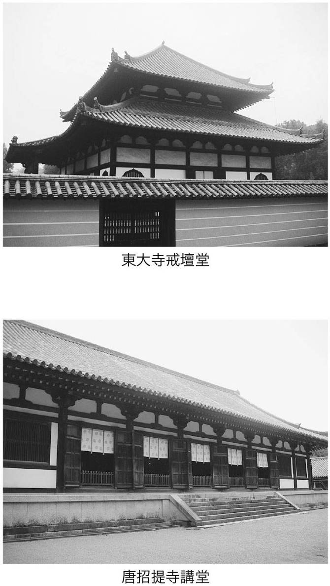
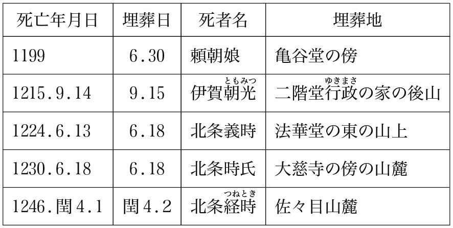

| 日本仏教の歩み (レグルス文庫) | |
| 小林正博 | |
| (2009) | |
＊この電子書籍は、縦書きでレイアウトされています。
＊電子化にあたり、機能上の制約その他の理由により書籍版（冊子体）と異なる表記・表示をした箇所があります。
はじめに
日本仏教の歩みは、大枠でとらえるなら次のようになると思われる。
古代から中世前期においては、受容―権力者の信奉・保護―定着という経過をたどり、仏教界は権力の一翼を担う一大勢力として朝廷・貴族・武士と並び立つ社会的地位を得る。ところが中世後期から近代においては、強大な政治権力によって仏教は弾圧―利用―支配の対象とされ、その社会的影響力を奪われていく。
すなわち、時代を牽引していた仏教が時代にひきずられた仏教に変貌し、不可侵的存在だった仏教が政治権力に翻弄される仏教に変質したことが指摘できるのである。
筆者はこの登り坂から下り坂に変わる時点を十五世紀後半と考えている。この時期は日本史の上でも民衆が政治の舞台に登場してくる画期でもある。
登り坂の時代、仏教が日本文化に与えた影響は計り知れないものがある。
仏教が公伝したのは六世紀だが、早くも七世紀前半の飛鳥文化に色濃い仏教の影響が見られるし、次の白鳳文化では藤原京に官寺が並び立ち、官僧が出現した。奈良時代の天平文化はまぎれもなく仏教文化そのものであった。平安前期の弘仁・貞観文化は密教の文化であり、中期の国風文化（藤原文化）以降は来世浄土を現出する寺院が林立し、それは院政期にも続いている。鎌倉時代には武家文化が始まる。中国・南宋から亡命してきた僧によって禅宗が移入され、次の室町文化には武家層さらに庶民層にも広がり禅宗文化が開花する。室町期の東山文化は、現代の日本文化の源流といわれ、花道・茶道・畳敷きの和風建築・庭園などはその底流に禅を中心とした仏教思想が流れている。
しかし、十五世紀後半以降の下り坂の時代、仏教は明らかにその体質を転換している。仏教というと葬式、法事、墓参りなどが連想され、「死」にまつわるイメージが強い。この葬送儀礼を媒介とする仏教と民衆の結びつきは、五百年前から始まったのである。すなわち現代の日本仏教の源流は、下り坂にさしかかった仏教に求めることができる。
それまで上層階級との共存関係を維持していた仏教は、十五世紀後半になって民衆を糾合し、政治権力の民衆支配との間に直接的な競合関係が生じるようになる。特に武門が神経をとがらせたのは、武力化した民衆蜂起であった。一向一揆や法華一揆に代表されるように仏教を精神的絆として結束した民衆一揆が勃発したのである。有力寺院も多くの僧兵を抱え、武門と対決した。やがて時代は戦国大名―織豊政権―徳川幕府という強力な武断政治が続き、武力化する仏教が弾圧の対象となったのは当然のなりゆきだった。結局権力に屈した仏教界は、その社会的役割を著しく規制され、民衆向けの葬送儀礼の世界に埋没していく。仏教界の体質は葬送儀礼偏重へと加速するばかりであった。
日本仏教は現代に至るまで、葬送儀礼体質の固定化、伝統化が進み、そこからの脱却は容易ではない。「一大葬送儀礼体系を媒介とし、人の死に依存するきわめて日本的な仏教と化してしまった」との仮借なき批判が浴びせられているのも事実である。
これを本書では「仏教の日本化」と称して中心テーマに据えた。
本書の内容は、古代から現代に至るまでの日本仏教の歩みをたどりつつ、各時代の文化・思想にも光を当て、文化史・思想史の領域にも踏み込んでいる。
そのために仏教史・文化史・思想史の三つのコラムを配し、言及すべき関連事項を選んで解説を施し、内容に広がりを持たせた。また写真・図表も多く掲示し、巻末には仏教史関連年表、索引も入れ読者の便を図った。
残念なことに日本仏教が、人々へ、社会へそして文化へ与える影響はますます希薄になっている現実がある。そういう意味で二十一世紀は日本仏教にとって浮沈をかけた勝負の世紀となるのかもしれない。生き残りをかけるというような消極的姿勢では、状況は悪化するばかりである。むしろ仏教の日本化の流れを見直し、体質の変革を果たし、日本仏教の普遍化への道を切り開く新しい世紀の始まりとしていかなければならないだろう。本書がその実現の一助として少しでも貢献できれば、筆者としてこれ以上の喜びはない。
筆者記
目 次
序章
日本仏教千五百年の歩みは、二つの大きな潮流の影響を受けて右へ左へ旋回しながら今日に至っているように思われる。二つの潮流とは、めまぐるしく変わる政治的激流と、古来、日本的風土の中で日本人に影響を与えてきた神祇信仰という精神的水脈である。
政治的激流は上から覆いかぶさるような高波となって、日本仏教を容赦なく飲み込んでいった。すなわち政治権力の変遷の歴史が、そのまま日本仏教の進路を決める大きな要因として立ちはだかったのである。
飛鳥時代の氏族政治は「氏族の仏教」を現出し、白鳳時代の天武天皇と持統天皇はそれを「国家の仏教」に押し上げた。奈良の律令政治は「天皇の仏教」として南都六宗の護国体質を決し、平安初期の天皇親政下では天台・真言の平安二宗が誕生する。中期の摂関政治では浄土信仰と末法思想が普及し広く貴族社会に浸透する。末期の院政・平氏政権の時代になると、武士の台頭に合わせ仏教界は自らも僧兵を擁し、権力の一翼を担う。
本格的な中世の扉を開いた源氏政権では、既成の価値観が大きく変わるなかで旧仏教内部の改革が図られ、新仏教の祖師たちが出現する。北条の執権政治下では、密教を中心とした正統の既成仏教による異端の新仏教への批判・弾圧が繰り広げられた。北条本家による得宗専制政治が敷かれると、その信奉を得て臨済禅が隆盛した。後醍醐天皇の親政、足利尊氏・直義兄弟による二頭政治、史上最大の権力者・足利義満の政権下では、臨済宗一人勝ちの様相を呈する。
やがて足利幕府の権威失墜をもたらす応仁の乱の勃発により、日本は無政府状態と化す。その中で惣村を成立させ発言権を持つようになった民衆の台頭期を迎えることになる。
民衆は仏教界に対して葬送儀礼の執行を望んだ。権力依存体質に限界を感じていた仏教界は、本格的に民衆に降りていく。これによって仏教の民衆化が実現したといってよい。しかしその実態は、「死」と「死以後」にまつわる葬送儀礼を媒介とする民衆化であった。
時代は守護大名も下剋上により戦国大名に取って代わられ、戦国時代を迎える。そこから抜け出た信長、秀吉の織豊政権は、有力寺院の僧兵、一向一揆を壊滅させ、力ずくで仏教をねじ伏せた。徳川幕府は仏教界統制のため各宗ごとに本末体制を整備させ、その上に寺社奉行を置いて仏教界の封建体制を確立する。さらに民衆掌握のため日本人全員を寺院の檀家としてくくり、檀家制度を成立させた。ここに日本人はみな仏教徒になったのである。
近代に入り明治政府は天孫たる天皇を中心とする神道を創出し、皇民への神道教育を徹底していった。仏教界はかつてない激流にさらされ、わずかに葬送儀礼にしがみついて余命をつなぐような状態に陥ってしまう。これまで神道より優位に立って歩んできた仏教は神道の膝下につき、神道を称える教義的改変を余儀なくされていく。
近代宗教史はまぎれもなく神道が主役であり、仏教はそれを引き立てる端役のような役回りを強いられたのである。
そして大日本帝国の侵略戦争に協力・加担し共同歩調をとった結果、敗戦により仏教界は滅びゆく帝国と運命を共にすることになる。
以上、日本仏教の歩みを政治史の上から、あえて「暗」の部分をクローズアップして述べてきた。ここでは、いかに日本仏教が権力という激流に翻弄されやすい体質だったのかを知っていただければよい。
一方、神祇信仰は仏教伝来以前より、日本人の祖先たちが抱いていた原始的な信仰である。土着的な精神的土壌として人々の生活・人生を支えていた神祇信仰との共存は、仏教が定着するためには避けて通れなかった。政治的激流が上から襲ってくるのに対して、神祇信仰の流れは人々の心の内部深くに流れ、時に下から突き上げてくる潮流である。これを古神道（原始神道）と定義するのはいささか問題があるが、いずれにしても仏教者は神との関係をどう位置づけるかで悩まされ続けることになる。
結局、政治権力と神祇信仰に左右され、日本仏教は進むべき方向を著しく規制され、また純粋性を失ってしまった。そこで身に具えたものは、葬送儀礼という本来の仏教にはない狭隘な役割を担う特異体質であった。それはまさに人の「死」を生業の糧にするもので、日本仏教自身の「死」を意味するものであると警鐘を鳴らさざるを得ない。
戦後六十年を過ぎた今、仏教界を含め宗教界にはさらなる新たな潮流が押し寄せようとしている。それは日本人なかんずく若者の宗教ばなれという深刻な潮流である。
確かに「葬式は仏教で」と考える高齢者は今も多い。しかし、若者の宗教観とはかなりの懸隔がある。
高齢者と若者の世代間格差は宗教観だけでなく、文化そのものがまるで違っている。ＣＤ、ＤＶＤ、携帯電話、コンピュータ、インターネットなどの情報媒体、伝達手段を自在に駆使する若者世代と、主に図書、新聞、テレビを利用してきた高齢者世代はまるで違う文化圏で生活しているかのようである。
読売新聞の「宗教観」に関する世論調査（二〇〇八年五月三十日付）によれば、宗教を信じているのは七十代以上が四一・一パーセントに対して二十代では一四・四パーセントにすぎない。全体では一九七九年の調査と比べると三三・六パーセントから二六・一パーセントに落ち込んでいる。日本人の宗教ばなれは確実に進んでおり、特に若者世代の宗教ばなれを考えれば宗教に明日はないと思えるほど、ことは深刻なのである。
また「自分の葬式をどうしてほしいと思いますか」との質問には、無宗教の葬式にしてほしいが三九・一パーセント、葬式はしなくてよいが八・五パーセントであり、もはや半数近くの人が仏教式の葬儀を望んでいない。
おそらくこの流れをくいとめることは不可能であろう。むしろこの流れは仏教に対する正統な評価の表れだと考えている。したがって、今から延命への努力を払う必要もないのではないか。葬儀中心の日本的仏教の死が始まろうとしていることは、将来の日本仏教のためには歓迎すべきだと思うからである。
一方、宗教ばなれの時流は、人間精神の涵養という視点からも看過すべきではなく、信頼の回復に努力を傾注していくことが望まれる。そのために今に至るまでの日本仏教の歩みをしっかりと認識し、将来の日本の仏教のあるべき姿を模索する作業が必要である。
神道と権力に振りまわされてきた日本仏教がまがりなりにも自立できるチャンスは、これまで少なくとも歴史上三回あったことが指摘できる。しかし、そのチャンスをものにすることはできなかった。
一回目は無政府状態に陥った室町時代後期で、葬送儀礼を媒介とした民衆仏教を誕生させたが、結局来世に向かう「死」依存型体質を決し、現世における現実の「生」を放棄してしまう。
本格的に仏教が民衆化し、民衆が主体的に仏教信仰を実践することができるようになったのは十五世紀後半に至ってからである。仏教公伝から九百年の歳月を要したことになる。しかし、その民衆化の実態は「死」とそれ以後の安心を仏教に託したものであり、むしろ現実の「生」への安心は神祇信仰にその役割を譲る結果となった。全国の村々には寺が造られ、寺院の数は飛躍的に増大する。江戸幕府はこれを民衆掌握に利用し、檀家制度のもとに組み込んだ。これによって布教の自由さえ完全に奪われ、固定化した寺檀制度が決する。こうして現実の「生」の放棄から「布教」の放棄へと突き進んでいく。民衆化を勝ち取りながら宗教としての活力を失った姿がここに見られる。
二回目は江戸幕府の滅亡により、信仰を人生の根本に置く信心為本の仏教本来の姿にもどれるチャンスがめぐってきたにもかかわらず、明治政府の神道重視に翻弄され、かえって檀家依存的体質を固めてしまう。
明治政府の神道重視・仏教軽視はあからさまであった。まさに権力と神道の二大潮流によって仏教漂流時代に突入し、沈没だけはくい止めようと防戦一方に陥ったのである。
そのうえ、僧侶たちの間で妻帯が蔓延して家族を形成し、実質的には在家と化していった。それは「出家」の放棄につながり、もはや在家の一般信徒との明確な違いは衣や袈裟を着ているかどうかという恰好だけになってしまった観がある。今は僧侶の妻帯に違和感を持つことはほとんどない。しかし、東南アジア、東アジア仏教圈で妻帯している聖職者はいないことも現実なのである。「出家」の放棄―これも仏教の日本化の特質の一つである。
三回目は第二次大戦後、宗教界全体がゼロからのスタート地点に立ったなか、在家中心の新教団に後れをとり、またしても葬送儀礼体質からの脱却に失敗したことである。
軍事大国路線をひた走る大日本帝国に対するやみくもな随順姿勢の代償として、仏教者は戦争責任を問われ、戦後はその清算と自浄努力から始めなければならなかった。
一方、そのような負い目のない在家が在家を教導する教団は、現実の「生」からスタートし「布教」を推進した。それは既成仏教界がこれまで放棄してきたものを再生し、「生」を第一義とする仏教の民衆化を実現する新宗教時代の到来であった。出遅れた既成仏教はまたしてもチャンスを生かせず、減り続ける檀家のつなぎ止めに精力を注ぎ、完全に守勢に立たされたのである。
今、四回目のチャンスが目前に迫っている。目に見える大きな歴史の変わり目とは言えないが、今の青年層が老壮世代になってからではもう遅いという意味を込めて、変革のチャンスの時を迎えているととらえておきたい。
その場合のキーワードは日本仏教の普遍化である。具体的には仏教を通した人格の陶冶をめざす「自己の確立」、地域、社会を支える庶民が主体になって仏教の平和・平等の精神に基づくふれあい豊かな共同体を形成していく「庶民協動」、輝ける人生を歩むための仏教の智慧を広く活かすことを第一義とするために死依存を放棄する「脱葬儀」の視点から普遍化をめざしていくべきだと考えている。世界宗教たる仏教にはこれらを満たす十分な教義が具わっている。
今、仏教者が心しておきたいことは、「死」依存の仏教の日本化は終わりが始まろうとしている一方で、日本仏教の普遍化は始まりが始まろうとしているという信念を持ち続けることであろう。
第1章──仏教伝来以前の渡来人の宗教観
この章では仏教に言及することはほとんどない。むしろ六世紀半ば以降、外国の宗教である仏教を受容した原日本人の宗教観をまず押さえておきたい。
インドの釈尊が仏教を説いたとき土着の信仰として定着していたバラモン教は、人々の心・生活・人生に深く浸透していた。中国に仏教が伝わったとき、すでに儒教・道教がしっかり根付いていた。両国ともに体系化された思想の存在があったのである。
日本に仏教が伝わってきたとき、日本列島にはすでに定着していた思想・宗教はあったのだろうか。この解明は日本の仏教の歩みを論じる上できわめて重要である。
「仏教伝来以前の渡来人の宗教観」という章名に渡来人と表記したのは、少なくとも「日本人」はこのころいなかったからである。「日本」という国家の成立は天武・持統の白鳳の時代すなわち七世紀後半を待たねばならない。したがって先土器、縄文、弥生、古墳文化を形成していった人々は、正確には「日本人」ではなく、このころ日本列島に住んでいた我々の祖先ということになる。それをあえて「渡来人」とくくったのは、大陸や東南アジアから渡ってきた人たちによってもたらされた文化・宗教観を見ようとするからである。もちろん「渡来人」は「帰化人」とも違う。「帰化人」は帰属するべき国家の存在が前提にあってこそ称される表現である。日本という国家のない時代には「帰化人」が存在する由もないのである。
そもそも一般的にいう建築、絵画、文学、彫刻、工芸、音楽、思想などを総称する意味の「文化」そのものがこの時代に存在したのかがまず問われなければならない。先土器、縄文、弥生、古墳は時代というより文化の名として用いられているが、今並べた文化的所産の存在を浮き上がらせることは困難である。たしかに遺跡、遺構、遺物の発掘はおびただしい量に達するが、そこから文化的要素を抽出するには大きな制約が横たわっている。まず文化的活動の出発点ともいうべき文字が書かれた遺物の出土は皆無に近い。そのため土器の変遷や葬法のありようなど、比較的豊富な発掘資料からの議論に限定されることになる。
左の表は原始・古代の専門家たちの努力によって積み上げられてきた現時点の成果をまとめたものである。特に年代については、その上限と下限が揺れ動いており、新たな考古学的発見によってこれまでも通説が覆され、小中学校の歴史教科書が何度も書き換えられている現実がある。
先土器文化は、文字通り土器の製造・使用がなく、一部石斧に磨製石器が見られるが主に打製石器が用いられた。日本列島が形成される以前の先土器文化は、まだまだ発掘例も少なく、どういう営みをしていたのかその特質を導き出すのは至難のわざである。二十世紀末には北海道や東北で数十万年前の遺物が次々と発見され新聞紙上を賑わしたが、それらがすべて捏造であったことは記憶に新しい。ふりだしにもどされた先土器時代の解明は、まだまだ時間がかかりそうである。
縄文文化には、土器の製造による生活様式の進歩が見られる。それまでは生で食べたり焼いたりする程度の食事だったが、縄文土器の使用によって、煮たり温めたり、堅いものも柔らかくできるようになった。複数の具材を入れた汁物も作られ、料理の幅が広がりバラエティに富む食生活が実現した。
住居は周りを土塀で囲み、土を一メートルほど掘って居住空間としての床を作り、数本の木を組んで藁などで屋根を葺く竪穴住居が考案される。縄文人たちは、複数の家族による共同体を形成する。なかには広場や祭壇を持つ共同体もあり、数十世帯、場合によっては百世帯を超える大きな集落跡も出土している。こうした共同体には、共同生活上のしきたり・儀式があり、そこに縄文人の宗教観をうかがうことができる。移住、狩猟中心の平等社会とされた縄文時代に関する常識は、青森の三内丸山遺跡によって大きく覆された。すでに五千年前に米作りではないものの縄文農耕が行われていたことが明らかとなり、埋葬のあり方にも厚薄があって身分格差社会の実態が浮かび上がったのである。
その縄文社会特有の文化的現象を伝えてくれるのは抜歯、土偶、屈葬である。
縄文後期によく見られる抜歯の風習は成人儀礼とされ、上の二本の犬歯を抜いた例が多い。しかし、それ以外にも下の犬歯がなかったり、下の門歯四本がないものもあり、年齢を重ねて結婚するとさらなる抜歯の風習があったようである。つまり、抜歯と生涯儀礼は深く関係していることが明らかになっている。しかし、抜歯が魔除け的な呪術とつながりがあったかどうかは解明されていない。
土偶は女性をかたどり、こわれた形で出土するものが多く、安産や病気治しの呪術的要素を含むものとされている。
埋葬の仕方で一番多いのは、遺体を折り曲げる「屈葬」である。そのほかに、胸の部分に石を抱かせる「抱き石葬」も散見される。先祖の霊魂が体から離れて悪さをしないように封じ込めようとしたか、魂に対する恐怖感の表れか、いずれにしても縄文人には霊魂＝タマに対する観念があったように思われる。
また、縄文人は自然とともに生きていた。自然の猛威には無力であり、自然に対する一種の畏敬の念を抱いていた。呪術が重要視される背景には、自然には人間の力を超えた目に見えない働きがあり、そこに神や霊魂が内在するという素朴な宗教観があったようである。特に自然災害などの災異は、大地や天上、さらには山、森、岩などに宿る神の仕業と見なしていたことがうかがわれる。それはアニミズム（精霊信仰）といってよい。
弥生の時代になると人々は闘争を開始する。隣接する共同体同士が争ったり、時には、自然の猛威に立ち向かうこともあった。弥生人の好戦性は、金属器の使用により武器の性能が各段に高まったこととも深い関わりがあるようだ。この時代に多く見られる武器が刺さった人骨の出土は縄文には見られなかった変化である。
水稲栽培が始まったのも弥生時代の特徴である。ルートは諸説があるが大陸からの移入である。人口的には圧倒的に縄文人のほうが多いが、弥生の文化は縄文の文化を変革させるだけの質の高さを具えていた。こうして縄文人は大陸文化の恩恵を蒙り、渡来した弥生人と同化していく。
そして大陸からは、これらの人々を総称して「倭人」と呼ばれるようになる。倭人の宗教観は精神的な強さが反映して、屈葬や土偶に見られるような霊魂＝タマに対する恐怖観念は薄れている。屈葬から伸展葬への推移はそれを象徴しているといえよう。
縄文に比べ弥生の文化的要素はいっそうの豊かさを帯びてくる。それは厚くてもろい縄文土器が、薄くて丈夫な弥生土器に進歩したということだけでなく、青銅器、鉄器の使用、水稲栽培の導入、貧富の格差、為政者の登場など生活、社会のありようは縄文文化を駆逐した観がある。
弥生の時代はまだ統一政権は存在せず、日本列島には「クニ」という小国が散在していた。「クニ」はその生活圏を環濠で囲み、集落を形成している。紀元前一世紀の日本列島の様子を「夫れ楽浪海中（朝鮮半島・平壌付近）に倭人有り、分れて百余国と為る」と記した『漢書』が伝えるように、我々の祖先はこの「倭人」と考えるのが適切である。そして倭人の文化は、渡来人たちが大陸からもたらした文物・技術によって形成されていったことを認識する必要がある。実は日本古来の伝統的文化、その精神性あるいは宗教観を論じることは、大陸文化が日本列島に入ってどうアレンジされたのかを議論しているにすぎないのである。
古墳とその周りに立てられた土製の埴輪に象徴される古墳文化の時代は、四〜六世紀を中心とするのが通説であった。しかし上限は奈良県桜井市の纒向遺跡群の発掘により三世紀前半に、下限は保存問題で揺れている高松塚古墳が造られた八世紀初めにまで広がっている。
特に纒向遺跡群には多くの前方後円墳の存在が確認され、奈良県桜井市一帯に大和朝廷が置かれたとすれば、その成立を三世紀に遡らせる考えも出ている。そうすると卑弥呼の邪馬台国と時期が重なることになり、畿内か九州かの位置論争とも深く関わってくる。卑弥呼が死んだのは二五〇年ごろであり、それより古い前方後円墳が存在したことになると、邪馬台国＝弥生の図式が崩れ、邪馬台国＝古墳の時代と言わなければならないだろう。纒向遺跡群から発掘された遺物には、弥生期に一定の文化圏を形成していた吉備（岡山）や出雲（島根）との交流の痕跡がうかがえ、まだまだ解明すべき課題が多い。
邪馬台国について言及する『魏志倭人伝』からは、当時の人々の宗教観として次のような記述を抽出できる。
①其の死には棺有るも槨無く、土を封じて冢（墓）を作る。
②モガリの期間、十日間肉を食べない
③すなわち骨を灼きて卜し、以て吉凶を占う
④（卑弥呼は）鬼道を事とし能く衆を惑わす
①は遺体を棺に入れる。棺を囲むスペースはなく、土の中にそのまま埋めて冢（墓）を作るとある。②はこのころ死に対するケガレの観念があり、喪に服すモガリの風習があったことを伝えている。③はいわゆる太占の法であり、鹿の肩胛骨を焼き、その割れ方によって吉凶を占っていたことがわかる。④は鬼道の内容が判然としないが、シャーマニズムを想定してよいだろう。人智を超えた神の声を聞き、人間社会にその声を伝える巫女の権威性を卑弥呼に認めている記述である。
三世紀の纒向遺跡（奈良県桜井市）が大和朝廷の原初的出発地点だとすれば、五世紀になって大和朝廷はその勢力圈を河内（大阪）に広げた。あるいは河内の有力氏族と連合政権が成立したのかもしれない。河内には 大山（大仙）古墳と誉田御 廟山古墳という墳長四百メートルを超す一位、二位の規模を誇る巨大前方後円墳がある。それぞれ仁徳陵・応神陵に比定されてきた古墳である。おそらく本格的な大和朝廷の成立は、この大和・河内を勢力圏とした五世紀後半であろう。『宋書』に記される讃・珍・済・興・武の倭の五王の時代に当たる。
纒向遺跡群を形成した為政者の精神的支柱は三輪山である。ご神体は山そのものであり、大物主神を祀るこの山に一定の霊力を認め、為政者が祭祀を主宰していたのであろう。そういう意味では纒向の王権は政治的支配権を握るとともに、シャーマン的存在としての権威も具えていたことになる。三世紀に纒向政権と並存した邪馬台国（九州説）、あるいは纒向政権＝邪馬台国（畿内説）は、卑弥呼のシャーマン的権威と男王の権力との連携によって支配されている。

五世紀になると「倭」の五王が出現してその位は大王（のちに大王は天皇となる）と称される。大王の号が使われたことは、五王最後の武王すなわち雄略に比定される名が見られる熊本の「江田船山古墳鉄剣銘」と埼玉の「稲荷山古墳太刀銘」に「大王」と刻まれていることから明らかである。
大王が政治権力とシャーマン的権威をもって有力氏族を従えていたことは、のちの天皇制を考える上で重要である。天皇は有力氏族と横並びで見なされることはなく、宗教的祭事の主宰者としての権威を維持する限り、滅ぼされる対象になることはなかったのである。のちの歴史で、たとえ天皇が政治的権力を失っても天皇制が存続している理由をこの宗教的権威に求めることもできよう。
以上述べてきたように、日本列島における原始社会の宗教観を、断片的であるがあえて総称して古神道あるいは原始神道と呼ぶとすれば、その特徴として次の三点を挙げることができる。
❶アニミズム（animism） 人間の力を超えた霊的存在を信じる精霊信仰
❷タマ信仰 氏族や先祖の霊魂、タマへの畏敬の念を込めたマツリゴト
山・森・岩・木などの自然や、鏡・剣などの青銅器などをタマの宿る依代とする
❸シャーマニズム 災異や恩恵を与える自然神と人間界を取り結ぶ巫女の存在
しかし、これらをそのまま原始時代の日本独自の宗教観として特化することはできない。そもそも日本人のルーツは縄文人と弥生人の混血によるものであり、特に大陸から渡来してきた弥生人は縄文人より文化的資質が高く、その弥生人が持っていた宗教観が日本列島に展開されたと考えるのが妥当である。
つまり日本の弥生文化の時代には、中国ではすでに❶❷❸はみな出そろっていたのである。中国史では、秦によって統一された紀元前二二一年以前を先秦時代という。先秦時代の最後は春秋戦国時代（紀元前七七〇年～紀元前二二一年）であり、この時代に道教と儒教が成立する。漢文学者の白川静は、儒教の祖・孔子の時代にすでにシャーマニズムが流行していたことを指摘している（白川静『孔子伝』中公文庫）。
次の秦・前漢の時代には陰陽五行説が確立され、董仲舒はこれと儒教の『春秋』の教説とを融合させ、災異が為政者の失政や悪徳に対する天の怒りによって起こるという「災異説」を打ち出している。
このように❶❷❸は紀元前における中国の宗教観と重なっていることが指摘できる。要するに天地・祖先・神霊に対する崇拝の念が中国ですでに定着していたのである。
したがってこれらの宗教観念を抱いた渡来人が、朝鮮半島から日本列島にやってきて、弥生期、古墳期の倭人の宗教観に大きな影響を与えたことは十分に考えられるのである。
また民俗学の視点からは、日常生活と非日常の区分けが存在し、日常のケ（気）がだんだんそのエネルギーを失って、ケガレ（気枯れ）の状態になると、エネルギーの供給のために非日常的な場を設定し、ケ（気）の注入をするハレの行事を行うという。そこに宗教的儀礼が入ってくると考えるのである。
これを弥生以降の農耕社会に当てはめるならば、豊作を実現するための農耕儀礼は、形態こそ地域によって異なるもののハレの行事を重視していたことは共通している。多くの民俗学からの報告を集約すれば、年始の予祝儀礼（一年間の豊饒を祝い願う行事）、春の播種儀礼、夏の除災儀礼、秋の収穫儀礼が年中行事として古くから執り行われている。ここからは死からの再生、成長、減退そして死と、毎年毎年繰り返されるハレ→ケ→ケガレの循環が見て取れる。
これらは農神や先祖の霊魂＝タマに対する儀礼であり、豊作を祈願する弥生・古墳文化社会の共同体行事といってよい。タママツリ、タマオクリ、タマシヅメ、タマヨビなどの宗教儀礼が仏教伝来以前から存在していたのである。
青銅の鏡や、銅剣・銅矛・銅鐸などの道具が製造された目的は、神々や先祖のタマに対する儀礼を飾るためであるので、これらも仏教伝来以前の宗教観を表出させる文化的所産ということになる。
文化の伝搬の上でもう一点忘れてはならないものに漢字がある。いうまでもなく言語を記号化して表現することは、すべての文化的所為の始まりに位置づけられる。
発掘による考古的資料は、ほとんどが石器、土器、木材、金属器中心であり、文字が書かれる資料いわゆる金石文が登場してくるのは四世紀ごろである。文献の上では『古事記』『日本書紀』に大王・応神のころ（四世紀末ごろか）、百済の王仁が漢字と儒教を伝えたとある。そして五世紀後半の大王・雄略のことを伝える「江田船山古墳鉄剣銘」や「稲荷山古墳太刀銘」はいわば和製漢文の嚆矢である。その後、漢字の普及は王権の伸張とともにその必要性を増し使用がさかんになる。奈良時代の僧によって発案されたカタカナや、平安時代に編み出されたひらがなが和製の文字として普及するまで、日本は中国・朝鮮と同じ漢字立国だったのである。
六世紀後半、公伝された仏教は可視的な仏像とともに漢文で書かれた経典をもたらした。倭人の宗教観がほとんど文字で表記されることのなかった時代に、大量の漢字で綴られた仏教経典が入ってきたことを考えれば、仏教は脆弱な土着の信仰しかない倭人の宗教観を容易に包みこんでしまったであろう。古神道と仏教との教義的・文化的レベルの差は歴然としていたのである。
このように先行する土着的な思想・宗教と仏教の文化レベルを考える場合、日本とインド・中国ではまったく事情を異にしていたのである。
第2章──仏教公伝と飛鳥文化
戦前の歴史教育では「仏教伝来いちにいちに（一二一二）」と教えていたという。これは初代天皇神武の即位（西暦紀元前六六〇年）を紀元元年として、仏教公伝の年・西暦五五二年が一二一二年目に当たっていたからである。ちなみに神武の即位は正月一日とされているが、明治政府が新暦を採用し、明治五年十二月三日を明治六年正月一日にしたことにより、新暦で二月十一日となり（明治六年の紀元節制定時は一月二十九日）、これが現在では「建国記念の日」となっている。
紀元前六六〇年といえば縄文時代末期である。もちろん日本もなければ朝廷もなく、狩猟、移住生活をしていたような時代である。文化的営為に見るべきものもない時代に建国などありようがない。
本来、日本人とは南方モンゴロイドを核とする縄文人と北方モンゴロイドを核とする弥生人が混血し、さらに四世紀以降、朝鮮半島からの渡来人がこれに交じり成立した雑種の民族とされている。特に文化や学問、思想などは外来のものが占めており、その影響のもと列島内で改良されていった、つまり外来文化の日本化というところに日本の独自性を見ていくのが妥当な考え方である。
したがって「仏教伝来一二一二」の語呂合わせの基になっている『古事記』と『日本書紀』に標榜される「記紀神話」を前面に立てて、日本人のオリジナルな精神世界を解明しようとするのは「記紀」の編者の意図に引きずられる危険性をはらんでいる。
さて、仏教公伝を西暦五五二年とするのは『日本書紀』の「欽明天皇十三年」という記述によっている。この年は干支では壬申の年、大和国家と友好関係を結ぶため百済の聖明王から仏像（釈迦仏金銅像）と経典が伝えられる。一方、『上宮聖徳法王帝説』や『元興寺伽藍縁起並流記資材帳』によれば、戊午の年の五三八年説となる。これを「欽明天皇七年」と記しているが、欽明十三年と七年では六年違いで、五五二年と五三八年は十四年の違いになり矛盾が生じる。これを整合させるために、欽明政権と安閑・宣化政権の両朝並立時代という考えが提示されている。それはともかく五五二年説は五百年後の一〇五二年が日本における末法元年であり、そもそも中国では五五二年が末法の始まりという説もあり、なかなか意義深い年ではある。
『日本書紀』の仏教記事は、遣唐使として七一八年に帰国した三論宗の道慈が書いたという説が有力である。このとき道慈は『金光明最勝王経』（七〇三年、義浄訳）を請来している。この経典は奈良仏教では法華経と並んで重要視されている。全国に建立された国分寺に納められ、法華経と並んで官僧試験の試験科目にもなっている。特にこの経の四天王品に登場する持国・増長・広目・毘沙門（多聞とも）の四天王は、古代寺院の須弥壇の座配によく見られるように、それぞれ東北・東南・西南・西北の四偶に安置され仏教と社会を守護している。この四天王による護国の思想は奈良仏教が担った国家的使命でもあった。
仏教公伝が五五二年か五三八年かは、百済の聖明王の即位に関しても十四年の開きのある二つの説があり、決着はついていない。そこで公伝は六世紀中頃として押さえておきたい。
むしろ忘れてはならないのは、仏教公伝の陰に隠れて十分に研究がなされていない儒教・道教や、それに派生する陰陽道などの中国諸思想もこのころ朝鮮半島から伝わったことである。これらが政治・文化に与えた影響は仏教に勝るとも劣らないものがあった。朝廷が採った諸政策、たとえば暦、司法、官僚機構、収税体系などにおいては、仏教の貢献はほとんどないといってよい。大和朝廷はその支配システムの多くを中国王朝の政治体系に負っており、儒教・道教・陰陽道の影響はもっと論じられるべき研究テーマなのである。
しかし、文化の面では飛鳥文化の仏教色はまぎれもなく突出していた。
飛鳥の時代は、大王・推古の治世となる六世紀末から蘇我氏本家が滅びる六四五年の乙巳の変までの約五十年間である。飛鳥文化の特徴は主に百済からの移入文化であり、その百済は新羅との対抗上、中国南朝とつながりその文化の影響を強く受けている。百済は日本に対して対新羅への援軍の見返りとして、盛んに中国文化を移出した。その代表ともいえるのが仏教であり、飛鳥文化の特質の主要な部分を占めている。百済から六世紀半ばに公伝された仏教は、大王・欽明や敏達がその受容に必ずしも積極的ではなかったのに対して、次の用明になると母が蘇我氏出身ということもあり容認の姿勢に転じている。
有力氏族の間でも仏教受容の可否が問題となり、容認派の蘇我氏と反対派の物部氏の間で対立が起こる。
蘇我氏はもともと朝鮮半島からの渡来人である。馬子に至る先祖の系譜は、韓子―高麗―稲目―馬子と伝えられている。とすれば中国から百済へとすでに四世紀には公伝していた仏教を信奉する有力氏族であった。なお朝鮮半島への仏教公伝は高句麗・百済・新羅の三国鼎立の時代である。それぞれ高句麗は中国北朝仏教が三七二年に、百済は中国南朝仏教が三八四年に、新羅は高句麗から五世紀中頃に公伝している。
受容反対派の物部氏は『日本書紀』によれば、物部尾輿が仏を蕃神（となりの国あるいは外国の神）ととらえ、これを拝することは国神の怒りを招くとして受容に反対している。
注目すべきはこの段階での仏のとらえ方で、外国の神と見なしていることである。つまり仏を仏としてとらえず神の一種と見ていることは、当時の権力者たちの関心が、仏とは何かというような思想的な関心ではなく、氏族制社会にあって、氏族の守護を担う氏神の一つとして受け入れるかどうかという功利的次元の問題だったことがうかがわれる。しかし、たとえ仏を蕃神ととらえていたとしても、違いははっきりと認識していた。それは〝見える仏〟と〝見えない神〟という明確な違いである。それまで人間の力を超えた超自然的な神の存在を認めてきた倭人は、見えないからこそ神との交信を担うシャーマンに権威性を認めていたのだが、蕃神は最初から仏像として眼前に姿を現していたのである。
日本における仏教受容が短期間のうちに進んだ理由として、仏像という絶対者の具現化を挙げておきたい。仏を可視の世界に引き下ろすことは、仏教教義の柱の一つでもある空思想とは対立するものである。初めから目に見える形で入ってきた日本仏教は、中国化された仏教からの受け売りであってインド仏教を淵源とすることはほとんどなかった。「見える仏」――これも日本仏教の性格を規定する特質の一つなのである。
蘇我・物部の政争が、仏教受容派の蘇我氏の勝利に終わったことの意味は大きい。仏教受容の道が大きく開かれ、蘇我稲目の子・馬子は一塔三金堂の本格的な伽藍配置を持つ法興寺（のちの飛鳥寺）を建立する。一塔三金堂は当時の高句麗の寺院の伽藍配置によく見られるところで、その影響が指摘されている。また馬子は日本で最初の出家者となる善信尼を養育している。善信尼は高句麗の恵便に師事して出家し、父は司馬達等、甥には鞍作止利仏師がいるから当時の一級の文化人を輩出した家柄出身である。最初の出家が女性だったことはシャーマニズムにおける巫女的役割を想起させて興味深い。さらに蘇我氏は尼寺として豊浦寺も建立したとされている。しかしこれらは蘇我氏の氏寺であって、けっして国家の寺すなわち官寺ではない。したがって日本仏教の出発点は、氏族の仏教として受容されたものだったといえよう。
蘇我氏の建てた伽藍の偉容は、当時の倭人を驚嘆させるものであった。古墳文化が余命をつなぐなかで、いまだに竪穴式住居に生活していた庶民にとっては、突如として建造された寺院の出現は、まさに異文化をまのあたりにする衝撃的な出来事であったにちがいない。
日本における仏教受容に多大な貢献をなしたのは蘇我氏であるが、それ以上の功績が称えられるのは聖徳太子である。太子の業績を見る限り、仏を神の一種と見なさず、仏を仏として理解していた唯一の日本人と位置づけられよう。
ところが近年「聖徳太子はいなかった」という議論が古代史を賑わせている。確かにその実在を証明するものが何一つないのは事実である。中学・高校の歴史教科書でも、「聖徳太子」→「聖徳太子（厩戸皇子）」→「厩戸皇子（聖徳太子）」→「厩戸皇子」と表記がめまぐるしく変わっている。しかし、少なくとも聖徳太子はいなくても厩戸皇子は実在したのである。
その業績の筆頭は法隆寺の建立である。今や世界最古の木造建築として世界遺産の一つに数えられる法隆寺は、創建の段階では官寺ではなかった。厩戸皇子によるプライベートな氏寺すなわち大王家の寺であり、その点では蘇我氏の寺々と同じである。官寺に昇格するのは六七〇年に火災にあい、新たに再建される時を待たねばならなかった。その時代は次の白鳳期である。
そのほか、四天王寺をはじめとして多くの古代寺院が聖徳太子による建立と言い伝えられているが、残念ながらそれを立証することは困難である。
もう一つの偉大な業績とされているものに『三経義疏』の撰述がある。すなわち『法華経義疏』『勝鬘経義疏』『維摩経義疏』の三つの経典の注釈書である。このうち『勝鬘経義疏』は敦煌から種本が発見され、『維摩経義疏』はのちの時代に成立した杜正倫の『百行章』が引用されていることから、聖徳太子（厩戸皇子）撰述は揺らいでいる。『維摩経義疏』はもともと『日本書紀』や『上宮聖徳法王帝説』には言及がない。
かろうじて太子の真撰として生き残っているのは『法華経義疏』である。現在、宮内庁所蔵の『法華経義疏』は太子自筆本とされ、時代も飛鳥期である可能性が高い。『法華経義疏』真撰説に生涯を賭けた花山信勝はＡ級戦犯であった東條英機の教誨師であったことでも有名だが、花山は『法華経義疏』に残る地の文に対する校正箇所の多くに、日本人によるものとしか考えられない表記が見られること、仏教に対する造詣の深さも見られること、そして地の文と校正が同筆であることから太子自筆以外に考えられないという。一方、偽撰説によると『法華経義疏』は中国の成実学者・光宅寺法雲の『法華義記』を下敷きにしたものだという。この真偽論は軽々に結論を出せる問題ではないが、『法華経義疏』の存在は、飛鳥の時代に思想哲学として仏教に一定の理解を持つ倭人がいたことをうかがわせているのである。
そのほか『日本書紀』には、太子が師事した朝鮮の僧侶たちのことが記されている。
高句麗の恵慈と曇徴、百済の恵聡、観勒の四人である。
恵慈は恵聡とともに三宝の棟梁と称えられ、蘇我氏が開いた法興寺に住した。曇徴は絵の具や紙墨を伝えたとされ、朝廷の文書主義の道を開いた功績が認められよう。観勒は天文、暦、遁甲方術などをもたらし、僧正・僧都等の僧侶の位が制定されるに至り最初の僧正に任じられている。この四人が飛鳥文化に果たした功績は少なくない。
したがって、飛鳥の時代に仏教が短期間のうちに権力者層に受容されていったことにゆるぎはない。
寺院の建立は有力氏族によって次々と行われ、『日本書紀』によれば六二四年の段階で四六カ寺、僧八一六人、尼五六九人を数えたという。これらは大王家も含めた氏族の建てた氏族の寺であり氏族の僧尼である。有力な氏族たちは古墳に代わる権威の象徴として、寺院の建立を競い合ったことがうかがわれる。このころの仏教が「氏族の仏教」といわれる所以がここにある。
第3章──白鳳期の仏教
白鳳は元号の名前ではあるが、日本における正式な元号の初めは大宝であり七〇一年からである。白鳳は時代的には七世紀後半で、白鳳期の仏教は特に「国家の仏教」と称され、白鳳文化にも仏教の影響が色濃く表れている。なんといってもこの時期で最も重要なのは「日本」と「天皇」が誕生したことである。
蘇我氏本家を倒した中大兄皇子、のちの大王・天智の治世後、政権を獲得した天武の時代に国家としての条件を満たす日本国の建設が始まる。そして夫の天武の遺志を受け継いだ妻の持統は日本国を成立させ、その初代天皇として即位する。
白鳳期は「倭」が「日本」となる時代だが、それは国家の成立を意味している。『日本書紀』の記述からすれば、国家らしい国家が確立するのは六四五年の大化の改新の詔からということになる。そこには公地公民、国郡制、戸籍・計帳、税制の四カ条が打ち出されているから、これが事実なら蘇我本家を倒した中大兄皇子（のちの天智天皇）のころに実質的な国家が成立したといってよい。しかし、この四カ条の内容はすべて疑問視されており、成立は次の年代が有力である。
公地公民制は六八九年、国郡制は七〇一年（大宝律令）、戸籍・計帳は六七〇年（庚午年籍）、税制は六八九年である。これによればすべて天武・持統の時代、つまり白鳳期ということになる。特に持統天皇が制定した六八九年の「飛鳥浄御原令」は国家の確立の上で重要な意味を持っているのである。
この時期に仏教は「氏族の仏教」から「国家の仏教」へと昇格する。このことは仏教がますます国家の中枢との結びつきを深め、国家に奉仕する仏教の体質を確定することを意味する。六七〇年に焼失した法隆寺は国立の寺・官寺として再建され、国家仏教を象徴する寺となる。天武・持統の時代、遣唐使は一度しかなく、大陸文化の移入は遣新羅使が担っている。白鳳期は遣新羅使は十回を超えるが遣唐使は天智朝から天武朝への政権交代を決した壬申の乱（六七二年）以降一度もなく、七〇二年にようやく三十二年ぶりに再開されるほど唐とは疎遠だったのである。新羅ではこのころ華厳経がさかんに信奉されていた。のちの奈良仏教のシンボルともいうべき大仏が華厳経の仏・盧遮那仏であることも、新羅仏教の移入との関係が深いのである。
このころ朝廷では、仁王般若経、金光明経、法華経などが護国の経典として盛んに法会で読誦された。主に権力側が仏教に求めたのは、①に鎮護国家（護国経典の重用）、②に氏族の安泰（地方寺院建立）③に除災招福の祈禱であった。特に①と③は古代・中世仏教の権力依存、権力との運命共同体的な体質につながっている。
この時期、仏教だけが国家とつながって宗教的役割を独占していたわけではない。それまで漠然としていた古神道が具体的な形で登場してくるのである。すなわち大王家の氏神にすぎなかった天照大神への崇拝、それを祀る伊勢神宮への信仰が、天皇家の信仰の核となり、それはそのまま公ごととして国家の精神的支柱にまで高められていくことになる。天武・持統期が伊勢神宮を重視したのは、壬申の乱で大友皇子（明治になって歴代に追加され弘文天皇と称される）を攻めるのに東進して伊勢の国を通ったとき、伊勢神宮に向かって戦勝祈願したことがきっかけである。
それ以来、伊勢神宮は皇室の神宮として信奉され、氏族のあがめる諸神の上に位置づけられるようになる。それは政治の世界における天皇と氏族との主従関係を正当化する宗教的根拠ともなっていく。
次の奈良時代に成立する『古事記』と『日本書紀』に表出する天孫としての天皇を強調する「記紀神話」の原型は、おそらく持統天皇の時代に練り上げられたものであろう。同じ奈良時代に編纂された『万葉集』は内容から四期に分けることができるが、その第二期が天武・持統朝の時代に当たる。専門的な宮廷歌人が登場し、その代表的存在である柿本人麻呂は「大君は神にしませば天雲の雷の上にいほらせるかも」と謳っているが、この和歌にある「大君」は持統天皇に比定されており、大君＝神という概念の存在がうかがわれる。そのほか、大伴御行、読み人知らずの二首も「大君は神にしませば」で始まり、これも天武・持統期のものである。これらが天皇天孫説にまで踏み込んだものと即断はできないが、天皇の神格化はすでに存在していたと見てよい。
しかし『古事記』や『日本書紀』の記紀神話では天孫説は恣意的に強調されている。神の子孫たる〝天皇〟の権威を標榜する『古事記』と、〝日本〟という国家の対外的アピールに重点を置く『日本書紀』には、仏教伝来以前から日本人の持っていた精神構造が表出しているようだが、縄文・弥生・古墳の時代にすでに大王は国神の子孫だなどという認識を持っていたとはとても思えない。『古事記』は大王・顕宗までは歴代の事績が述べられているが、それ以後の推古までは系譜や即位年、死去の年、墓の場所を記すばかりで歴史的事実を忠実に残そうという姿勢は初めから見られない。また仏教に関する記述は皆無である。
『日本書紀』は歴代の大王にまつわる出来事を編年体で記しているので、興味深い記事も多いが、史実と伝承との区別が見極めにくい難点を抱えている。特に仏教に関する記述は三論宗の道慈が書いたとされているが、もしそうなら七一八年に唐から帰国してわずか二年間（『日本書紀』の完成は七二〇年）で仕上げたことになる。
したがって仏教記事すべてを史実としてとらえるべきではなく、むしろ奈良の王朝にとって喫緊の課題であった日本そして天皇について臣民や中国へ認知させることを編集の第一方針としていたことを認識したうえで読む必要がある。
『日本書紀』には世界の始まりについて「古へ、天地未だ剖れず、陰陽の分かれざる時、渾沌たること鶏子の如く、......天まず成りて地、後に定まる」とある。これは『准南子』（紀元前一四〇年）と『三五暦記』（三世紀）からの引用をつなぎ合わせた文章になっている。あるいは直接の引用ではなくもっと後代の典籍からの孫引きの可能性もあるが、いずれにしても陰陽道の説を基本にして神話が綴られていることは明らかである。
このことから日本と天皇を内外に周知する使命を帯びた『日本書紀』の特徴として、次の二点を確認しておきたい。第一点は外来の思想哲学の中で、仏教より陰陽道に利用価値を認めていたこと、第二点は元始より日本人が持っていたとされる独自の古神道を創出したことである。しかし作られた古神道のもとになっている材料は、漢字の移入から始まり、思想哲学、医術、薬学、暦、天文知識、そして仏教という外来のものである。したがって記紀神話を中心とする古神道らしき表現の大半は、七世紀後半から八世紀初めまでに出現した天皇と日本を周知するための中国思想の日本化による所産というべきなのである。
特に陰陽道の影響は、日本で最初の本格的な都・藤原京の造営プランに及んでいる。持統天皇の藤原京は、天の香具山、耳成、畝傍の大和三山をも囲む大規模な都であったことが最近の研究で有力になってきている。とすれば、奈良の平城京や京都の平安京をも凌ぐ本格的な都ということになる。
陰陽道には地理についての詳細な占術が説かれているが、その一つに風水の考え方がある。都の位置を決めるに当たって、風水では四神相応の地が選ばれる。中国漢代に玄武・青竜・朱雀・白虎の四匹の神獣が、四方からの災異をくい止める役割を担っているという考え方があった。四神相応とは、北に山がありここには玄武がおり、東に川が流れここには青竜がおり、南に池がありここには朱雀がおり、西に大道がありここには白虎がいるとするものである。藤原京にはこの四神の名を冠した大路が通っていた。のちの平城京、長岡京、平安京でも朱雀大路を南北のメインストリートとし、内裏のある宮の南端に朱雀門が置かれることなどから、四神相応の地を選んで都づくりが行われたのである。
また丑寅（東北）の方角を鬼門とし、そこからの邪鬼の侵入をふせぐために寺院を配置して都を守るという考えは後世まで生きている。平安京における比叡山延暦寺しかり、江戸城における東叡山寛永寺しかりである。また四神は高松塚古墳の四壁に画かれているが、これも白鳳期のものである。広義の意味での陰陽道の影響はけっして軽視すべきではない。
思想史コラム
「陰陽道」
古代中国では、木火土金水の五行と一年十二カ月、時刻や方角を表す子丑寅などの十二支をもとに陰の気・陽の気を組み合わせて、森羅万象を説明する学問理論が構築されていた。これを陰陽道という。日本には中国から朝鮮の百済を経由して六世紀ごろ移入された。律令体制の形成過程で中務省の中に陰陽寮が設けられ、官人として陰陽寮には、陰陽博士、天文博士、暦博士と時間の管理をする漏刻博士が所属していた。天文博士は天変があれば、その原因と意味、これから起こる出来事の予見などを朝廷に上申する。暦博士は、日月の運行をもとに大の月（三十日）や小の月（二十九日）を決定し、閏月をいつ置くかなどを計算しながら暦を作成していた。のち陰陽寮は呪術や占術に役割を拡大し、律令国家の宗教的職掌をも担い影響力は拡大する。
しかし、陰陽道の受容のあり方はきわめて日本化したものであり、これを担った陰陽師の仕事は、朝廷行事や天皇の行為などに関して、特に忌み嫌う日取り、方位などを占い、祓いの呪術を行うことで影響力を保持していたのである。つまり陰陽道の受容のあり方は、呪術・護国安穏を担っていた仏教の日本的受容と共通するところが多い。
その職は専門家の賀茂（主に暦博士）・安倍（主に天文博士）両家に世襲され、その技術的知識を駆使して煩雑な禁忌（タブー）を説き、特に平安時代は藤原氏に重用された。特に十世紀ごろに活躍した安倍晴明（九二一～一〇〇五年？）は鬼神と交流する呪力で畏敬され、後世にさまざまな逸話を残している。
鎌倉幕府は安倍氏を陰陽師として招き入れ、幕府の政治行為・祭祀の運営についてその指示を尊重するほどであった。幕府の記録文書『吾妻鏡』（一一八〇～一二六六年までの記録を収める）を読むと、陰陽師の記述が多いことがわかる。興味深いことに、権力者の死から埋葬までの葬礼は、僧よりも陰陽師のほうが密接に関わっている。僧はむしろ死に至るまで付き添って看病したり、励ましたりしており、死ぬと僧は退き陰陽師が登場してくる。そして、葬式の日取りから埋葬の場所、行列が通る道に至るまで陰陽師が決定しているのである。
室町時代には足利義満によって、安倍晴明の末裔と自称する土御門有世が昇殿を許され従三位に任じられている。以後、室町時代は歴代の陰陽頭（陰陽寮の長）も三位以上の公卿に昇っているので、古代、中世を通して隠然とした影響力を保っていたことがうかがえる。江戸時代は幕府と結んだ土御門家が隆盛し、暦の作成頒布権を握っていた。また民間陰陽師も活躍している。しかし、明治維新以後は陰陽道は弾圧され、多くの陰陽師たちは神道各派に吸収され廃れていった。
文化史コラム
『飛鳥文化』『白鳳文化』
『飛鳥文化』七世紀前半。有力氏族の権威の象徴として建立された寺院や、造立された仏像を中心とした仏教文化である。遠くギリシャ、ペルシャの文化も伝わっている。
【建築】法隆寺金堂の柱はエンタシス（上下部が細くまん中よりやや下部が太い）というふくらみがあり、ギリシャのパルテノン神殿の影響が指摘されている。五重塔は高さ三二・五メートル、金堂は白鳳期の再建だが、いずれも世界最古の木造建築として一九九三年に法隆寺は日本最初の世界文化遺産に認定された。
なお法隆寺は『日本書紀』の記述によれば六七〇年に焼失したとされており、今あるのは再建された法隆寺でむしろ白鳳期の建築物ということになるが、二〇〇一年、奈良文化財研究所により、法隆寺五重塔の心柱が五九四年伐採の木材であることが報告され、再建・非再建の論議が続いている。いずれにしても飛鳥文化の様式を伝える現法隆寺は、飛鳥建築の代表と位置づけられている。
【彫刻】鞍作止利仏師が法隆寺金堂の釈迦三尊像、同夢殿の救世観音を制作し、飛鳥彫刻を牽引した。また、法隆寺金堂にあるやさしさをたたえた百済観音像はクスノキを使用した和製の仏像である。広隆寺の半跏思惟像は朝鮮渡来の弥勒像で、その微笑みは「アルカイック・スマイル」として知られている。また法隆寺の四天王像は、山口大口費作とされる。
【絵画】法隆寺の玉虫厨子の扉や台座の絵は密陀絵（最古の油絵）の手法が採られ、中国六朝風の高雅さをたたえている。
【工芸】中宮寺の天寿国繍帳が有名で、東漢末賢などが下絵を描いたとされる。
『白鳳文化』七世紀後半。南北朝から初唐文化へと転換する。素朴な中にも清新さ、健康的で充実した力にあふれている。
【建築】薬師寺東塔が白眉でその趣は「フローズン・ミュージック」と称えられ、白鳳建築の最高傑作である。
【彫刻】山田寺仏頭（興福寺蔵）は金銅像で、人間的な若々しさにあふれている。法隆寺の夢違観音像や薬師寺金堂の薬師三尊像も白鳳の金銅像の代表的作品である。
【絵画】保存の問題で揺れている高松塚古墳の女子人物像・四神の壁画は、色彩も鮮やかで高い技巧をうかがわせている。
第4章──天皇の仏教と南都六宗
奈良時代の政治形態を律令政治という。七〇一年に大宝律令が施行され、太政官と神祇官の二官体制が敷かれる。神祇官が司る皇室の神祇儀礼が、仏教儀礼より上に位置づけられたことがうかがえる。神祇令では予祝と農耕儀礼の執行を命じており、仏教へ求めた護国と滅罪の祈禱に対比させると、神仏における役割分担が機能しはじめていることを予想させる。しかし、神祇官のトップ＝神祇伯の位階は四位にすぎず、太政官のトップ＝左大臣が二位であるのと比べると格下であることは否めない。神祇儀礼は従来中臣氏の職掌であったが、中臣鎌足が藤原姓を賜ると鎌足―不比等の子孫は政界の太政官を担い、もともとの中臣家は藤原氏より格下の祭界の神祇官にとどまったことが格差の理由である。
仏教は太政官のもとに敷かれた八省のうち治部省玄蕃寮の中に組み込まれる。玄は僧、蕃は外国を意味するから、仏教は外来の思想・宗教と見なされていたことがわかる。僧尼の序列は僧綱制のもと僧正・僧都・律師と定められ、官僧として国家に服属している。彼らは律令の僧尼令の規制を受けている。僧尼令は六八九年の飛鳥浄御原令や七〇一年の大宝律令にもあったが、原文は伝わらない。
七一八年の養老律令では全二七カ条の内容が記されている。これによれば取締令の色が濃い（最近の研究では優遇令と位置づける学説もある）。第二条では呪術・治病の禁止、第五条は布教禁止、第十九条は高官に対する敬礼法、その他、酒肉五辛の飲食・華美な服装・蓄財・異姓同宿の禁止が謳われている。これらの規制により僧尼はあたかも国家公務員のような身分の保障と保護を受けながらも、国家の支配下に甘んじることになる。この時代の仏教が奉仕する対象は国家であって民衆ではない。
聖武天皇は七四一年、国分寺・国分尼寺建立の詔を発する。これはすべての国司に対して建造を命じるもので、国分寺は金光明最勝王護国之寺、国分尼寺は法華滅罪之寺と称された。その目的は地方の国の安穏・守護のためでもあったが、政治的にはまだ中央政府の威光が畿内にとどまり、地方氏族との主従関係強化を図る必要があったからである。律令国家の実態は、畿内には官僚制が敷かれ律令が機能していたが、地方は飛鳥・白鳳期の氏族制がまだ根強かったのである。地方氏族が中央政府を承認し服属しなければ、律令の柱である公地公民も庸・調といった国税（注「租」は地方税）の徴収もままならない。そのような中央と地方の二重構造のねじれを解消するための布石として国分寺構想が打ち出されたのであるが、仕上げとして聖武が発したのが東大寺・大仏建立であった。
大仏は華厳経の仏・盧遮那仏である。おそらく「一即一切・一切即一」という華厳経の教えに則って、東大寺を総国分寺とし、地方の国分寺を一切とし、同様に聖武の皇后・藤原光明子が建立した法華寺を総国分尼寺として、地方の国分尼寺を一切と比定したのであろう。また盧遮那の大仏を「一」とし、その光明が国々の国分寺の「一切」に注がれるというように、深遠な仏教教理を借りて律令体制の全国的波及をめざしたととらえることも可能である。仏教が律令国家に巧みに利用された側面があることを押さえておく必要があるだろう。
そうだとしても大仏建立は一大国家プロジェクトであった。そのため膨大な建築費用と労働力が必要であった。朝廷はあえて僧尼令に反してでも、民衆を糾合する力を持っていた私度僧・行基（六六八～七四九年）を登用する。さらに応神天皇（大王）を祭神とする宇佐八幡を勧請することで、自発的な喜捨の念を抱かせつつ多くの民衆の手を借りることができたのである。七二三年に発せられた三世一身の法（自ら開墾した土地は三代にわたって私有を認める法）を背景に行基の民衆教団は田地を次々に開墾し、律令政府も税収の増大をもたらす行基の社会事業に着目していた。そこで朝廷は民衆のエネルギーに目をつけ、行き詰まりを見せていた大仏建立に行基の協力を頼んだのである。
行基はその功績で七四五年に大僧正になる。しかし行基は大仏の完成を見ることなく七四九年に死去した。その生涯に建立した寺院は四十を超える。伝教大師は『顕戒論』でその数四十九と記しており、四十九院の名の由来は行基の業績として平安初期には知れ渡っていたようである。思想的には「唯識」などの法相を学んだが、学問僧というより、行基菩薩といわれたように菩薩思想に立って民衆教化に奔走した実践僧である。
そしてついに七五二年、大仏開眼の日を迎える。その高さは十六メートル。使用した銅は五百トン、金は四百四十キログラム、のべ二百五十万人もの労働力が投入された。
まさに奈良時代の仏教は天皇主導による「天皇の仏教」というべきであり、大仏はそのシンボルであった。
大仏開眼はインド僧・菩提遷那によって執り行われ、東大寺の初代別当には聖武の信任を得ていた良弁が就任している。こうしてハード面の整備が進むなか、次の段階として僧侶輩出の仕組みづくり、つまり国家に奉仕する官僧として正式な授戒を受けるシステムを日本仏教独自で持つ必要が出てきた。そこに迎えられたのが中国天台宗の高僧・鑑真であった（仏教史コラム「鑑真」参照）。
七五四年、東大寺の盧舎那仏の前で、聖武太上天皇、光明皇后（藤原不比等の娘）、娘の孝謙天皇に、鑑真から在家向けの梵網戒が授けられた。梵網戒のよりどころとなっている梵網経は華厳経の結経に当たるから、在家には大乗戒が授けられたことになる。僧への授戒は小乗の四分律が授けられた。
【南都六宗】
奈良時代は「南都六宗」、平安時代は「平安二宗」が成立する。これをあわせて「八宗」という。この二つの違いは次章で整理して論じるが、「南都六宗」は六つの教団という意味ではない。教団というより研鑽する同学の徒の集まりと言ったほうが正確である。そこで「南都六宗（衆）」と表記する。つまり教団化した「平安二宗」のようなセクトではなくスクールなのである。以下六宗（衆）それぞれのよりどころとする経論と伝来譜を整理して掲げる。
①三論宗 中心拠点は大安寺
竜樹の『中論』『十二門論』、竜樹の弟子・提婆の『百論』を三論という
第一伝 高句麗の慧灌（吉蔵に学ぶ） 六二五年飛鳥へ渡来する
第二伝 智蔵 入唐し、帰国後法隆寺に住した 慧灌に学ぶ
第三伝 道慈 慧灌・智蔵に学ぶ 金光明最勝王経をもたらす
②成実宗 三論の付宗 ハリヴァルマンの『成実論』（鳩摩羅什訳）
③法相宗 世親（天親）の唯識論 最初は「摂論宗」（無著の摂大乗論）として伝来
法隆寺の唯識は法性宗と呼ばれていた 中心拠点は興福寺
第一伝 道昭 元興寺 玄奘に学ぶ 摂論宗を伝える
第二伝 智通・智達 摂論宗を伝える
第三伝 智鳳ら三人（新羅僧） これを法相初伝ともされる
智鳳の弟子に行基・玄昉・良弁などがいる
第四伝 玄昉 経論五〇四八巻を興福寺にもたらす
玄奘の新訳はこの玄昉によって請来された。なお新羅の神叡は玄昉より以前に法相宗を伝えて元興寺に置いているが、凝然の『三国仏法伝通縁起』にはその記述はない
④倶舎宗 世親の『倶舎論』 法相の付宗
⑤律宗 経・律・論のうち律を中心に修学する
鑑真が伝える 七五四年、東大寺戒壇院で聖武太上天皇等に授戒
僧には四分律を授ける 僧二五〇戒 尼三四八戒
⑥華厳宗 華厳経 中心拠点は東大寺
唐の道璿が伝えるが初祖は審祥（新羅僧）とされる 聖武天皇の命により金鐘寺（東大寺の前身）で華厳経を講義している
第二祖は良弁（法相第三伝の智鳳の弟子でもある）東大寺初代別当である。
奈良の都には雄大な寺院群が立ち並び、南都六宗が出そろい、あたかも仏教文化の咲き誇る宗教都市のような景観が広がっていた。
| 南都七大寺 | 世界遺産 |
| 東大寺 | １９９８年 |
| 興福寺 | １９９８年 |
| 薬師寺 | １９９８年 |
| 元興寺 | １９９８年 |
| 大安寺 | |
| 西大寺 | |
| 法隆寺 | １９９３年 |
| （唐招提寺） | １９９８年 |
七大寺の数え方は法隆寺を入れるのが普通だが、平城京の範囲内であれば鑑真の唐招提寺を入れる場合もある。
世界遺産になっていないのは大安寺と西大寺であるが、大安寺は慶長元年（一五九六）の大地震で伽藍のほとんどが壊滅した。西大寺は鎌倉期までは叡尊などを輩出し栄華を誇っていたが、戦国期に焼亡してしまったため現在の堂宇が比較的新しい。なお、興福寺は藤原摂関家の菩提寺であり、平安時代南都の中心寺院として政界に隠然たる影響力を保ち続けている。なお二〇〇八年十月二十三日、東大寺大仏殿に次ぐ東西五十四メートルという大規模な建築跡が奈良教育大学の敷地内から発見された。これは新薬師寺の金堂跡とされ、聖武天皇の病気平癒を願い光明皇后が創建したものである。
東大寺大仏、国分寺、国分尼寺が整備され、南都六宗（衆）が出そろったこともあり、奈良仏教は名実ともに定着する。その推進を担った主役は、聖武天皇と光明皇后とその間に生まれた娘の孝謙天皇（のち称徳天皇として重祚、再び天皇となる）の三人である。
実に奈良時代の仏教を「天皇の仏教」に高めた主役こそ、この三人なのである。聖武は三宝の奴とまで自称して憚らなかった。特に聖武天皇の葬儀が仏教式で執り行われたことは、古墳文化の終焉と葬送儀礼の仏教偏重の道を開くことになる。ここに天皇主導の仏教立国が出現する。このことは護国と除災招福を担わされた仏教の位置づけを規定することにもなる。反面、古代国家において権力者とその体制維持のための仏教として受容されることにより、日本における仏教の民衆化は大幅に遅れることになる。
仏教史コラム
「鑑真」
生没は六八八～七六三年。中国江蘇省の出身。おもに律や天台宗を学んだ。四十歳ごろには戒律の講義を重ね、受戒した弟子は四万人に達したといわれ、諸州に名声が及んでいた。
当時日本は奈良時代に入り、僧尼が増加していたが、整備された授戒制度を持たなかったため、中国の授戒制度に則って、資質ある僧尼の輩出が強く要請されていた。中国では正式な授戒のために三師七証という最低十人の僧がそろっていることが必須条件であった。そこで天平五年（七三三）、舎人親王の命により栄叡や普照らが遣唐使船に乗って、しかるべき戒律の師を招請することになった。そして、白羽の矢を立てられたのが鑑真であった。鑑真は栄叡らの懇請に感じ、周囲の反対を押し切って日本へ行くことを決意する。
しかし、妨害や船の難破により五度にわたって失敗し、ついに失明するが、ようやく六度目で日本に渡ることができた。
鑑真は二十一人の弟子たちとともに天平勝宝六年（七五四）、奈良の都に入り、七五二年に開眼されたばかりの東大寺大仏の前に臨時の戒壇所を設け、聖武太上天皇・光明皇后ら在家百四十人に梵網戒（出家には四分律）を授けた。翌年、大仏殿の西に東大寺戒壇院が建立され、大僧都に任ぜられた。さらに唐招提寺を下賜され、七十六歳でこの寺で死去している。これらの経緯については、井上靖の小説『天平の甍』に詳しい。
なお唐招提寺講堂は、平城宮の朝集殿を移築したもので天平文化の建築物である。晩年の七六一年に建立された筑紫（福岡県）の観世音寺、下野（栃木県）の薬師寺は奈良の東大寺と合わせて天下の三戒壇と称され、官僧は必ずいずれかの寺で小乗の戒（四分律）を踏むことが制度化された。のちに最澄がこの戒壇制度がもとで、多くの弟子たちを奈良の仏教界に奪われ、比叡山の独立をめざし大乗戒壇建立に奔走することになる。
鑑真は日本渡来の折、多くの仏教典籍をもたらしているが、その中で特筆すべきは、天台の三大部『法華文句』『法華玄義』『摩訶止観』を請来したことである。しかし、鑑真は天台教学に精通していたにもかかわらず、法華経の宣揚をすることはなかったのである。

文化史コラム
『天平文化』
『天平文化』八世紀。盛唐期の影響を受けた高度な貴族文化。国際色も豊かである。この時代の仏教は天皇の仏教といわれ、聖武天皇が主導した。東大寺大仏をシンボルとした仏教芸術が奈良の都を飾った。
【建築】法隆寺夢殿や東大寺の法華堂（三月堂）、唐招提寺の金堂・講堂が挙げられる。南北倉が校倉造、中倉が板倉造の三倉からなる正倉院も代表的建築物である。
校倉造はその壁面を断面が三角形をした木材を井桁に組み重ねたもので、正倉院のほか、唐招提寺経蔵、宝蔵などにも見られる。
【彫刻】塑像（心木に藁縄を巻き付け粘土で仕上げる）や乾漆像（粘土や木で型を造りその上を麻布で巻き漆を塗り固めて仕上げる）が主流になり、多くのすぐれた作品があるが、その代表は東大寺法華堂の全十四躯の諸像群であろう。うち九体は乾漆像で、その代表は本尊の不空羂索観音で天平彫刻の頂点とされる。
残り五体は塑像でその代表は執金剛神像、いずれも国中連公麻呂（東大寺造仏長官）の作品とされている。唐招提寺の鑑真和上像（乾漆像）や新薬師寺・十二神将像も国中連公麻呂作に比定されている。また興福寺・十大弟子像・八部衆像は将軍万福の作品とされる。その中でも阿修羅像は意志的な顔付き、写実的な服装を持ち天平彫刻の逸品である。
【絵画】ふっくらとした顔立ちの薬師寺の吉祥天画像。手、顔に燕脂、唇に紅、髪や着物を羽毛で施した正倉院の鳥毛立女屏風などがある。
【工芸】正倉院宝物として螺鈿紫檀五絃琵琶、ガラス器、三彩など国際性を持つ異色の作品群がある。
【文学】最古の漢詩集として『懐風藻』、最古の歌集として『万葉集』が編集された。『懐風藻』の選者は天皇の漢風諡号を撰定したといわれる淡海三船に擬される。『万葉集』は二十巻四五三六首が収められ、その成立は四期に区分される。また修史事業として『古事記』（七一二年）『日本書紀』（七二〇年）が成立する。
第5章──平安二宗──最澄と空海
独身の女性天皇・称徳の後押しで、太政大臣禅師さらには法王にまで登り詰めた道鏡という僧の出現により、奈良の政界は混乱に陥る。称徳天皇・道鏡とこれに対抗する藤原氏の権力闘争が続き、子どものいない称徳の次の天皇に道鏡の名前が挙がるなど混迷の度を増していたのである。七七〇年、称徳天皇が死去すると道鏡は下野（栃木県）の薬師寺に左遷。それまでの持統の血を引く天皇の時代に終止符が打たれ、天皇には天智天皇の孫に当たる光仁が即いた。
光仁の子・桓武天皇の時代になっても政争はいまだ繰り返され、奈良仏教への不信感を抱く桓武は奈良を捨て京都長岡の地に都を遷した。しかし造営長官の藤原種継が暗殺され、その首謀者として逮捕された桓武の弟・早良親王は冤罪に抵抗して自殺してしまう。さらに桓武の母や皇后が死去していくなかで、早良親王の「怨霊」による凶事という観念が広がっていく。
「怨霊信仰」つまり「たたり」への恐怖感は、日本人の宗教観の特徴の一つに挙げられるほど後世まで影響力を持つことになる。桓武がほとんど完成していた長岡京をも捨て平安京に遷都したのも弟の「怨霊」への恐怖観念によるものであり、のちに弟には崇道天皇と追号している。藤原時平との政争に敗れ、太宰府に左遷され無念の死を遂げた菅原道真が北野天満宮に祀られたのも「怨霊」に対する鎮魂の意を込めてのことである。その淵源を縄文時代のタマシズメ、屈葬、抱き石葬に求めることができよう。
桓武の平安京は、桓武の強い意志により南都仏教寺院の移転を一切認めなかった。都の寺はわずかに南端左右に東寺と西寺が造られただけである。
新都では清浄な僧尼の育成をめざすことと、南都仏教に代わる新しい仏教の出現を期待したのである。その要請に見事に応えたのが日本天台宗の祖・最澄であり、日本真言宗の祖・空海であった。桓武天皇は、八〇六年、それまで法相・三論五人ずつだった官僧枠（年分度者という）を削り、最澄の開いた天台宗に二人、律宗にも二人、そして法相と三論は三人としている。また桓武の子、嵯峨天皇は空海に東寺（教王護国寺）を与えている。
【最澄の生涯】
近江（滋賀県）に生まれた最澄（七六七～八二二年）は十九歳の時、年齢を偽って二十歳として官僧試験に合格、東大寺で受戒した。近江国分寺僧に欠員が生じたため行表（大安寺の人）のもとで得度、正式に官僧として第一歩を踏んだ。華厳の教義を修学するなかで中国天台宗の存在を知り、天台の法華三大部を書写し中国天台宗に深い関心を寄せていった。その後、国分寺を退出し比叡山へ十二年にわたり籠もる。やがて桓武天皇の知遇を得てお付きの僧・内供奉十禅師の一人に任じられ、その学識は南都にも聞こえ一目を置かれるようになる。
そして、八〇四年、天台宗研鑽の願いが許可され、遣唐使船に還学生の立場で乗船した。還学生はすべて国費負担で書写生も付けてもらえる高待遇な立場であり、その名の通り目的を達成したらいつでも還ることができる身分であった。
最澄は遣唐使ならだれでもがめざす長安にも立ち寄らず、ひたすら天台山国清寺で経論の収集と修行に没頭した。その結果、妙楽の天台三大部の注釈書（摩訶止観輔行伝弘決・法華文句記・法華玄義釈讖）を書写し、妙楽の後継・道邃、行満より正統天台の相承を受け八〇五年に帰国する。帰京すると南都の雄・勤操らに天台教学の講説、伝法灌頂を行うなど凱旋を果たした。
このように最澄の青壮年期は比較的順風満帆であったが、晩年は教義論争に全霊を傾注し、教団の責任者としての苦労も絶えなかった。論争は主に次の二つ。第一は三一権実論争、第二は大乗戒と小乗戒をめぐる論争である。
前者は法華経譬喩品の三車火宅の譬えの解釈をめぐって法相宗の徳一と激しく論争したもので、最澄は『法華秀句』『守護国界章』を著して応戦した。そこで展開された最澄の主張は、一仏乗こそ仏の真実の教え（実教）であり、三車に譬された声聞・縁覚・菩薩の三乗は方便（権教）であるとする。そして、法華経一乗思想をもとにした仏教の教理体系と成仏における衆生平等論の大成をめざしたのである。一仏乗が真実であればこそ衆生の成仏も理論的に可能となるという論理は、第二の論争にも関わる『顕戒論』での真俗一貫思想（僧俗にわたる大乗の普遍性を説く）の根拠として最澄教学の真骨頂が表れている。
第二の論争は、南都の小乗戒と最澄の大乗戒をめぐるもので、最澄は『山家学く生式』（六条式・八条式・四条式）と『顕戒論』を上奏するなかで、南都側と対立したものである。
実はこの二つの論争の背景には、最澄の直面する教団運営上の苦悩があった。
八〇六年に官僧枠、年二人の年分度者を認められた日本天台宗を開創するが、最大の後援者であった桓武帝の死や、ライバル空海の台頭もあって天台宗は真言密教に対し、形勢が悪くなりはじめる。特に嵯峨天皇と空海の密接な関係のもとで、真言密教の隆盛は最澄の天台宗をも凌いでいく。最澄は空海に謙虚に接したが、最愛の弟子・泰範を空海に奪われるなど、人間・最澄の後半生は、むしろ逆境に立たされていたといっても過言ではない。
そのうえに深刻な問題が発生する。天台止観業と真言遮那業を課した年二人の年分度者は当時、唐僧・鑑真が開いた東大寺戒壇院で小乗戒を踏み、小乗の戒律を修めるため南都に長期間滞在することが義務化されていた。ところがその大半が南都にそのまま居続け、比叡山にもどってこなかったのである。特に法相の牙城・興福寺に走った者が目立った。
最初の十二年間で度者になった二十四人中、比叡山にもどってきたのはわずか十人であり遮那業の度者は三分の二が帰ってこなかったのである。
このままでは天台宗比叡山は立ちゆかない。宗の行く末にとって南都からの実質的独立は緊要の課題だったのである。この現実の苦悶が、嵯峨天皇への『山家学生式』と『顕戒論』の上奏につながっていく。そこで展開されたのが、南都の小乗戒より最澄の大乗戒のほうがいかに優れているかという主張であった。
もちろん、最澄の小乗戒排撃論は初めから激しかったわけではない。それは三種の山家学生式の内容を順に追っていけば明らかである。「六条式」（八一八年）では《国宝》と定義付けた大乗菩薩僧の育成を謳い、南都流出への対抗策として十二年籠山制を明示している。これは比叡山で純粋な大乗戒を受けた菩薩の育成制度の確立を願うもので、南都の小乗戒を否定するような直接的な表現は見あたらない。次の「八条式」（八一八年）では年分度者たちへの苛酷とも言える修行内容を挙げ、これを修了した大乗菩薩僧が国家にとって有為な人材であることを強調している。ここでも小乗戒については一切触れていない。しかし、「四条式」（八一九年）になると、小乗戒について「此の戒を受くることを許さず」と明言するに至る。そして大乗授戒のありようを詳述し、これまで公認されてきた小乗授戒と比べ、その優劣にも言及する。そして《真俗一貫》と記して大乗戒の意義を出家・在家にわたる普遍性を持つ広大なものだと主張したのである。
この「四条式」に対して南都側が反論したのは当然であった。『顕戒論』（八二〇年）はこうした南都からの反論に対抗する書であり、同時に最澄の大乗戒壇建立の申請という大目的実現をめざしたものでもある。『顕戒論』での小乗批判は徹底している。「明らかに知んぬ、小大の優劣天と地の如し」と断言し、『梵網経』の「此仏戒（梵網経に基づく大乗戒）に望むる時は（小乗は）邪見の経律と名づくること也」との一節を引いて、小乗戒壇に立脚する南都からの独立を宣言しているのである。
このような南都排撃の論調は確かに『顕戒論』で明示されてはいるが、最澄の本意はあくまで「南都からの独立なくして真の天台法華宗の独立なし」というところにあったように思われる。最澄の小乗戒批判の論理の明快さに比べ、南都の最澄批判にはあまり鋭さが感じられない。それは南都が表立って大乗批判を主張できない事情があったからである。
つまり、南都の中心的な存在であった法相衆（興福寺）、華厳衆（東大寺）、三論衆（元興寺）などはそもそもが大乗衆であり、大乗の梵網戒授与についても在家に対してとはいえ鑑真がすでに行ってきたことであり、最澄の大乗小乗勝劣論を真っ向から否定できない体質を内包していたのである。だから最澄の大乗授戒の具体的内容そのものへの批判と、律令や僧尼令違反という違法行為の側面からの論難にならざるを得なかった。もし比叡山の大乗戒壇建立に勅許が下れば、律令体制下、治部省玄蕃寮の管轄下に僧綱制度を掌握してきた南都の既得権は根本的に見直しを迫られる。そういう背景のもと、南都側は結束して最澄に対抗したのである。
しかし、律令制度の弛緩、脱平城京、新仏教への期待へと時代が進行するなかで、遺弟・光定の奔走と嵯峨天皇の信頼の厚い藤原冬継の尽力により、ついに最澄逝去七日にして、大乗戒壇建立の勅許が下りたのである。
のちに、法然、栄西、親鸞、道元、日蓮が叡山の大乗戒壇を踏むことになることを考えれば、まさに最澄の大乗戒壇は、鎌倉新仏教の母胎と位置づけられ、日本仏教史にとってもその意義は計り知れないものがある。
【空海の生涯】
空海（七七四～八三五年）は佐伯氏の出身で讃岐（香川県）に生まれた。十八歳で儒教を試験科目とする大学に入るが、その後、和泉槙尾山寺に籠もり、虚空蔵求聞持法を学んで仏教に転じた。官僧ではなく私度僧であった。早くも二十四歳の時、儒教・道教・仏教の勝劣を論じる『三教指帰』を書いている。その後、八〇四年の遣唐使船に乗り中国へ出発するまでの所行は不明である。
空海の乗った第一船は中国南岸に漂着したが、空海の漢文の素養によって無事、都・長安に到着している。第一船には遣唐使の長官・藤原葛野麻呂や橘逸勢が同乗していた。空海は中国真言宗の正統の流れを受け継ぐ青竜寺の恵果に師事し、純粋な密教を相承され、目的を達成すると八〇六年に帰朝している。空海は留学生として中国に渡ったのであるが、留学生は二十年間中国に留まり、修学するのが原則である。ところが空海は二年でもどった。当然京都に入ることはできず、しばらく九州・太宰府で沙汰を待つ状態であった。
そのとき空海は請来目録を京都に送っている。しかし真言関係の経論、密教儀礼での諸道具が書き連ねられている空海の請来目録の内容を理解できるものは南都にはだれひとりいなかった。ところが、この請来目録の価値がわかる人がいたのである。それは空海より一年早く帰国していた最澄であった。最澄は天台宗の相承を受けたのち、中国に密教が広まっていることを気にかけ、帰国直前に密教寺院に飛び込み少しばかり学んでいたのである。ただ、最澄が学んだのは雑密であった。それでも最澄は空海が持ち帰ってきた密教は純密であると直感した。最澄が書写した空海の請来目録は今も東寺に伝えられている。
結局、最澄の取りなしで空海は京都にもどることができたのである。この時点では空海にとって最澄はまぎれもなく恩人であった。
こうして桓武天皇が求めた新都にふさわしい新しい仏教である天台宗と真言宗が成立する。八〇六年に桓武天皇が死去すると、朝廷・貴族の間では密教への関心が集まった。特に嵯峨天皇の絶大な信任を得た空海は東寺を賜り、その隣に綜芸種智院という私立大学を設立し、庶民にもこれを開放した。さらに朝廷の内裏の中に真言院を置いた。天皇の生活空間である内裏に仏教施設が造られる嚆矢となり、平安・鎌倉時代を通じて真言密教が仏教界を牽引していく基礎を作り上げたのである。
【平安二宗の特徴】
最澄と空海の出現により成立した天台宗と真言宗は、南都の六宗（衆）と多くの点で相違を指摘することができる。
箇条書きに整理すれば以下のようになる。
①論中心から経中心へ
「論をもって宗となし、経宗たらざるなり......論はこれ経の末、経はこれ論の本」（最澄）
②国家従属の「衆」から独立的「宗」へ 信仰に基づく一宗の確立がなされる。
③小乗戒から大乗戒・伝法灌頂へ
④自利的態度から救済の仏教へ
「即身成仏」や涅槃経の「一切衆生悉有仏性」が強調される。
成仏ということが意識されたのも平安仏教の特色である。
⑤山林仏教としての新たな鎮護国家仏教 最澄の比叡山と空海の高野山
【その後の平安二宗】
最澄は南都との教義論争、空海との確執、大乗戒壇建立の実現に向けての奔走などに全精力を注いだため、教義の体系化を確立することなく逝去してしまった観がある。そのためその後の比叡山には自由な論議が活発化し、さまざまな考えを打ち出す弟子が陸続と輩出した。
延暦寺第三代座主の円仁（七九四～八六四年）は最後の遣唐使船に乗る機会を得て中国へ渡り、会昌の法難（道教を信奉する唐の武宗が行った仏教に対する徹底した弾圧）に遭遇する。帰国後『入唐弘法巡礼行記』としてその体験をまとめている。師・最澄の本意は天台宗の依経である法華経を第一義としていたのに対して、円仁は朝廷貴族に信奉されていた密教を法華経と同列以上に重視し、法華経と密教は、理（理論）は同じだが事（実践）は異なるという理同事別を標榜する。また新たに『蘇悉地経』を伝え、五台山の念仏（法照流）を比叡山に導入している。死去して二年後の八六六年、日本で最初の大師号である慈覚大師号を受けている（このとき、円仁に大師号が授与されるなら師にもという要求が認められ、最澄は伝教大師と賜号された）。
第五代座主の円珍（八一四～八九一年）は民間の商船に乗り、唐に渡り真言密教を学んでいる。円仁の法華真言の勝劣はさらに進み、理同事勝といい、事たる実践においては密教が勝っているとする。八五九年には近江琵琶湖湖畔に園城寺を開く。中国から新たに智儼らの再治本（校訂本）である『大日経義釈』を請来している。安然（八四一～九一五年）に至ると比叡山と東寺（空海の真言宗）の密教の勝劣を論じ、比叡山の密教の法が勝っているという。またその著『真言宗教時義』で「天台宗は真言宗だ」といって憚らないほど、比叡山は密教の山と化していったのである。
なお、空海の真言宗はその代表寺院である京都の東寺の密教という意味から「東密」といい、天台宗の密教を「台密」という。「台密」は比叡山と園城寺の二派に分かれ互いに対立抗争を繰り返しているが、前者を「山門派」、後者を「寺門派」という。
空海後の真言宗は、空海がその著『弁顕密二経論』（八一五年ごろ）、『秘蔵宝鑰』（八三〇年）、『秘密曼荼羅十住心論』（八三〇年）などを通して密教の教義体系をほぼ確立していたため、弟子が新しい解釈を付け加える余地はほとんどなかった。それにことごとく入唐に失敗したこともあり、時代を動かすほどの弟子は出現していない。
しかし東寺派、金剛峯寺派、仁和寺（御室）派、醍醐寺派、さらには広沢流と小野流の分裂によって、日本真言宗は普及の裾野を拡大していったのである。
天台宗比叡山や園城寺の台密と真言宗の東密は朝廷、藤原摂関家をはじめとする貴族社会に浸透し、政界と仏教界の癒着が進行していく。天台宗の座主や真言の執行（仁和寺・御室派）・長者（東寺）・座主（金剛峯寺）などに就くには、家柄がものをいう時代になっていく。例えば比叡山では座主・良源の後継として、村上天皇の時代に右大臣として権勢を誇った藤原師輔（後に摂政・関白に就任）の子である尋禅が就き、これに失望して源信（九四二～一〇一七年）は横川に籠もって世俗化に抵抗している。平安仏教が貴族仏教といわれる所以がここにある。
文化史コラム
「かな文字の普及と文学」
平安時代中期の文化は、国風文化とも藤原文化ともいう。八九四年に遣唐使を停止し中国と距離を置いたことにより和風文化が形成された。その基盤にあったのが「ひらがな」の使用であり、特に文学の面ですぐれた作品が多く生み出される。
九世紀前半の段階は、文学史の上で国風暗黒時代といわれている。日本最初の勅撰の漢詩集『凌雲集』、続いて『文華秀麗集』『経国集』が、嵯峨天皇の時代に編まれているが、ここには和風化した漢文が見られるものの、まだ文章経国主義の時代であり、漢文尊重、かな蔑視の風があった。
もともと漢字は表意文字であり、日本語独自の微妙な言い回し、情緒的な表現を記するのに適していない。そこで奈良時代には日本語を漢字で表現する際、本来表意文字である漢字を表音文字に転用し、日本語の一音を一字の漢字で表した。例えば「あ」は「安」「悪」「阿」などの漢字を崩して表記したため、一音に数種類の字形が生じることになった。現代では「あ」は「安」を字源とするひらがなで、だれが書いても「あ」となる。けっして「阿」や「悪」を崩した文字を書く人はいない。しかしこれらも古代から近世にかけて使われていたひらがななのである。このような現代は使われていないひらがなを「変体仮名」という。のちに明治三十三年の「小学校令施行規則」によって、ひらがなが一種類に限定されたことにより、今のひらがなが確定し「変体仮名」はわれわれの生活の中から消滅していったのである。
さて奈良時代の『万葉集』に用いられる万葉仮名は一音ずつ漢字を充てて編み出されたもので、それがやがて楷書から行書、さらに草書と字体がくずされることにより、字源の漢字とまったく違う形をしたひらがなが誕生する。ただし楷・行・草の三体はいずれも中国の所産であって、ひらがなを特に草仮名というが、日本化されたものといっても、あくまでも淵源は中国の草書なのである。
ひらがなより先にカタカナが成立していた。これは僧侶が経典の読み下しをするために漢文に小字で書き込んだ略字から来ている。例えばイは伊の偏を、エは江の旁を採ったもの。漢字の一部分から作ったので片仮名という。むしろカタカナのほうが日本独自の文字と言えるが、すでに類似したものは朝鮮の古文献に見られ、あるいはその影響を受けて作られた可能性もある。しかしカタカナよりひらがなのほうが日本語の文章を表記するのに適しており、特に和歌の世界でのひらがな表記により、日本語の持つ繊細な心の表現を可能にし、日本文学史の一時代を築くことになるのである。外来文化を借用して、それを和風化するのは日本の得意芸であり、ひらがなの創出はその典型例だったのである。
国風文化の幕開きとなる九世紀後半は、漢字使用とひらがな使用をめぐる対立期といえる。それは漢字派とかな派のせめぎ合いでもあった。
最初は漢文優位であり、貴族たちにとって漢文に精通しすぐれた漢詩を創作することが、そのまま社会的名声につながる時代でもあった。
紀貫之（八六六？～九四五？年）は『土佐日記』に「男もすなる日記というものを女もしてみむとてするなり」と記した。最近「女もして」ではなく「女文字で」と読むべきだという新解釈も出ているが、いずれにしても陰陽寮の暦博士によって作成された具注暦（季節や月日の吉凶を詳しく注解した暦）にその日の出来事を漢文で書き込む、この時代の貴族たちの日記の習慣に対抗して、ひらがなを使用して書こうという決意の表明と受け取ることができる。
漢字派―男、かな派―女という構図を崩したのは、紀貫之よりもっと前、醍醐天皇時代の左大臣を務めた藤原時平（八七一～九〇九年）の功績が大きい。このときの右大臣は菅原道真であり、当時、宮廷一の文化人としてその漢文の素養は及ぶものがいないほどで、漢字派の頂点に立っていた。それに対して時平は女性との和歌のやりとりなどで仮名を積極的に用い、かな推進派の頂点に立っていた。
奇しくも二人は政治的にも対立しており、時平の勝利（菅原道真は大宰府へ左遷された）により仮名普及の道が開かれる。道真失脚四年後の九〇五年、醍醐天皇の時に最初の勅撰和歌集である『古今和歌集』が草仮名を使用して編まれることになる。編者は下級貴族の紀貫之であるが、編纂の命を下したのは時平であった。それでも『古今和歌集』には皇族や上流貴族の歌はほとんどない。実に時平は強引にかな文化の扉をこじ開けたといっていいかもしれない。次の『後撰和歌集』（九五一年）になると多くの貴族の和歌が収められており、貴族たちもいつしか勅撰集に自分の和歌が載ることを誉れとするような時代へと進んでいく。そして国風のかな文学は次表のように物語、日記、随筆などの分野に広がり、数々の名作が生まれ大きく花開いていくことになる。
第6章──浄土信仰と末法思想
平安中期以降、浄土信仰が隆盛していく。
浄土という場合、阿弥陀仏の極楽浄土を指し、浄土教は阿弥陀経・無量寿経・観無量寿経の浄土三部経を依経とし、修行として念仏が説かれるとの認識が一般的である。しかし、このころの念仏は観想念仏（心に仏を思い浮かべる）が主流であって、法然が主張した口称念仏（念仏を声に出して唱える）ではない。
【浄土信仰】
ここではまず日本における浄土に関する教えと実践を説いた主要な僧たちの所行を概観し、浄土教の系譜をたどってみる。
日本で最初に浄土を表明したのは、聖徳太子の夫人・橘大郎女が太子の死後、「天寿国」にある太子をしのんで作らせた「天寿国繍帳」とされている。現存の「天寿国繍帳」は鎌倉期のもので、その表現が推古期のものかどうか疑点はあるが、最古の浄土観を伝える資料と考えてよい。ここでいう天寿国については阿弥陀の極楽浄土なのか、弥勒の浄土なのか不明だが、あの世としての浄土を想定していることに変わりはない。
次に奈良時代の元興寺僧・智光（七〇九？～七八〇？年）が夢の中で感得した浄土変相図を智光曼荼羅として画いたといわれている。智光は念仏についても言及しており、念仏に心念（観想の念仏）と口念（口称の念仏）があるといい、心念を重視した。平安時代には、比叡山第三代の座主・円仁が唐より請来した五台山の念仏を広めている。これは中国浄土宗の善導（六一三～六八一年）の影響を受けた法照（生没不明）が始めた音楽的な曲調の念仏で、法照流念仏といわれ、主に貴族階級に浸透していった。一方、民間に念仏を普及したのは空也（九〇三～九七二年）が最初といってよい。空也の念仏は口称の念仏であり、法然以後の口称念仏の先駆け的な位置づけがなされている。
九世紀後半からは「怨霊信仰」が浮上し、それに伴い法事が仏教行事として朝廷貴族の中に定着する。民間の間でも死者の霊魂を畏怖する観念が高まり、先祖の追善が流行していく。このことも浄土信仰の受容を後押しした。
そして浄土思想は本格的に体系化されていく。まず比叡山の源信（九四二～一〇一七年）の浄土思想がそれである。末法（一〇五二年から始まる）を目前にした時代背景もあって、源信が著した『往生要集』は広く読まれ、死後の阿弥陀仏の来迎と極楽往生を願う風潮は上下貴賤を問わず一種のブームとさえなった。『往生要集』で強調されているのは浄土よりむしろ地獄である。凄惨な地獄の様相をあからさまに記述することにより、かえって極楽浄土への強い憧憬の念がわき出てくるような構成が絶妙である。同様の効果をねらったものに、地獄草子や地獄絵がある。絵画を通して欣求浄土へと誘う手法は、一定の説得力を持って民衆にも広がっていく。
権力者たちはこぞってこの世の極楽を寺院建立によって現出して見せた。藤原道長の法成寺、藤原頼通の平等院鳳凰堂、白河上皇の法勝寺は、浄土の具現化として代表的な建造物であった。のちに『愚管抄』を書いた慈円は、白河上皇の法勝寺を「国王の氏寺」と称している。さらに院の浄土寺院建立は続き、鳥羽上皇は最勝寺を建てた。こうして寺号に「勝」の字が付く寺が六カ寺（六勝寺という）、京都東部に並び立ったのである。
主流だった観想念仏に対して口称念仏が現れるのは院政期である。三論宗の永観（一〇三二～一一一一年）は徹底した口称念仏を説き自らも実践した。その主著『往生拾因』（一一〇三年）では念仏宗永観と自称する。同じ三論宗の珍海（一〇九一～一一五二年）は『決定往生集』（一一四二年）を著し、称名こそ正中の正と断じている。これらは法然に先駆する口称念仏なのである。
新義真言宗を開いた覚鑁（一〇九五～一一四四年）は『五輪九字明秘密釈』を著し、大日如来の密厳浄土を主張した。この穢土にこそ浄土があるとし、大日如来と阿弥陀仏は同体異名と定義している。
以上のような浄土教の系譜は、法然浄土教の出現がけっして唐突なものではなく、鎌倉期にあって念仏受容への十分な下地が形成されていたことを物語っている。
そして、日本浄土教の大成を為した法然は、衆生の機を下根ととらえ、それにふさわしい教として浄土教を、行として念仏を選び取った。法然浄土教はその単純さと易行性をもって広く民衆に浸透していったのである。法然の弟子、親鸞は『教行信証』を著し、衆生の信は阿弥陀仏から与えられたものとし、自力の信心を否定する徹底した他力の念仏を説いて、法然の浄土教をさらに進めている。日本の浄土教の到達点がこの法然・親鸞であり、その後の主要な浄土教教団は、この二人の流れを汲んで、幾多の変節を経ながらも現代に至っている。
【末法思想】
公卿で蔵人頭であった藤原資房の日記『春記』に「永承七年八月。長谷寺焼失、霊験第一年なる所なり。末法の最年に此の事有り之れ恐る可し」と記されている。観音信仰で参詣するものが絶えなかった長谷寺の焼亡に衝撃を受け、これが末法元年に起こったことに恐怖感さえ懐いていたことが伝わってくる。
西暦で言えば永承七年は一〇五二年である。中国では釈尊の入滅を『周書異記』（唐の法琳の『破邪論』で引用）に基づいて紀元前九四九年としていた。それから二〇〇一年目が末法元年に当たり、一〇五二年と計算されるのである。
正法千年、像法千年を経て末法になるといういわゆる三時の考え方は、『大集経』の「五の五百歳説」を根拠にしている。中国天台宗で中興の祖とされる妙楽（七一一～七八二年）は正像二千年説に立っているが、天台の師・南岳（五一五～五七七年）はその著『立誓願文』の中で「我れ慧思（南岳）即ち是れ末法の八十二年」という。これは釈尊の入滅を紀元前一〇六八年とし、ここから南岳の生まれた五一五年までは一五八二年となる。つまり南岳は正像千五百年説に立っていることがわかる。中国では正法五百年、像法千年が主流だったのだろう。それゆえ『周書異記』の紀元前九四九年に基づいて、中国における末法元年を五五二年とする情報を得た三論宗の道慈が、その意義を踏まえたうえで、『日本書紀』で五五二年を日本への仏教公伝の年に当てはめたのではないかと考える。
計算上は諸説あるが、日本における末法思想を牽引したのは『末法灯明記』である。この書は現代でこそ伝教大師に仮託された偽書とする説が有力であるが、平安時代当時は最澄真撰として受け取られていた。
『末法灯明記』には末法元年について八九二年説と一〇五二年説の二つが挙げられている。この書が普及するのは院政期以後で、すでに末法に入っているからこそ仏教への信仰をさらに深く求めるべきことが強調されている。
したがって末法思想は、災異・凶事などが起こるたびに人々の不安を煽り真実味を帯びていった。実際、末法元年には、多くの参詣を得て隆盛していた長谷寺が焼け、その六年後（一〇五八年）には法成寺が焼失した。この寺は摂関政治の全盛期に藤原道長が摂関家の威信をかけて建立した当代無双の大浄土寺院であった。一〇二二年に完成してわずか三十六年にして灰燼に帰したのである。人々の末法に対する恐怖感は長谷寺焼失時の比ではなかったろう。またこのころから武士の台頭が顕著になっており、東北では戦乱が起きている。一〇五一年から六二年にかけて起きた前九年の役である。
平和を脅かしたのは武士の出現だけではない。院政期に入ると一〇七五年には比叡山の僧兵による園城寺の焼き討ち事件が起きる。園城寺が自前の戒壇建立の勅許を得ようとしたのに対し、比叡山が猛烈に反対し武力抗争がくり返されたのである。武器を振り回し殺生の限りを尽くす僧兵の乱行は、まさに末法破戒そのものであった。本来、平和的イメージを持つ仏教の歴史の上で、この僧兵の存在は明らかに汚点としかいいようがない。
のち信長や秀吉によって徹底的に攻め滅ぼされるまで、有力寺院の僧兵は朝廷・貴族でさえ手を出せないほど恐れられていたのである。院政を敷いて、天皇をも従えた治天の君・白河上皇が天下の三不如意と言って、鴨川の水とサイコロの目と並べて山門の僧兵を挙げたのは有名な話である。
文化史コラム
「文化普及の情報伝達手段」
情報の伝達は身振りや言葉から始まるが、文字が使用されるようになると永続的な記録保存、情報の共有が可能になり社会生活は一変した。文字の記録媒体は初めは金属や石であり、そこに刻まれた金石文の発掘事例はきわめて少ないものの原始・古代の日本を知る貴重な遺物として今に伝えられる。飛鳥、白鳳の時代には、すでに高句麗の曇徴によって紙や筆が伝えられていたが、メディア（媒体）の主流は木簡であった。六八九年の飛鳥浄御原令、七〇一年の大宝律令、七一八年の養老律令の制定を通して確立された律令体制の維持のために、木簡が情報手段として大きな貢献をしたのである。今でも奈良県各所から、都に送られる調（税としての地方の特産物）の内容を書き記した木簡が大量に発掘されている。やがて木簡は主役の座を紙に奪われる。木簡は保存が利かないこと、整理しにくいこと、大量情報の組織化に適さないこともあって、初めは貴重品であった紙の需要が急激に高まっていく。
為政者側は、奈良王朝を支える律令体制の維持のために、紙の効用を高く評価し、それを普及させることによって文書主義を定着させる。律令国家の八省体制のもと、主に文書を取り扱うのは中務省であり、天皇と太政官と他の省や下部機関との情報伝達や、文書保管の責務を担っていた。おそらく当時の文献に書かれている文殿とか籍御倉は、文書保存館の役割を果たしていたと考えられる。
中世にあっては、民間レベルの重要な情報伝達手段としては「絵巻物」が挙げられる。平安後期から鎌倉時代にあって最も民衆に訴求力を持つ手段として、文字だけでなく絵入りで、しかも語り手が言葉で民衆に向かって物語、説話、社寺縁起などが伝えられた。ひらがな文を挿入した「絵詞」、絵が主体の「絵巻」があり、文字と絵を自在に扱うことによって文化は確実に民衆レベルにも浸透していったのである。
メディアの変遷を考えるうえで画期を形成したのは、近世に始まる木版印刷の飛躍的増大であろう。専門の書肆（本屋）が出現し、商売として本屋を構え、あるいは貸本をし、庶民層への読書普及は大いに進展する。江戸期の庶民は識字率が高かったといわれているが、寺子屋等と並んで売本屋、貸本屋等が庶民教育に果たした役割は実に大きい。
文化史コラム
『弘仁・貞観文化』『国風（藤原）文化』
『弘仁・貞観文化』九～十世紀初め。平安初期の文化で密教的な神秘的要素が加わった密教文化といってよい。
【建築】地形に合わせた自由な配置と檜皮葺（檜の皮の屋根）の室生寺金堂は山岳道場の代表。神仏習合の影響から春日造・流造（賀茂）・八幡造（宇佐）・日吉造など屋根が曲線形の神社が造られる。
【彫刻】一木造と翻波式を特徴とし、強烈な精神を込めた作品が多い。観心寺の如意輪観音像、東寺講堂の五大明王・五菩薩像などがある。神仏習合を体現した薬師寺の僧形八幡神や東寺の僧形八幡神および女神像もある。
【絵画】密教曼荼羅にすぐれた作品が多い。東寺や神護寺の両界曼荼羅（胎蔵界曼荼羅と金剛界曼荼羅）は緊密な構図と描写の的確さで知られている。ほかに黄不動として有名な園城寺の不動明王がある。
【書】空海の「風信帖」が代表作で、空海は嵯峨天皇、橘逸勢と並んで三筆と称された。
『国風（藤原）文化』十～十一世紀。藤原摂関家が推進した貴族文化。遣唐使の停止によって開かれた和風文化。後期は浄土思想の浸透により浄土教美術が多くなる。
【建築】浄土をこの世に現出する平等院鳳凰堂は寝殿造（中央の寝殿を中心としたコの字形の貴族住居）の代表的存在である。
【彫刻】大量の需要に応えられる寄木造が主流となる。平等院の阿弥陀如来像は定朝作で、貴族の理想とした仏を具現化してみせた。作者がわかっているものには長勢作、広隆寺の日光・月光菩薩像や明円作、大覚寺の明王像がある。蓮華王院（三十三間堂）の千体、千手観音像は強烈なインパクトがあり、仏像造立が作善につながるという当時の貴族の考えが底流にあることがうかがえる。
【絵画】前半では来迎図がさかんに描かれ、後半になると絵巻物が盛んに作られる。来迎図には高野山の聖衆来迎図、平等院の九品説相図などがある。絵巻物は絵画・文芸・書道・料紙の四つの工芸美の芸術性を併せ持った総合芸術としての価値を有する。有名なものが多く、大和絵の典型的作品で吹き抜け屋台の構図、引き目鉤鼻で画かれた顔を持つ「源氏物語絵巻」、常磐光長作とされる「伴大納言絵巻」、異時同図法（一つの背景の中で人物のふるまいに時間的経過がある）を用いた「信貴山縁起絵巻」、鳥羽僧正作の墨一色の「鳥獣人物戯画」などがある。
【書】三蹟の作品（小野道風の「秋萩帖」「屏風土台」、藤原佐理の「離洛帖」、藤原行成の「白氏詩巻」）が残っている。
【文学】かな文学が隆盛する。（文化史コラム「かな文字の普及と文学」参照）
第7章──鎌倉新仏教の位置づけ
日本仏教史上の大きな転換点とされるのが鎌倉時代である。確かに現代から見れば、有力な既成仏教の各宗の源流は、祖師たちが活躍した鎌倉期に遡ることができる。しかし各宗とも祖師在世当時から今に至るまでの七、八百年間において、教団大成へのさまざまな曲折をそれぞれに経験していることを踏まえる必要がある。すなわち、祖師を後継した弟子たちの分派の系譜、その中での興亡の歴史を見る時、祖師の教説を純粋に継承することと教団の大成化とは必ずしも一貫していない。あくまでも鎌倉新仏教は、教団化に成功し、現存している事実が前提にあって、論じられ得るという視点も忘れてはならない。
この教団化への途上には、社会的対応という点で、教義的な世俗化を余儀なくされ、存続を図って妥協する処世術を取る場合が多分に見られる。一個の祖師の場合と、多数の構成員から成る教団の場合では、社会的対応のあり方は元来異質のものであり、そこに整合性を求めることはきわめて困難である。したがって教団成立化への道程には、社会的役割を異にする有能な人的系譜が途絶えないことが要件となる。すなわちそれは、教義を確立する祖師という思想家と、卓越した弘教を展開する運動家と、体制づくりに秀でた組織人の三者であろう。それぞれは使命を異にし、教義表現も異にするけれども、思想―運動―体制という連関に腐心し、宗勢の拡大を実現させる役割を担ったものである。かくして、教団隆盛の成立要件はこの三者を満たしているか否かである。
そしてこの三者を持ち得た教団の大半が祖師の出現を鎌倉期に求めることができることが、一種の誤解を生じ、鎌倉時代は新仏教中心であったという定説ができあがってしまったのである。
戦後の主流をなした「新仏教中心論」は、家永三郎・井上光貞らによって提唱されたもので、新仏教を六人の祖師とその教団、旧仏教を南都六宗、平安二宗とし、明恵・叡尊は改革派と位置づけている。また特色については、新仏教が選択・専修・易行・民衆救済であるのに対して、旧仏教を兼学・雑信仰・戒律重視・国家・貴族仏教と区分した。
これに対して黒田俊雄は『日本中世の国家と宗教』（一九七五年）の中で新仏教中心説を批判し、顕密体制論を主張した。これは、鎌倉仏教が平安期の密教隆盛の流れを継承しており、顕教（経典に顕された教え）に依拠する宗派は密教色をその体質に取り込み、いわゆる八宗による体制が存続していると考えるものである。さらに黒田は、新仏教を法然、親鸞、道元、日蓮と弾圧をうけたひと握りの弟子とし、栄西・一遍を除いている。旧仏教は南都六宗、平安二宗とし、改革派として明恵・叡尊、そして栄西・一遍をここに位置づけた。また法然・親鸞・道元・日蓮の大部分の弟子たちは、その教義に世俗化が見られるとして新仏教からはずしている。
黒田は新仏教たる条件として、密教の否定、世俗権力との対決を挙げ、結論として旧仏教中心説、新仏教異端説を打ち上げたのである。
また最近では、松尾剛次の官僧・遁世僧の区分による新旧論が提示されている。松尾によれば新仏教は遁世僧集団であり、六人の祖師と叡尊、忍性（良観）、明恵が新仏教に属するとし、旧仏教は官僧集団とする。そして、新仏教の特色として祖師信仰、女人救済、非人（差別された人たち）救済、個人の救済を挙げている。
以上のように三つの説を紹介してきたが、個々の僧の教えと実践をつぶさに検討していけば、新仏教の祖師にも旧仏教体質が見られるし、旧仏教の僧たちにも新仏教の特質を具えるものが多くいることは否定できない。要するに明確な区分けの基準を示すことが不可能なくらい、鎌倉仏教には研究テーマとして複雑な要素が内在している。
そこで、本書ではいささか単純な区分であるが、新仏教の新の意味を重視して、念仏と禅と法華の題目を専修化、易行化した六人の祖師を新仏教に位置づける。さらに「体制内仏教」「体制内改革仏教」「体制外新仏教」の三形態を設け、●体制内仏教は南都六宗と平安二宗、○体制内改革仏教は南都六宗と平安二宗に属する改革派、◎体制外新仏教は六人の新仏教の祖師とし、これを時代別に三期に分けて一覧化しておきたい。
第一期は上皇から平家、平家から源氏、源氏から北条という権力者の変遷が象徴する乱世の時代であり、第二期は一二二一年の承久の乱により、上皇たちを流罪した北条政権が比較的安定する時代であり、第三期は蒙古の来襲や北条氏内部の対立、御家人の幕府への不信感が募る社会不安の時代である。この表は、黒田俊雄説と末木文美士『日本仏教史――思想史としてのアプローチ』（新潮社・一九九六年）の分類を参考にしている。
第8章──六人の祖師たち
古代末期から中世初期の段階は、朝廷か武士かという選択を迫られる時代であった。院政―平氏政権―源氏政権―北条執権政治というめまぐるしい政権交代が、わずか六十五年（保元の乱から承久の乱まで）の間に行われたのである。日本歴史上未曾有の激動期であり、武力がものをいう時代の幕開きであった。
この結果、古代朝廷中心の政権からその後の中世封建制を決する武士の時代へと選択が行われていく。それは仏教界も同様で、専修か兼修か、権力者のための仏教か民衆に開かれた仏教か、始覚（修行の結果解脱する）か本覚（もともと悟りの状態にある）かなど、選択の時代に入ったのである。
このなかで本覚については、本覚思想として近年、思想史研究において注目されているので一言しておきたい。
平安中期以降、世情は浄土への欣求と地獄の現実、政情は権力者が志向する安穏社会と栄枯盛衰をくり返す無常の現実という対比のなかで、不安、煩悩、業苦ばかりが現実を覆う状況が続いていた。その現実から脱出することが不可能であることを知覚した時、現実は現実として受け入れ、現実と向き合い、あるいは現状を肯定し、そのなかから真理を見いだそうとする思考が芽生えてくる。仏教者たちはこの考えをさらに進めて、今まで二元対立していた迷いと悟りを迷悟不二とし、無常の常を悟り、自然と人間の一体を感得し、対立概念の一体不二なるを強調するようになる。そして現象そのもののなかに真理があるという考えに到達する。そこから即身成仏、草木成仏、依正（外界と自分）不二、凡夫即極という昇華された仏教理論が構築されていったのである。これが本覚思想であり、日本仏教独特の考え方として注目されている。
本覚思想は、狭義には天台本覚思想ともいい、平安末期から天台宗で醸成されてきた仏教理論である。したがって、一遍を除いての修学期を天台宗延暦寺で過ごした鎌倉新仏教の祖師たちも、少なからず本覚思想の影響を受けている。また室町期の華道、茶道にもその理論的根拠として草木成仏論が援用されている。
今後、日本思想史上における本覚論の研究が進むことにより、鎌倉仏教の位置づけがより明確になることが期待される。
さて、鎌倉新仏教の祖師たちは、教義レベルにおける選択を断行した。新仏教の先駆的役割を担った法然の主著が『選択集』（正式には『選択本願念仏集』）であったことは象徴的である。法然・親鸞は念仏を、栄西・道元は坐禅を、日蓮は南無妙法蓮華経の題目を選び取り、その弘通に邁進したのである。
選択するという行為は、選取と選捨の二つの側面からとらえる必要がある。これを鎌倉新仏教の次元でとらえると、一つだけを選び取り、他はすべて選び捨てたのであり、それが徹底されると顕正と破邪との棲み分けにつながっていく。すなわち新仏教の祖師たちからすれば、選び取った顕正を表に立て弘通することが第一義になるが、選び捨てられた側からすれば、破邪を問題視し迫害・弾圧の対象とすることが第一義になる。
新仏教の祖師たちに選び捨てられた側は、伝統的な宗教勢力であった。それに対して新仏教の勢力は弱小教団にすぎなかった。旧勢力と新勢力の違いを端的に表現すれば、正統と異端ということになる。鎌倉時代は、正統派の主流が異端派を抑え込もうとする構図が画ける。したがって、戦後長い間、定説化されていた「新仏教中心説」は成り立たない。むしろ「正統の旧仏教が中心で新仏教は異端」という位置づけのほうが妥当なのである。
それゆえに新仏教には仮借なき批判、中傷の嵐が浴びせられ、場合によっては命にも及ぶ迫害、弾圧を蒙ることになる。
ここでは六人の新仏教の祖師たちの受けた法難を概観していくことにする。文字化された机上的な教義を分析するより、反対勢力との対応のあり方に表れる教義内容のほうが新仏教の本質を見いだせると考えるからである。
【法然とその教団】
法然は、鎌倉新仏教幕開けのエポックメーカーとして十二世紀前半に誕生する。その実質的登場は一一九八年『選択本願念仏集』の著述後である。確かに、口称念仏を専修化し、末法の時機に相応した新義を打ち出した点においては先駆の名に値するものであるが、未聞の新説というわけではない。
第六章でも述べたが、次のようにすでに法然以前において浄土思想は十分に醸成していたのである。
一、浄土系経典は南都に流布されていたし、関連の論疏も研究されていた
二、叡山では、常行三昧･不断念仏の慣習化が進んでいた
三、天皇・皇族による浄土経の讃仰が広まっていた
四、藤原摂関家･頼通の平等院鳳凰堂、奥州藤原氏の中尊寺は浄土教思想の象徴である
五、奈良・平安期の有力僧による浄土思想の論述は数多ある
六、聖・沙弥による浄土思想の民間への布教が進んでいた
七、往生伝の作成・普及がさかんに行われた
八、念仏同心グループの「講」の結成が流行していた
このように法然以前に浄土教が確実に浸透していたことは動かない。ただ、いずれも上層（貴族・僧）から普及したものである。これに加えて末法思想が現世の不安を募らせ、極楽浄土への憧憬の念を喚起させていたのである。
法然の説いた口称念仏は、浄土信仰の十分な浸透を背景にしながら修行面での易行性を説いたがゆえに、燎原の火のごとく流布していった。あえて法然念仏のそれまでにない新義性を挙げるならば、「行為先」にあったと考えたい。その根拠は一、主著の題号に付けた「選択」、二、選択集の副書に記される「念仏為先」、三、諸行より「称名」、四、難行より「易行」、五、雑行より「正行」、六、観仏より「念仏」等、実践重視の特質が表れているからである。
法然は四十三歳（一一七五年）の時、中国浄土宗の善導の『観経疏散善義』によって念仏専修の道を歩み始めた。五十七歳（一一八九年）以降、大原談義・東大寺講説・関白九条兼実の帰依等で、その社会的名声はゆるがぬものになっていった。兼実の請いによって六十六歳で『選択集』を著すまでには、帰依する者が陸続とし、旧仏教側にとっても無視できない勢力に発展していた。そして、批判と弾圧の火ぶたが切って落とされる。
初めの批判は叡山から起きた（一二〇四年）。叡山衆徒が座主に専修念仏停止の訴えを起こしたのである。山門が動き出したことは、法然とその門下にとって相応の対応を迫られることになる。そこで法然は、門下八十余人の署名を付した弁明の『七箇条制誡』を天台座主へ提出した。これが、法然の批判勢力への対応の始まりである。
内容を列記すると、①真言・止観を破り奉り、余の仏・菩薩を謗ずるを禁ず、正法誹謗の者は弥陀の本願から除かれている。②諍論（論争）を禁ず。③別解・別行の者を笑い嫌ってはならない。④造悪の禁止。⑤我義の停止。⑥解なき唱導は禁ず。⑦邪法を説いてそれを師（法然）説と号してはならない、という七カ条からなる弟子たちへの訓戒であった。今後十分に予想される迫害の萌芽を摘み取っておこうとする教団内部への倫理的規制である。ここで着目したいのは、現実の対応にあって顕正面の専修性を引っ込めていることである。おそらく法然が教団保持を優先させ、一人の行き過ぎた行動が教団の壊滅につながることを深く憂慮していたからであろう。
しかし、法然の苦慮の甲斐も空しく、翌一二〇五年、藤原氏の菩提寺である興福寺の衆徒によって批判の第二波が起こった。貞慶の起草による『興福寺奏状』が院に提出され、これが受け入れられ念仏停止の宣下に及んだのである。
九箇条からなる奏状は、一、正統なる相承がなく、勅許のない宗の成立は認められない。二、余行の者には仏の大悲が届かないというのは誤りである。三、釈尊を軽んじる失は法然一人の失である、中国の論師は三宝を重んじている。四、念仏に執して、万民に至るまで万善を塞いでしまっている。五、神祇軽視である。六、余行兼修に往生なしというが諸行往生の者は数限りない。七、唱えるだけで一切が救われるほど仏教は易しいものではない。八、末法無戒が造悪へと走っている。九、このままでは国土の乱れは必至である、という内容である。先の叡山側の非難よりは理論的に整備されてはいるが、貞慶の奏状は『選択集』を批判材料として熟読して奉じたのではなく、むしろ目の当たりにする法然教団の隆盛と風聞する専修念仏の主張を取り上げて、通途の伝統的浄土思想の立場から起草していったものである。
ともかく、院に上奏し権力をもって解決を図ろうとする政治色を帯びた性格のものであることは否めない。事実、奏状が契機となって弾圧が続くのであるが、その対象となったのは教義的な問題よりも専修念仏者の破戒的な行状であった。そして名指しで挙げられたのは、法然の他に安楽・幸西・住蓮・法本の四名で、これに対する法然の処置は、幸西を除いて三人を破門している。
法本は興福寺側から造悪の一念往生義を立てる失を指摘されるのであるが、これは幸西とても同じである。しかし法然は、幸西を破門にしていないので一念往生義が破門の理由ではない。むしろ法然にとってみれば、「七箇条制誡」から逸脱した法本の行状を問題にして、名指しを契機に破門したと見るべきであろう。安楽や住蓮の場合は、後鳥羽上皇の女官に通じた造悪の典型として社会的にも罪科を蒙るべき理由が存在していたので破門は当然であった。しかし後鳥羽上皇の怒りは収まらず、ついに念仏停止・法然の土佐流罪となって法難が現実化する。法然の流罪理由はその専修性ではなく、弟子への監督不行届きであった。
このように法然に対する法難は、弟子の行状にからんだものが多く、祖師そのものへの法難という性質のものではない。奏状が提出されても、朝廷はむしろ法然をかばうほどで、流罪後、法然は土佐までは行かず、時を経ずして赦免され京にもどっている。
したがって、浄土思想が定着した背景と末法思想の浸透の上に立って、専修を標榜した法然の念仏は、全くの新義として受けとられたものではなく、むしろ法然教団の隆盛が問題視されたのである。そこに立ちはだかったものはただ一つ、既成の権威たる旧仏教であった。彼らが理論闘争を選ばず、所行に難くせをつけての政治的弾圧の道を選んだのは、それが法然教団の勢いを封じ込める最短の道だったからに他ならない。そのため法然の存命中に精緻な理論的批判は出現していない。本格的な教義批判は法然が逝去した年（一二一二年）に発表された明恵の『摧邪輪』まで待たねばならない。法然教団は、実に法然の滅後に正念場を迎えたのである。
【法然以後の弟子たち】
『興福寺奏状』が弾圧史の先駆を担ったとすれば、『摧邪輪』は批判史の先鞭をつけたといえよう。『奏状』はきわめて政治的であり、批判の上では総論的・表層的色彩が強い。朝廷への上奏という旧仏教勢力の組織的運動と直接結び付いているから、法然教団全体（民間まで）を巻き込むものとなった。それに対し『摧邪論』は菩提心という信を問題にして法然批判を展開しており、宗教的・理論的・求心的批判という趣がある。したがって動の『奏状』に比して『摧邪輪』は静である。しかし、法然の弟子たちに理論的批判をもって迫った意義は大きい。
『摧邪輪』の主張は、法然元凶説に立っている。貞慶は『奏状』で弟子の造悪を通して遠まわしに法然を批判するのであるが、明恵は『選択集』を爼上にのせて、徹底的な法然批判を展開した。内容は、一に菩提心を撥去する過失、二に聖道門を以て群賊に譬うる過失から成っており、三巻のうち上・中巻が一を、下巻が二を論じている。基本的に「菩提心」を中心テーマに取り上げ、内なる信仰心に迫る求心的批判を特徴としているものである。詳述を避け要点だけを挙げれば、口称という行優先は信心軽視につながり、仏法の肝要たる菩提心を欠落させる外道であると弾呵し、その菩提心なき念仏を選択するか、それとも正因の菩提心を体として念仏の助業を修めるかという二者択一を迫っている。流行の選択を逆手に取った論理構造となっているのである。そして結論として、「大望ただ一事のためなり、謂くこの選択集を棄捨すべきなり」という。
これによって残された弟子たちは、まだくすぶり続ける〝外患〟としての興福寺衆徒の不穏な動きと〝内憂〟としての『摧邪輪』の『選択集』批判という二つの課題を背負わされたのである。これに対する弟子たちの対応のあり方は興味深い相違を見せている。
法然の弟子の系譜は、日蓮の『一代五時図』、凝然の『浄土源流章』、往信の『私聚百因縁集』などから知ることができる。
まず隆寛は多念義の祖といわれ、多念・難行とされるように、易行を棚上げして、一日に数万遍も念仏することを勧めている。法然滅後最大の法難であった嘉祿の法難（一二二七年）では、奥州流罪に処せられている。
証空は、嘉祿の法難に際し処罰の対象に挙げられたのであるが、弁明によって免れている。つまり、専修念仏者であるより天台僧としての立場を強調し、興福寺別当を兄に持ち東寺長者を弟に持つことが効を奏し、かえって貴族の中に念仏を浸透させることに成功したのである。教義的にも諸仏の本願としての戒を積極的に取り入れ、天台的立場からの念仏を主張している。
聖光は、教線の舞台を地方に広げ、法然の正嫡をもって任じ、最も隆盛した一派を形成した。その弟子・然阿良忠は鎌倉浄土宗の中心的役割を果たしている。京都を舞台に起きた法難からは直接的に影響を受けていない。
長西は、諸行本願義を立て専修念仏と諸行を対置させることなく、むしろ積極的に諸行を肯定している。
最後に幸西であるが、彼は一念義を立てる。法然在世中から一念義は、専修・易行の極端化として最も旧仏教側から非難の対象になった教義である。事実、幸西は法本とともに一念義を立てる故に弾圧され、法然滅後も嘉祿の法難に遭い流罪に処せられている。これは一念義がややもすると造悪無碍に走るからである。しかし反面から言えば幸西の一念義は、聖道門自力を徹底して排し、凡夫の願力を表に立てるもので、むしろ法然の専修念仏をより純粋に表現しようとしたものである。幸西の一徹さは、弾圧にも妥協することなく、それがために幸西派は滅亡してしまうのである。
以上のように、法然の後継は法難への態度、弘通方法の上で、種々の対応を見せている。非妥協を貫いて滅んだ幸西派、天台寄りの道を取って京都に勢力を保持した証空派、諸行を認めて妥協的に推進を図った長西派、地方に布教の戦線を拡大して法然教団の主流となった聖光派、専修念仏の易行性を排した隆寛派という図式が見られるのである。
このように祖師から直接の薫陶を受けた直弟子であっても、その大半は時宜相応の教義解釈を行い、その専修性をあいまいにしていった傾向が見られる。そしてそのあいまいさは、旧勢力との軋轢を避けるために妥協点を模索した結果だったのである。
【親鸞】
親鸞の存在は明治の中頃、「親鸞抹殺論」（親鸞は歴史上の人物ではないという説）が出て真宗に問題を投げかけたように、法然の系譜について触れられた鎌倉期の文献上その名を見ることはできない。したがって親鸞の権威対応を考える場合、資料不足は否めない。しかし、文献に表れないような生き方を逆に示しているという解釈も成り立つであろう。
伝承されている親鸞の生涯を通覧してみよう。まず二十九歳で法然門下に入る。三十二歳で綽空の名で法然の『七箇条制誡』に署名したという。三十三歳で『選択集』書写の許可を受け、三十五歳の時、法然の流罪に連座して越後へ流刑の身となる。三十九歳で赦免、そのまま越後に留まり布教を開始、その進展に伴って在地土豪の弾圧に遭う。すると親鸞は国府（越後）を退いて妻・恵信尼と子の信蓮房を連れて関東に下る。親鸞が妻帯僧であったのは当時としては破格である。常陸（茨城県）の稲田においてはさらに教線を拡大し、主著『教行信証』を書きながら二十年間を関東で過ごす。そして六十二歳の文暦元年（一二三四）、京都で起こった念仏弾圧の波が関東にも及び、親鸞教団も相応の迫害に遭遇する。するとまたしても親鸞は居住地を変え、やがて京都へもどるのである。門下がいたわけでもなく単身での上洛であった。以後、京都での二十七年間、東国の門下との交流は親鸞が書いた消息によって続いている。
関東の信徒にあてた建長八年正月九日の消息に、「詮ずるところ、そのところの縁ぞつきさせたまひさふらふらん。念仏をさへら（障）るなんどまふさんことに、ともかくもなげきおぼしめすべからずさふらふ。......中略......ともかくも、仏天の御はからひにまかせまひらせさせたまふべし。そのところの縁つきておはしましさふらはば、いづれのところにてもうつらせたまひさふらうておはしますやうに御はからひさふらうべし」（真浄坊への消息）とある。
弾圧があったら、その地には念仏の縁がつきたのだから、どこかに移って布教しなさい。すべて弥陀のはからいによるのだから一切を弥陀にまかせていきなさい――というわけである。まさに親鸞の迫害に対する考え方がここにも表れており、その生き方と符合するものといえよう。迫害に身を任せるのではなく、弥陀に身を任せて有縁の地を求め移る。これが親鸞の権威への対応のあり方であった。そこには阿弥陀仏のはからいに対する絶対の信と徹底した他力本願が表出されている。
【一遍】
法然念仏の定着期に法然の曽孫弟子として登場した一遍は、独特な念仏弘通の道を採った。すなわち、遊行と賦算（念仏札）と踊り念仏である。教義的にも神祇信仰を積極的に認め、念仏との融和を図り、根強い民間の神祇崇拝も受け入れている。そういう点では法然の念仏には見られない神祇信仰への寛容的態度がうかがえる。
さて一遍の権威への対応のあり方は、その生涯を伝える『一遍聖絵』（聖戒編）にしても『一遍上人伝絵』（宗俊編）にしてもほとんど管見できない。ただ一つだけ興味ある対応がある。それは、弘安五年二月下旬、一遍四十四歳の時、遊行途中鎌倉に入ろうとした時である。一遍がなぜ鎌倉へ入ろうとしたか理由は定かではない。遊行経路を見る限りは、鎌倉を通らなければ西国にもどれない。たんに通過する一地点だったのか、それとも鎌倉布教が目的だったのか、ともかく一遍の鎌倉入りは幕府の役人によって拒否されている。
『聖絵』によれば、一遍は小袋坂から鎌倉へ入ろうとした。その時、そこを守っていた小舎人（武士）に阻止される。一遍はこの時、「法師はすべて要なし。只人に念仏をすすむるばかりなり。汝等いつまでか、ながらへてかくのごとく仏法を毀謗すべき、罪業にひかれて冥途におもむかん時は、この念仏にこそたすけられたてまつるべきに」とたしなめている。そのため小舎人によって暴行を加えられたという。結局、片瀬に入ってそこで布教、四カ月滞在することになる。一所に四カ月というのは一遍の遊行としては異例である。鎌倉と目と鼻の先にある片瀬に長期間いた理由は不明だが、「鎌倉の外は制御にあらず」といっているように、政都鎌倉にだけは一遍も入ることができなかったのである。
彼の一所不住の生き方は、弟子・真教にも受け継がれたのであるが、時衆（時宗）と称される信徒が増大することによって、序々に一遍のオリジナリティは失われていく。権威への妥協傾向は、教団化によって余儀なくされるのであるが、その安定のため権威に便乗していった体質は一遍の知るところではない。十五世紀後半、時宗は守護大名間の争いに従軍僧として参陣し、戦没者の弔いを行うなど一定の勢力を保持していたが、十五世紀に出現する蓮如によって教団の拡張を果たした浄土真宗に吸収され勢いを失ってしまう。
【栄西】
法然と栄西は、浄土と禅という違い以上に、その生き方の上できわめて対照的である。法然が無冠で貫けば、栄西は現身に大師号を得ようと朝廷へ任官要請をする。法然が弾圧に苦慮するなかで、栄西は仏教界に君臨していく。また栄西は道元とも体質を異にしている。相承の師・如浄から「国王・大臣に親近すべからず」と遺命された道元と比して、栄西はむしろ政治権力者との密接な関係を持ち続ける。
栄西は、天台復興者という立場で禅を弘めている。禅は伝教以来、叡山に伝わっているとし、安然の仏心宗（禅）重視（『真言宗教時義』）などを禅弘通の根拠として持ち出してくる。のちに栄西の権威便乗の結実として開創された鎌倉の寿福寺（北条政子開基）、京都の建仁寺（二代将軍源頼家開基）を禅宗寺院とせず、天台宗比叡山の末寺としたのも栄西の生き方の典型的な表れである。また、建仁寺に真言院を建てたり、大日如来についての著述を書くなど密教的要素をも併せ持たせ、さらには「持律第一葉上房」（日蓮）と称されるほどの戒律重視の立場に立っていた。禅の流通に本意があるにせよ、他の祖師に比べてこれほど兼修味を持った祖師はいない。
そして、入宋二回、源頼朝一周忌の導師、東大寺勧進職という履歴を持つ当代屈指の知名度と栄誉をほしいままにした。およそ弾圧とは無縁と思われた栄西も一度だけ、その危機に直面したことがある。それは、二度目の入宋を終え帰洛したのち、禅宗（達磨宗）批判が叡山から起こり、大日能忍と並んで栄西も追放されかかった時である。建久五年（一一九四）に朝廷から禅宗停止が宣下され、弁明の機会を待っていた栄西は、同九年『興禅護国論』を著し、禅の立宗を宣言する。注目すべきは、その「第三の余」の一節に、「仏法は皆国王に附属す、故に必ず応に勅によって流通すべし」というくだりがあることである。すでにこの時に栄西の禅流通に権威の力を頼む思考が含有されている。栄西の対応は、権力親近を積極的に推し進めて、それを手段に目的を成就するという生き方であった。
【道元】
道元の史実に現れる迫害は、具体的に次の二回であろう。
最初は独立宣言書ともいうべき『普勧坐禅義』を書いたのが始まりで、栄西の兼修味からも脱し、ひいては叡山とも相容れなくなる。叡山の末寺であり栄西開創でもある建仁寺でのこの述作で、道元は迫害の波をやがて蒙ることになる。叡山では道元追放の決議が下され、やむなく道元は深草に隠棲して時を待つ。三十一歳の時である。このころから主著『正法眼蔵』を書き始める。続いて深草に集まってきた弟子たちを統合して興聖寺を開く。大日（能忍）派の合流もあり、多数の俗弟子を獲得していった。
これを叡山側は看過し得ず、道元は二度目の弾圧に遭う。そこで道元は『護国正法義』を奏聞している。叡山側は反論を朝廷に出し、迫害は必至となった。それに加えて同じ洛南の地にある東福寺に聖一国師が入って、道元の京都布教に大きく立ちはだかった。東福寺は当時権勢を誇った九条道家が、東大寺と興福寺にも匹敵する寺院建立の思いを込めてその一字ずつをとって名付けた寺で、道元の興聖寺が対抗できるような相手ではなかったのである。叡山と東福寺という二大勢力を前に道元は、北陸下向の道をとる。
そして無益な抗争を避けるようにして二度にわたって集団移動した道元門下は、越前（福井県）において永平寺開創への道を拓いている。所を変えるのは親鸞との類似を想起させるが、親鸞の場合は新天地での弘教を一から始めたのに対し、道元は移動のたびに勢力を拡大し、しかもその移動はできるだけ近距離にという集団移動への配慮がうかがわれる。
越前に移ると、「白山天台」の波著寺にいた大日派の衆徒がそのまま合流したこともあり、前にも増して教団は盛況化する。このことは、迫害をも拡大の機縁としてしまう、禅宗布教にかけた道元の執念に似た不敵さを感じさせる。
道元の権威への対応に触れておかねばならない。弟子玄明が得意気に北条時頼からの越前足羽郡の寄進状を持ち帰った時、厳しくこれを破門にし、さらに玄明が坐禅していた床板を切り取ったという話がある。師・如浄の教誡を貫き通し、権威におもねる弟子を破した道元の面目が躍如としている。
もう一つは、道元の鎌倉下向、時頼との会見の問題をどう考えるかである。『吾妻鏡』にも記されていないこの会見を事実とすれば、権力へ親近するな、との遺誡を破ったことになる。これには諸々の理由が挙げられている。越前最大の外護者・波多野義重（当時、鎌倉在住）の請いによるもの、然阿良忠の時頼への口きき、栄西の孫弟子大歇了心の口ききなどの諸説があるが、やはり道元が鎌倉下向を決意したのは、禅布教に心を砕いていたからであろう。時の最高権力者への迎合では決してなく、日本の中心地、鎌倉に対する何らかの期待を持って下向したととらえたい。この時代、政都・鎌倉こそ自身の教義の正当性を立証する最高の舞台だった。それは鎌倉布教に徹した日蓮もしかりである。
さて道元は、時頼からの鎌倉での禅寺寄進を断ったとされているが、それが事実なら、道元の権威対応は一貫性があると見てよい。ここで想起されるのは、中国唐代・史上稀に見る弾圧であった会昌の廃仏の後の中国仏教各宗の動向についてである。諸宗衰退の中で唯一つ禅宗だけが隆盛していったのである。権威に依存せず、自給自足を旨とする禅宗は元来法難に強い体質を持っていたというべきであろう。その後、宋の時代に禅宗全盛を迎え、そこに栄西や道元が訪れたわけである。おそらく道元は純粋な禅布教を貫くために、この史実の教訓を常に心していたのであろう。
当初は在家成仏や女人成仏を標榜していた道元は、後年世俗と距離を置き、坐禅中心の出家至上主義へと傾斜していく。
道元の主著『正法眼蔵』は仮名まじりの和文で書かれ、その執筆は死去の年まで二十二年間にわたって続けられている。そこに説かれた只管打坐はただひたすらに坐禅することであり、打坐がそのまま悟りに通じる（修証一如）ことを説いた。「参禅とは身心脱落なり、祗管打坐にして始めて得」（『正法眼蔵』三昧王三昧）というように、道元もまた徹底した坐禅の専修を選び取ったのである。
【その他の禅僧】
栄西は臨済宗の開祖として、道元は曹洞宗の開祖として認められるところであるが、鎌倉時代に禅を掲げて活躍した僧はこの二人に限るものではない。もし後継に恵まれすぐれたオルガナイザーが出現していれば、一宗の開祖として鎌倉新仏教の祖師として挙げられる可能性を有していた禅僧の存在について言及しておきたい。
まず覚阿（一一四三～？年）。入宋した僧の中で正式な禅の相承を授かった最初は覚阿であるといわれている。入宋したのが承安元年（一一七一）であるから、栄西の禅相承より十五年以上は遡ることができる。楊岐派の禅を受け帰国、時の高倉天皇に禅の教義を奏聞している。しかし、その後の行状についてはまったく不明である。中国禅宗の歴史を綴った『嘉泰普燈録』（一二〇四年成立）にも覚阿の名が記されており、禅立宗の条件を備えていたことは確実なのである。しかし、後継にも恵まれず、平家滅亡の渦中にあり時流に恵まれなかったのか、祖師の名を冠されることはなかった。
次に聖一国師（一二〇二～一二八〇年）。洛南における道元の教団を退却せしめるほどの隆盛を誇った聖一国師円爾は、国師号を受けた最初の僧である。臨済宗虎丘派の禅を受けて仁治元年（一二四二）に帰朝し、九条道家の開基による東福寺に入り、天台・真言を併修する禅寺を開創する。寺門派・園城寺の出身でもあり、栄西と体質が類似するものがある。入宋前には、栄西の嗣・栄朝や、行勇などから栄西の黄龍派の禅を学んでいる。やがて入宋し、当時の中国禅の主流にあった楊岐派の印可を受けた。初め北九州に教線を張り、一大勢力を築くことに成功、叡山の迫害の動きも朝廷の庇護により乗り切っている。そして時の権力者、九条道家・二条良家親子の帰依するところとなり、僧正や日本国総講師の僧階を勧められたがこれを拒んでいる。この点は栄西と対照的である。ともかく、栄西や道元を超えた名声と教団を保持していたことは疑いない。後継にも恵まれ、鎌倉末期には東福寺を中心に全国へ波及し、鎌倉・京の五山の主流として栄えたのである。
この聖一は何故に祖師の一人になれなかったのだろうか。それは、楊岐派の派祖であっても臨済宗を伝え隆盛させたのは栄西のほうが先であるからなのだろう。歴史の評価は、栄西に光を当て聖一を追いやってしまった観がある。
もう一人、大日能忍も忘れてはならない。大日は禅専修を掲げた最初の僧であり、禅を教団化させたのは栄西よりも早く、栄西が帰洛した時には、大日の達磨宗は叡山側の批判の的になっていた。のちに禅宗批判を展開した日蓮が名指しで挙げたのは栄西でも道元でもない、この大日だったのである。
その後弾圧されると、大日は洛外に出て教線拡大に奔走した。臨済宗大慧派の流れを酌む大日一派は、特に北陸の拠点・白山において道元教団に合流し、やがて合併されるようになる。道元は曹洞宗であるが、純粋禅を標榜した共通性や大日から道元門下に移った懐奘の働きがこれに深く関わっていると思われる。禅の教団化の先駆けを成した大日もまた禅専修を貫き通した結果、弾圧の前に散っていったのである。
【日蓮】
日蓮を新仏教の祖師と位置づける最大の理由は、南無妙法蓮華経の題目を唯一絶対の法として選取し、他の教えを謗法として選捨したからである。
日蓮にとってその教えの根本でもある南無妙法蓮華経は、はたして日蓮が命名したものなのだろうか。この問いに対しては次の二つの観点から答えを求めることができる。
一つ目の観点からは、日蓮の造語ではないと答えることができる。日蓮以前に南無妙法蓮華経が存在していたという事実があるからである。高木豊（『平安時代法華仏教史研究』平楽寺書店 一九七三年）によれば、次表のように平安時代の文献に南無妙法蓮華経は記され唱えられもしている。
事例はけっして多くはないが、平安期に南無妙法蓮華経と唱えていた貴族・僧がいたことは確実である。しかし、これらは唯一最高の成道への道としてとらえられていたわけではない。むしろ成仏の山を登る多数の道の一つにすぎなかったのである。例えば菅原道真の願文では、「南無観世音菩薩 南無妙法蓮華経」とあり、源信の「空観」の末尾では「南無阿弥陀仏 南無妙法蓮華経 南無観世音菩薩」とあるように、兼修の中の一つとして南無妙法蓮華経が挙げられていることは明らかである。
そもそも南無妙法蓮華経の信奉については、その先人がいたことを日蓮自身が言及している。『当体義抄』の中で、中国天台宗の南岳大師の法華懺法での「南無妙法蓮華経」、天台大師の「南無平等大慧一乗妙法蓮華経」、日本天台宗の開祖、伝教大師の最後臨終の十生願の記での「南無妙法蓮華経」を挙げている。すなわち、南無妙法蓮華経は天台宗の中でも周知の表現であった。
二つ目の観点からいえば、南無妙法蓮華経は日蓮のオリジナルと答えることができる。つまり、前述の事例は南無妙法蓮華経の唱題行を救済の第一の実践としたものではなく、日蓮以前において唱題第一、唱題専修を標榜した者はいなかったと結論できる。
その点で、天台が唯一の例外として『法華玄義』において詳細な経理釈を加えたことは、法華思想史上特筆すべき業績であった。事実、日蓮においても妙法蓮華経の一字一字それぞれの解釈は天台に譲っている観がある。しかし、天台大師との決定的な違いは、日蓮が経題そのものを信仰の根本においてその流通にまで言及し、末法の法華経としての南無妙法蓮華経の唱題行が末法の機に最もふさわしい正法と位置づけたところにある。
そのような題目であるからこそ、「南無妙法蓮華経と唱うる人は日本国に一人も無し、日蓮始めて建長五年（一二五三）夏の始より二十余年が間唯一人」と明言しているのである。まさに日蓮は唱題の創唱者であった。
通説では日蓮の立場を伝教の天台宗復興者とするが、このような「教」の内容は伝教にも天台にもなく、「題目」の流布は伝教の教説とは異にするものなのである。
たしかに日蓮の立場は、徹底して仏教の始祖である釈尊の法華経を最第一としそれを依経にして実践を貫いている。しかし、「今末法に入りぬれば余経も法華経もせんなし、但南無妙法蓮華経なるべし」（「上野殿御返事」）とまで断言するように、天台や伝教が選び取った法華経の流布に主眼があるのではなく、法華経から選び取った南無妙法蓮華経こそ、末法の衆生を救済する唯一絶対の法と位置づけたのである。
日蓮の独自性は法難の対応にもよく表れている。三十九歳から五十歳までに命に及ぶ大難を四度経験しているが、ついに屈することなく乗り越えた点は、特記するに値する。その法難を日蓮は次のように述懐している。
「大難は覚悟の上」「思い切れ」「悪からんは一定」「悦びを増す」「甘露の涙」「風の前の塵」「今生の小苦」――本来受動的な法難をむしろ積極的にとらえ、法難を通した独自の人生観を確立しているとさえいえるであろう。
鎌倉仏教研究の泰斗であった田村芳朗は、日蓮の特質を「歓苦の哲学」と要言した。
近現代に出現する仏教の在家教団は日蓮系が最も多い。おそらくその宗教的活力の源は、苦をも歓びとしてとらえ、迫害に強い体質を堅持しえた日蓮の生き方に由来しているからであろう。
いかなる困難にもめげない「不屈さ」、常に挑戦の姿勢を崩さない「不退」を貫徹した日蓮のふるまいはそのまま自身の説く教えの体現化に他ならなかったのである。
第9章──政都鎌倉の仏教界
ここでは鎌倉時代の鎌倉に焦点をしぼり、鎌倉の仏教受容の様相を見ておきたい。それは鎌倉における旧仏教の動向と新仏教の実態を把握することにつながるからである。まず鎌倉幕府の仏教受容の特質を挙げる。
一、武家の精神的支柱として「鶴岡八幡宮（寺）」を頂点においたこと
二、従来の来世往生をめざす念仏や現世滅罪を満たす法華経を、死者の追善供養を目的とした阿弥陀堂、法華堂の造営を通して受容したこと
三、うち続く天変地夭・疫病等の除災・除厄の効験を求め、密教の修法を広く受容したこと
四、御恩と奉公の関係による武家の封建秩序維持のために、律を重視したこと
五、武家の文武両道にわたるたしなみ、精神的な修養を満たすために、新来の禅を積極的に取り入れたこと
以上のことから、幕府の仏教受容は特定の宗派にこだわらず広く受け入れていることがわかるが、特に密教の受容は他を圧したものであった。
密教は祈禱をもって看板とし、天変地異・疫病・将軍不例などに対する幕府の祈禱要請を一身に受けていたのである。のちに幕府は蒙古襲来の危機に直面し、敵国調伏の祈禱を有力寺社にさかんに命じるようになるが、これにはほとんど密教の修法が用いられている。つまり政都鎌倉の上下万民の生活そのものに影響する災異に対する宗教的対応は、密教の独壇場であったのである。さらに補足すれば、密教のうちでも特に幕府と結び付きが密接だったのは、天台宗園城寺（寺門派・円珍開創）と真言宗東寺であった。比叡山と幕府との関係は薄い。
鶴岡八幡宮が、表向きは神祗信仰でありながら実態は八幡宮寺として、その別当職（住職）や供僧職のほとんどが東寺と寺門（園城寺）の僧から任じられた事実や、彼らが宗教的御家人のごとく幕府に遇されていたことからも、密教の影響力がきわめて大きかったことがわかる。承久の乱から弘安の役にかけての歴代別当を次に挙げる。
この中で隆弁の在任期間が最も長いが、隆弁のもとで補任された供僧職二十七人の出身宗派は寺門二十名、東寺六名、山門（比叡山）一名だったから、鶴岡は寺門派が最大で東寺がこれに準じている。
密教の隆盛を考えるうえで叡尊（一二〇一～一二九〇年）、良観（一二一七～一三〇三年）の鎌倉進出も看過できない。良観の師・叡尊は初め高野山に登り、のち西大寺で持戒僧になり、東大寺で自誓受戒するので律中心であるが、後述する光明真言を称揚したり、蒙古調伏祈禱を執行するなどきわめて密教色が強い。叡尊はすでに西国では名声を博しており、鎌倉へは称名寺を興した北条実時の懇請によって弘長二年（一二六二）に下向している。在住はわずか六カ月であったが、将軍家や北条家の主だった者は皆授戒を受け、真言律ともいうべき叡尊の宗風はたちまちのうちに広まったのである。実時は浄土寺院であった称名寺（現在・金沢文庫が併設されている）を真言律宗に改めたほどであった。
叡尊の鎌倉下向のお膳立てをしたのは弟子の良観で、彼はすでに鎌倉に入って連署（執権に次ぐ立場）の北条重時の帰依を受けていた。良観は重時の子・業時の請いにより弘長二年より多宝寺に住し、のち文永四年（一二六七）に極楽寺に入り、勧進による公共事業、病者等の救済等を行い、以後永仁元年（一二九三）まで極楽寺を中心に鎌倉仏教界に君臨する僧の一人になる。
ここで興味深いものに、叡尊の真言の修法として光明真言がある。これは「西大寺光明真言会」と称して文永元年（一二六四）から行った寺院による大衆運動ともいうべきもので、死者の骸に土砂を加持してその極楽往生を満たすという恵心僧都源信の浄土流の光明真言をさらに発展させ普及させている。叡尊の宗風が律・念仏・密の混成であることをよく物語っている。
新仏教は、念仏も禅も政都・鎌倉で大いに流行った。鎌倉の念仏の受容は、阿弥陀堂の建立による死者の追善供養を主としていた。頼朝建立の勝長寿院（父義朝の追善供養）や永福寺（源義経や奥州藤原家の鎮魂のため中尊寺を模して造られた）もそういう意味での浄土寺院であった。とはいえ、ともにその開堂供養には園城寺大僧正の公顕を招請しており、密教の影響が入りこんだものであった。したがって法然の専修念仏がすでに浸透していたとはいいがたいのである。法然の弟子たちによって浸透化が進むのは、その孫弟子の時代といってよい。
念仏の流布の中心的な役割を担ったのは、多念義・隆寛の弟子・南無房智慶（生没年不明）と鎮西派・聖光の弟子・良忠（一一九九～一二八七年）と諸行本願義の長西の弟子・道阿道教（？～一二八七年）の三人である。
智慶については、華厳宗の凝然が『浄土法門源流章』で「東土の浄教はすなわち彼の力なり」という位置付けを与えており、長楽寺を中心に活動したらしい。その時期は師の隆寛滅後で建長期以前であろう。長楽寺については、日蓮が「なごへ（名越）の一門の善光寺・長楽寺・大仏殿立てさせ給いて、其の一門のならせ給う事をみよ」（兵衛志殿御返事）と記しているように北条泰時の弟・朝時の流れである名越一門の開基による念仏寺院の一つであった。
長楽寺のほかに記されている善光（覚）寺と大仏殿も、阿弥陀の信仰を集めた寺院として重要である。善光（覚）寺の別当として住したのが道阿道教である。道教は天台を兼修し、その著に『諸行本願義』がある通り、決して専修念仏僧ではなかった。弟子・性仙が浄光明寺三世になる一方で、極楽寺三世の順忍は道教から浄土、天台を学んでいるから、善光（覚）寺、浄光明寺、極楽寺には深い交流の跡がうかがえる。
大仏殿は良忠の鎌倉入りを援助した浄光が、大仏勧進聖として阿弥陀仏建立に奔走して完成させたものである。一二四三年に完成した段階では大仏は木造であった。『吾妻鏡』の記述によれば導師は比叡山から招かれた良信という僧で、ほかに十人の供僧がいたとあるだけで、小規模な大仏殿が姿を現したという程度にとどまっている。ところが九年後の建長四年（一二五二）、金銅八丈の阿弥陀仏に改造される。現存する高徳院の鎌倉大仏がこれである。このときは幕府の全面的な支援を受けている。大仏殿が、西国公家政権に対抗する幕府の東国利益の象徴として建立された経緯からも、阿弥陀信仰は武家社会はもちろん広く民衆に至るまで浸透していたことがわかる。
次に良忠は、法然浄土宗の正統とされる法然―聖光―良忠という系譜上にあり、特に関東（茨城・千葉など）布教ののち、鎌倉に入り教線を拡大した。鎌倉への進出は正元二年（一二六〇）以降で、北条朝直一門の外護を受け、主に名越の地を中心に、今は廃寺になっているが悟真寺、蓮華寺、善導寺等に門流を形成していった。良忠は建治二年（一二七六）に上洛してしまうが、それ以前の文永期後半に鎌倉において一大勢力を築くに至ったのである。
しかし当時は浄土信仰の中でも諸行本願義・多念義等の、諸宗に対し妥協的、寛容的な念仏が公認され、排他的な念仏（幸西の一念義、親鸞系）はむしろ弾圧されている。その意味では、法然がめざした念仏専修の系譜は鎌倉では受容されなかったといっても過言ではない。法然が十二世紀末に開創した専修念仏は、十三世紀の鎌倉時代の鎌倉では兼修的体質に変節することで大いに広まったという実態を押さえておく必要があろう。
禅の鎌倉への定着は、表２のような栄西とその門流によってなされた。
しかし、栄西自身は密教や戒律を重視し、兼修性が強い。栄朝（？～一二四七年）も栄西が寿福寺住持になると傘下に入り、兼修禅を弘めている。寿福寺は栄西ののち、二世・行勇、三世・蔵叟、四世・大歇了心、五世が蘭溪道隆と続いている。聖一国師円爾（一二〇二～一二八〇年）は主に京都東福寺を中心に教線を拡大したが（一三六頁参照）、建長六年（一二五四）には北条時頼の招きに応じ、寿福寺で講説、一時寿福寺に止住している。行勇は鶴岡八幡宮の供僧、永福寺の別当などを歴任し、北条政子や二代将軍源頼家の外護を受け、栄西滅後は三代将軍源実朝の帰依を受けている。
しかし、禅宗の定着化を決定的にしたのは北条時頼による建長寺の創建（一二五三年）であった。鎌倉時代の歌論である『野守鏡』（一二九五年成立）に「禅宗の諸国に流布することは建長寺を建てられしゆへなり」とあり、開山に迎えられたのが南宋からの亡命僧・蘭溪道隆（一二一三～一二七八年）である。栄西流の兼修禅に対し、純粋禅を標榜した。時悪しく蒙古来襲の危機下で蒙古の回し者のように疑われ、甲斐、奥州に二度流罪されながらも大覚流（道隆の異称）の基を鎌倉に築き、他派の禅宗を圧したのである。
文永五年（一二六八）閏正月、蒙古からの牒状をめぐって幕府、朝廷が騒然としている渦中にあって、日蓮は同十月、十一カ所に諌暁の私信状をしたため各所に送った。その中に寺院に宛てたものが七通ある。すなわち、建長寺・寿福寺・大仏殿・長楽寺・多宝寺・浄光明寺・極楽寺である。
これまで述べてきたように、これらは当時の鎌倉仏教界の有力寺院であったということができよう。この有力七カ寺についてまとめると、表３のように推定される。
日蓮の最大の法難である竜の口の法難の引き金になった行敏の訴えの内容を伝える『行敏訴状御会通』には、良観・道教・良忠が黒幕のように並記されており、それぞれの深い交流がうかがえる。叡尊による授戒を共通に持つ良観と道教、浄光明寺を共通基盤とする道教と良忠。そこに在寺していたと思われる行敏は良忠の弟子でもあり、長楽寺の智慶に参じていた。こうして見ると、行敏がこれら有力僧の代理となって幕府に日蓮を訴えた背景が明瞭となるのである。
いずれにせよ、幕府がとった宗教政策は密教を中心とし、鶴岡八幡宮、念仏、禅にもそれぞれの役割分担を認めて公認化し、お互いの領域を守る以上は保護するというものだった。また各宗各寺も密教色を帯びつつ、その体制を受け入れ、共存共栄を図っていったというのが鎌倉における新・旧仏教の様相だったといえよう。
仏教史コラム
「鎌倉時代の葬送儀礼」
葬式・戒名・位牌・納骨・年忌法要・塔婆供養・盆・彼岸など葬送儀礼、先祖供養は、室町期後半以降確立され現在に至っている。このコラムでは、鎌倉時代の武家と庶民、旧仏教と新仏教を対比させながら葬送儀礼の実態を述べていく。
［武家の葬送儀礼］
まず、武家の葬送儀礼について『吾妻鏡』の記述を中心に検討してみよう。
死体は寺院の域内や居住地近くに埋葬されることはなく、普通山はだを削って墳墓をつくり、そこに五輪塔を立てるか、あるいは墳墓堂を建てたのである。特に源頼朝や実朝、北条政子らの遺体が法華堂という墳墓堂に葬られたことは有名である。今も鎌倉の各所に残っている五輪塔群はやぐらと呼ばれ、小高い山あいに入って斜面を削った地に存在している。これは遺骨を埋めた墓、つまり埋め墓である。
次表は、死体が埋葬された年月日を抜き出したものである。ここから、埋葬場所は主に〝山〟であることがわかる。

当時は死から埋葬までを葬礼と称し、そこに関わったのは僧ではなく陰陽師であった。『吾妻鏡』での事例は少ないが、その他の記録・文学作品を見ても葬礼に関わるのは普通僧侶ではなく陰陽師だったのである（思想史コラム「陰陽師」参照）。
『吾妻鏡』での事例としては、二代執権・北条義時、尼将軍・政子、時頼の父・時氏の死から埋葬にかけて陰陽師が関わっている。
次に初七日から一周忌・三回忌（三周忌とも）などの年忌法要については、特定の傾向を指摘することができる。まず、これらは明瞭に仏事といっており、僧侶が関わるのが原則であった。『吾妻鏡』ではきちんと行っているのは後白河上皇と北条義時の二例しか見られないが、上皇、天皇、北条氏等の上層階級は記録されていないだけで、実際はきちんと執り行われていたと考えてよい。
それでも三周忌を過ぎると、後は十三回忌の例を見るのみで、途中の七回忌はない。ましてや十七、二十三、二十五、二十七、三十三、五十周忌などという年忌法要も当時はない。おそらく十三回忌が、死霊という個性を持った人格霊から祖霊という先祖神への弔い上げと考えられていたのであろう。
そして次表のように、塔婆建立による供養は十三回忌になされる例が多いことがわかる。その塔婆は石製あるいは木造の建築物（三重の塔など）であって、制作期間も費用もかけた立派なものであった。武家の塔婆供養は石製が多く、墓の周りに木製塔婆を立てるというような現代のイメージとはまったく違う。しかも、塔婆の供養をする日や、立てる場所を決定する場合、陰陽師が関わっている例が多見されることも注意を要する。もう一点いえることは、百箇日までに塔婆供養した例が見られないことである。同様に盆・彼岸にも塔婆供養した表現がない。

いずれにしても、葬儀も死霊供養も十分にできた当時の上層階級の葬送儀礼には陰陽師が要所に関わっており、僧侶との役割分担の中で執り行われていたといえよう。
僧にとっても、これらの塔婆の開眼供養や年忌法要の執行を通じて、幕府や有力御家人から多大の供養物を得ており、葬送儀礼が重要な役割の一つであったことは動かせない。
それにしても豪華な堂塔供養は、薄木板を何枚も並べ立てる現代の塔婆供養とはまったくイメージを異にしている。
一方、庶民の葬送儀礼は上層階級とは著しい違いを見せている。
［庶民の葬送儀礼］
当時の階層は、特に経済的な基盤である荘園（私領）と国衙（公領）の内部において、次表のような身分化がなされていたと考えられる。
土地はこの時代、荘園と国衙の二つに大別されていた。これを荘園公領制という。
一つの土地にはさまざまな権利が発生している。荘園の場合、所有権を持つ本所・領家を本所職、領家職といい、徴税権・警察権を持つ地頭を地頭職といい、耕作権を持つ名主は名主職と呼んでいる。これを職の体系という。
そして荘園も国衙も支配者側はまったく別の構造でありながら、それを支える庶民層の下部構造は名主・作人・下人・所従と同じになっているのである。要するに税金の納め先が違うだけで、庶民層は荘園にあっても国衙にあっても、年貢と公事の義務を果たす上ではまったく同じ社会的役割を果たしており、所属による性格の違いは見られない。
庶民階層には、自らが耕作権を持ち家族を有していた独立的な名主・作人層と、土地を持たずに雇われる隷属的な存在であった下人・所従層があった。名主・作人層は人身支配から独立した平民であり、売買・譲与の対象でもあった下人・所従よりは恵まれた立場にあった。
庶民の葬送儀礼は、経済的理由もあって武士・貴族のようには行われなかったようである。おそらく入道して法名を受けたり（死後の戒名はこのころはない）、葬儀に僧を呼んだり塔婆供養をするなどという慣習もなかったであろう。まして庶民を対象とする新仏教の本来の目的は、葬送儀礼を売りものにしていたわけではない。したがって庶民と僧との関わりは、支配者層のそれと同質に論じることはできない。
特に葬法については、現代はもとより、当時の貴族・武士階級とも著しい違いを見せている。いくつかの文献から、そのことはうかがい知れる。
『方丈記』が伝える養和の大飢饉（一一八二年）の様相を見ると、「朱雀よりは東の路のほとりなる頭、すべて四万二千三百余りなんありける。いはむや、その前後に死ぬるもの多く、また河原・白河・西の京もろもろの辺地などを加へていはば際限もあるべからず」という悲惨な状態であり、芥川龍之介の小説の材料によく使われた『今昔物語集』においても「羅城門の上の層に死人の骸骨多かりける、死にたる人の葬などえせざるをば、この門の上にぞ置きける」というように死体遺棄に近い様相を呈している。鎌倉幕府は文応二年（一二六一）、「病者や孤子の死屍を路辺に棄つることを禁制すべき事」という禁令を出すほどであった。
『宇治拾遺物語』には、ある聖が母が死んだので死体を棺に入れて葬り、三年以上も経って火葬にして骨を集めて地に埋め、その上に石の卒塔婆を立てたという記述がある。また『今昔物語集』には「墓をただ築きに築きて、其の上に卒都婆を持ち来て立てつ」とあるから、墓は築くもの、卒塔婆（塔婆）は立てるものであることが明示されている。また『徒然草』には「古き墳はすかれて田となりぬ」とあり、墓は苔むし、時には取り払われて田と化したといっている。
以上のことから、当時の庶民の墓所は、集団埋葬地のようなものが各所（中心地や寺院内ではない）にあって、そこに捨てられるようにして処理されていたと考えられる。僧を呼んでの葬式・法事は、庶民層には高嶺の花であり、ほとんど成立していなかったといえよう。庶民層へのまっとうな葬送儀礼は室町期後半になってから実現されることになるのである。
文化史コラム
『鎌倉文化』
『鎌倉文化』十三世紀。武家の文化が公家の文化を吸収しつつ独自の展開をとげる。前代的な繊細・優美から変わって、雄渾・簡素を強調する写実的傾向が著しくなる。中国の宋・元の影響も受ける。
【建築】東大寺の南大門が代表で天竺様（大仏様とも）、制作者は陳和卿。大陸的な雄大さ、豪放な力強さ、深い軒が特徴で構造的にも美しい。
【彫刻】代表作は興福寺の無着像・世親像で、写実の極地にあり、運慶の最高傑作である。東大寺の仁王像の阿形・吽形は運慶・快慶の合作とされ（定覚・湛慶という異説もある）、武士の志気が反映され力強い。定慶作の興福寺の金剛力士像はすぐれた裸体表現で、忿怒の巨匠ともいうべき逸品である。そのほか、西大寺の叡尊像〔善春作〕、東大寺の重源上人像〔湛慶作〕、空也上人像〔康勝作〕、天灯鬼・竜灯鬼〔康弁作〕などがある。
【絵画】後鳥羽上皇像〔藤原信実作〕や東寺の十二天図屏風〔宅間勝賀作〕がある。後者は宋画の影響を受けた作品である。宗教絵巻が盛んにつくられたのもこの時代の特徴で、北野天神縁起絵巻、春日権験記、一遍上人伝絵、法然上人行状絵図などがある。戦記絵巻の代表は平治物語絵巻で、絵巻物の白眉であり、絶妙な平行俯瞰法が用いられた。ほかに後三年合戦絵巻や蒙古襲来絵詞などがある。
【工芸】蒔絵が力強さを増し、甲冑〔明珍〕、瀬戸で焼かれた古瀬戸〔加藤景正〕、刀剣〔長船長光〕〔粟田口吉光〕〔岡崎正宗〕などが挙げられる。
【書】尊円法親王の青蓮院流が創始された。伏見天皇の皇子・尊円親王は、平安時代の三蹟の一人・藤原行成が開いた世尊寺流の流れを酌み、これに中国の書風を加えて流派を開いた。のちに江戸時代には「御家流」として一世を風靡した。幕府の公文書や村方の文書、寺子屋の手本に用いられたため、近世文書は御家流の文字が広く普及し使用されることになる。現代でも古文書学習で使われる教材は、この御家流の文字が書かれたものが標準となっている。
【文学】和歌集に、後鳥羽上皇勅撰の『新古今和歌集』、武家では源実朝の『金槐和歌集』、西行の『山家集』などがある。随筆では前期の『方丈記』（鴨長明）と、後期の『徒然草』（吉田兼好）が代表作。軍記物では武家の時代を反映して『平家物語』『保元物語』『平治物語』『源平盛衰記』などが著される。特に『平家物語』は盲目の琵琶法師が琵琶の音色に合わせて語ることで普及していく。
第10章──室町期──仏教の日本化
室町時代、足利政権と太いパイプを持ち仏教界に君臨したのは臨済宗であった。
鎌倉幕府を倒した後醍醐天皇は院政を廃して天皇親政を復活させ建武の新政を開始する。しかし足利尊氏に敗れ、京都から吉野に移り南朝を開く。尊氏は北朝の天皇を擁立し、一三三八年には征夷大将軍に任じられた。こうして南朝と北朝の対立が続き三代・足利義満によって合一されるまで南北朝時代が続く。
足利幕府の仏教政策は、足利尊氏、弟の直義によって次々に打ち出され、「臨済宗一人勝ち」の様相を呈することになった。その流れをつくったのが夢窓疎石（一二七五～一三五一年）である。
夢窓疎石は北条時宗が建立した円覚寺の開山・無学祖元の弟子となる。また、一門の蘭溪道隆、一山一寧にも学んでいる。日本臨済宗の開祖に比定される栄西とは別系統の臨済宗である。代表的な弟子に、足利義満の帰依を受け初代僧録として全国の寺院を統括した春屋妙葩がいる。
夢窓疎石は後醍醐天皇にも足利尊氏にも信任が厚く、室町幕府の宗教政策は彼の立案によるものが多い。幕府は南北朝期に戦乱の中で死んでいった諸精霊の追善のため、安国寺（新築の禅寺）と利生塔（既存の天台や真言の寺を改修）を全国の守護大名に造らせている。仏教を利用して中央の足利幕府の威信を地方に徹底するというこの政策は、奈良時代の国分寺・国分尼寺構想の再来を想起させる。また、足利尊氏が敵対した後醍醐天皇を弔うために天竜寺を造立したのも疎石の提案である。
さらに幕府による仏教界の封建体制に匹敵するものが中国・南宋に倣った五山制度である。疎石の献策を採用し、三代将軍・義満の時までに整備されていく。最終的に一三八〇年に京都五山は天竜・相国・建仁・東福・万寿の五カ寺と決められ、その下に諸寺院を従属させる体制であった。なお京都・南禅寺は五山に入らない別格寺院である。もともとは後醍醐天皇によって禅宗第一の寺院と定められていたのを、足利義満が相国寺を五山に入れるため南禅寺を別格としたのである。相国寺は一三九二年に完成し、義満の政治の中心拠点となった寺院である。その塔頭の一つが金閣寺であり、金閣寺内の鹿苑院蔭涼軒で義満は幕政の指揮を執ったとされている。
京都五山は、室町時代の禅宗文化の発信寺院でもあった。禅宗風の水墨画では周文や雪舟が、五山文学の中心的存在としては義堂周信や絶海中津がいた。また五山が中心となって木版の出版活動をさかんに行っている。これらの木版印刷を五山版といい、疎石の『夢中問答集』（一三四四年）や日本仏教史ともいえる内容を持つ虎関師錬の『元亨釈書』（一三七七年）などが出版されている。 のちに江戸幕府の学問の中心となる朱子学の面では、桂庵玄樹（薩南学派）、南村梅軒（海南学派）が草分け的存在であるが、彼らも臨済僧出身であった。
室町文化に対する禅宗を中心とした仏教の影響はこれだけではない。
能を大成した観阿弥・世阿弥親子は、その名が一遍の開いた時宗の法名に由来している。時の最高権力者・足利義満の篤い庇護を受けて能は大いに普及していった。また仏教用語の「狂言綺語」に由来する狂言も、南北朝時代に成立した芸能である。庶民的な笑い、滑稽な物まねを交えたセリフ劇として江戸時代には大いに流行する。能が古典を題材に幽玄の美を表現するのに対して、狂言は日常的な庶民の生活を題材にしている。
茶道では、村田珠光が禅僧として著名な一休禅師に師事し、村田珠光の弟子・武野紹鴎は一休のいた大徳寺で出家している。その後継の千利休の四畳半の茶室は禅宗建築の書院造を派生させた数寄屋造であり、わびやさびの精神は禅の影響が強い。
仏前に供えるために生けられた生け花から華道が成立するが、その創始者である池坊専慶は天台僧出身である。これら日本の伝統文化に仏教が与えた影響は少なくない。
畳敷きの和室、茶道や華道などは、室町文化でも後期の東山文化の文化的所産である。東山文化を推進していったのはけっして武家や貴族の上層階級ではなく、京都の町衆をはじめとする民衆から発信されていったことを忘れてはならない。十五世紀後半、ようやく歴史の舞台に民衆が台頭してきたころ、民衆発の文化が成立していった意義は大きい。
そして民衆台頭の時代を迎え、日本仏教にも大きな転機が訪れる。
仏教というと連想されるものは、「墓」「葬式」「法事」というように「死」とつながるものが多い。これはインド・中国・朝鮮の仏教とは違う日本仏教だけが持つ特殊体質なのである。いわば仏教の日本化がここにはある。
なぜ、比重を「死」に置くようになったのか、その淵源として室町時代の後半、十五世紀の応仁の乱を一つの出発点と考えることができる。
乱の内容を述べると、八代将軍足利義政とその妻・日野富子には跡継ぎがなかったため九代目は弟の義視と決めていたが、二人の間に義尚が生まれたことで足利氏の後継争いが起こる。また畠山氏の相続問題の処置を二転三転させた義政の判断ミスも重なり、斯波氏でも内紛が起き、有力守護大名の大半を巻き込んで京都の政治は機能停止状態に陥る。初めは畠山義就と政長の叔父甥の戦いで火ぶたが切って落とされたが、細川勝元、山名宗全が東軍、西軍の総大将となり、これに全国の有力大名も参戦したため京都は焼け野原と化す。そのうち二人の総大将も死去し、敵味方の区別さえつかない、なんのために戦っているのかもわからないような混乱した戦が一四七七年まで続いた。まさに日本は無政府状態と化したのである。
この乱によって足利将軍の権威は完全に失墜し、有力守護大名たちは相争って興亡を繰り返した。そのうえ、下剋上の風潮の中で主君さえ倒され、新興の大名も出現し、やがて守護大名に代わって戦国大名が群雄割拠する時代に突入する。こうして地方分権の時代、戦国時代が現出したのである。
社会経済史的にも応仁の乱の時代は、社会構造の一大変革期である。荘園の中に閉じこめられていた農民たちが地域単位で結束し、荘園の枠を超えた惣村を形成していった。幕府の無力化は、こうして律令体制の中で根強く社会経済を支えてきた荘園制にほころびをもたらし、守護大名の一円支配、戦国大名の領国支配に押されて、かつての荘園領主は収入が閉ざされた。惣村として自立を進め団結する農民も、時には一揆を起こして、武家支配と対決するようになった。まさに十五世紀後半の日本の社会は、これまでの社会通念、価値観が崩壊し、混沌とした状況にあったといってよい。
それは仏教界へも容赦なく襲いかかった。諸寺院は、それまでの権力者依存体質に限界と不安を感じるようになっていたのである。大名と寺院は運命共同体だったのであり、依存していた大名が戦乱の中で滅ぼされることは寺院の自滅を意味していた。そこで安定した経済基盤を大名以外に求める打開策として、民衆に着目するようになる。
民衆の側も打ち続く戦乱を通してたくましく成長し、社会の中で発言権を持つようになった。農具の発達、三毛作も行われ、収穫高が飛躍的に伸び、生活レベルは向上する。惣村の農民も、都市の町衆も、豊かな経済力を背景に権力に抵抗する勢力として成長し、大名たちの理不尽な要求に対して一揆を起こすようになる。浄土真宗信徒による一向一揆（仏教史コラム「一向一揆」参照）や、日蓮宗の町衆による抵抗などが頻発するのもこの時代の特徴である。実は、これら村々を起点として自立・自治を獲得した庶民たちが仏教界に求めていたものこそ、武家や貴族社会に定着していた僧を呼んでの葬送儀礼であった。
こうして葬送儀礼は民衆の需要と仏教界の供給によって生み出された"ヒット商品〟になったのである。たとえ変則的であっても、また仏教本来のあり方からはずれていても、民衆が仏教を必要としていることは仏教界にとって渡りに船だった。こうして十五世紀、日本の仏教は一気に「葬送儀礼」を中心とする体質へと方向転換を図ることになる。それはまさに「生の仏教」から「死の仏教」への方向転換であり、仏教の日本化にほかならないのである。
そのことを顕著に表すものが、禅宗における体質変化である。
圭室諦成は『葬式仏教』の中で、道元の「永平広録」とそれ以後の五種類の「禅の語録」における坐禅と葬送儀礼についての記述数を比較し、以下の表のようにまとめている。
この表に明らかなように十五世紀以降になると、坐禅が強調されることはほとんどなく、もっぱら葬送儀礼を中心に民衆教化がなされていったことがよくわかる。
これは禅宗に限った傾向ではもちろんない。浄土真宗や日蓮宗など各宗競い合って葬送儀礼の体系化に腐心し、宗派の独自性をそこに見いだすような傾向が続いたのである。いわば「葬送儀礼」を共通のテーマとする日本仏教界の同質化が進んだともいえよう。
それは各宗の祖師からの逸脱を意味していた。鎌倉新仏教を標榜した法然・親鸞・道元・日蓮の四人はそれぞれ浄土宗・浄土真宗・曹洞宗・法華宗の開祖であるが、いずれも葬送儀礼は二義的な問題として重要視していなかったのである。法然は「孝養のために精舎建立のいとなみをなすことなかれ」（法然上人行状絵図）と先祖の孝養のための寺院・堂舎建立を否定している。その弟子の親鸞は「父母の孝養のためとて一遍にても念仏もふしたることいまださふらはず」（歎異抄）と父母の追善供養のための念仏は一遍もとなえたことがないと言い切っている。道元は「忌日の追善、中陰の作善なんどは皆在家に用ふる所なり」（『曹洞宗全書』宗源下）と述べ、法事を当時の人々の世間的風習として二義的にとらえている。膨大な著述、消息類が伝わる日蓮にあっても、門下の要請により弟子を派遣して葬式・法事を執り行わせた表現は皆無である。
このように祖師たちがほとんど問題にしないか、否定的であった葬送儀礼が、室町期後半になると民衆の需要の中心を占めるようになる。この矛盾の克服のために仏教界は巧みな変質を遂げる。僧たちは新たに葬送儀礼についての教義を作り上げ、それをもっともらしく祖師が言ったかのようにして、在家の人々に説き示したのである。こうして祖師の本意をねじまげた偽書が出現することになる。日蓮宗では『十王讃歎抄』『回向功徳抄』『彼岸抄』という偽書三部作が出現した。
『十王讃歎抄』では、死後の世界での十人の王による十回の裁判の様子が述べられる。特に強調しているのは、残された妻子眷属が僧に頼んで十分な法事をやらなければ、死者は筆舌に尽くしがたい責め苦を受けついには地獄へ堕ちる、ということである。
『十王讃歎抄』の内容は
死 →死出の山 →【秦広王】（初七日） →三途の川 →【初江王】（二七日）
→関所 →【宋帝王】（三七日） →湖 →【五官王】（四七日） →地下へ →【閻魔大王】（五七日・三十五日）→河原→【変成王】（六七日）→鉄の山
→【泰山王】（七七日・四十九日） →氷山 →【平等王】（百箇日）
→【都市王】（一周忌） →【五道転輪王】（三回忌） →判決という構成である。
閻魔大王の裁判では「閻魔大王の御前にして大苦を受る故、三十五日の追善肝要也」といい、泰山王の裁判では「四十九日のとぶらいねんごろに営むべし」というように、遺族による追善回向を強要するあからさまな表現が続いている。
『回向功徳抄』では繰り返し「僧を請ずる功徳」が強調され、しまいには法要をきちんとやらないと死者が「子子孫孫にたたりをなす」と断言している。こうなると遺族に対する脅迫以外のなにものでもない。
『彼岸抄』でも、生前の寺通いは死後の判決を有利にすることが述べられている。このような祖師にもはずれ、仏教の本義にもはずれるような、葬送儀礼第一義への体質変化は、まさに仏教の日本化を象徴しているのである。
庶民はもともと自分たちもまっとうに僧に頼んで、葬儀をやり法事を催し自分の墓を造ることを望んでいたために、なんの疑いもなくこれらの偽書を受け入れてしまう。実に戒名や位牌などの普及も室町期後半からであり、仏教は急速に庶民化していくことになるが、その実態は葬送儀礼を媒介にした庶民化であったことを忘れてはならないだろう。
仏教史コラム
「仏教儀礼の初見」
「仏教儀礼の初見」仏教における葬送儀礼を中心とした諸行事は、主に大王・天皇によって初めて執行され、それが貴族、武家、そして庶民へと降りていく傾向が認められる。主な葬送儀礼の初見を年代順に挙げれば次のようになる。

この表をもとにしながら、個々の諸儀礼の歴史的由来を概説しておきたい。
◆〈お盆とお彼岸〉
日本に仏教が公伝（正式に伝わる）したのは六世紀半ばであるが、その受容は天皇家が主体となって短期間のうちに上流社会へ浸透した。お盆や仏教式葬儀、そして法事は、奈良時代には仏教儀礼として出そろっている。お彼岸は日本独自の先祖供養の儀式だが、平安時代の初めごろから始まる。ただし、これらはあくまで為政者の範囲であって庶民層にまで普及していたわけではない。
しかも、これらの由来を見ると仏教とは関係のない儀礼ばかりである。年表で示したように、お盆・お彼岸は仏教伝来以前の縄文・弥生時代の人々の間で信奉されていた「タマ（魂）」信仰での行事だったのである。「タママツリ」「タマヨビ」「タマオクリ」などの先祖のタマへの供養・追悼行事は旧暦七月十五日や春秋に行われていた。これを母胎として、豊富な教義を持つ仏教が仏教儀礼として取り込んでしまったのである。お盆は中国で偽作された『盂蘭盆経』をもとに完全に仏教儀礼と化し、お彼岸は日本独自の仏教儀礼として定着する。
◆〈法事〉
死後七日ごとに七回行われる四十九日までの法要は、インドのバラモン教に由来し、百箇日・一周忌・三回忌は中国の孝を基本とする儒教に由来している。四十九日までの七回と百箇日・一周忌・三回忌の三回を合わせてを十仏事というが、これらの法事は中国で確立したものを日本が取り入れたのである。
鎌倉時代は十仏事と十三回忌だけであったが、葬送儀礼が庶民化する室町期になると、法事の回数が増え続けていく。まず十仏事と十三回忌の次に七回忌（鎌倉後期）が加わり、三十三回忌（南北朝時代）まで引き延ばされていく。回数の増大は以後、十七、二十五（室町期）、五十、六十（江戸期）と過剰になっていく。いずれにしてもこれらは巧妙な「でっちあげ」であり、インド・中国にもないきわめて日本的な現象なのである。
◆〈弔い上げ〉
祖霊になる時を、年忌打ち上げ、弔い上げ、トイアゲなどというが、最初のころは一年が普通だったようである。平安期でも八四一年には「弔い切り三年」（三代実録）、九九二年の円融天皇一周忌のことを「御はて」（栄華物語）と記しているから一年かせいぜい三年であった。しかし、鎌倉時代には十三年が普通になるが、その後、三十三年、五十回忌と長くなる。いったい法事は何回忌までやればいいのか、実ははっきりしていないのである。
◆〈墓と塔婆の違い〉
「墓」は下が土で上に覆う意味の莫（幕の意）があるから、土で覆うことを表現している。だから「墓」は土で覆われた部分を指すものであり、「きずく」のであって「立てる」のではない。古墳はまさに土で築かれた大規模な墓なのである。塔婆は墓と違い、まさに「立てる」ものであった。塔婆といってもその種類といい、時代的変遷といい複雑である。卒都婆あるいは塔婆の語源は梵語のストゥーパだから、起源はインドにある。
日本の卒都婆は、造立の意義、形態において以下のように分類することができる。すなわち多宝塔・宝篋印塔のような仏塔の意義を持つもの、五輪塔・無縫塔のような供養塔の意義を込めた墓塔、そして板碑（石製）のような墓塔の意味あいを持たせた供養塔などがある。
注意しなければならないのはこれらの塔婆は、現代の墓石のような墓標の意味よりも供養塔に近いということである。仏教儀礼の上では供養は仏に対してなされるので、死者の墓標として塔婆を立てるのは二義的であって、あくまでも塔婆それ自体が仏身であり、その仏への供養の功徳を死者に振り向けるのが第一義なのである。近世以前では土盛りした墓の上に塔婆が立てられるのが普通で、一故人一墓一塔婆が原則であった。それも死後数年を経て塔婆が立てられるのであり、今のようにあらかじめ用意されている「お墓」のカロート内に火葬されて骨壺に入った遺骨を収納するのとはまったく様相が違っていたのである。
鎌倉期の記録によれば、塔婆建立は十三回忌になされる例が多い。これは弔い上げの時に恒久的な塔婆を立てることが通途の慣習だったと考えられる。その塔婆は石製あるいは木造の建築物（三重の塔など）であって、制作期間も費用もかけた立派なものであった。武家（貴族も含めて）の塔婆供養は特に石製が多く（中でも五輪塔）、墓のまわりに木製塔婆を立てることはなく、百箇日までに塔婆供養した例は見られない。同様に盆・彼岸にも塔婆供養した記録はない。つまり現代では常識のようになっている、法事の度に墓の周りに塔婆を立てるという風習は明治時代の産物にすぎないのである。
仏教史コラム
「一向一揆」
浄土真宗の本願寺教団の門徒による反権力闘争で、活発になるのは応仁の乱（一四六七年）以後である。同じ一揆でも土一揆より遅い。
土一揆は守護大名や、在地の国人（開発領主）の圧制に耐えかねた惣村の農民たちが団結し、対抗していったものである。一向一揆はさらにその上に宗教的に固く結ばれており、いわば二重の結束をもって反権力闘争を展開した。
特に本願寺教団に浄土真宗の中興の祖・蓮如が出現した意義は大きい。土一揆がめざしたのは年貢の減免・将軍代替わりの徳政の発布だったが、一向一揆の場合は年貢上納さえ拒絶する徹底ぶりであった。在地の武士たちも農民側について門徒となり、武力集団化し大名を脅かす勢力として急伸していった。
一四八八年に起きた加賀の国の一向一揆では、守護の富樫政親を打ち倒し、加賀一国を支配、「百姓持ちの国」と言われるほどであった。
一向一揆の起きた地域はほぼ蓮如の布教区域と一致している。蓮如自身はこの武力先鋭化した門徒を抑えることに腐心したがその勢いはますます激化していった。
そして戦国時代に入ると、門徒軍団は大名に匹敵する勢力を保持し、やがて天下統一をめざす織田信長との対決が避けられない事態になる。門徒軍団は各地の諸大名と連携を図り、信長包囲網を形成する。しかし十一年にわたって信長と戦い続けるが、門徒の中心拠点であった石山本願寺が破られ、妥協して和議を結び、ここに一向一揆は沈静化する。本願寺顕如は信長と和議を結んで石山を退出したが、長男教如は最後まで抵抗した。秀吉は教如の非妥協的態度に怒り、次男の准如を後継と定め、教如を隠居させた。秀吉はこの石山の地に天下無双の城・大阪城を建立する。
江戸幕府を開いた徳川家康は、自らが三河の小大名の時代に一向一揆に悩まされ続け、九死に一生を得るほどの苦い体験を持っていた。幕府による仏教統制を進めるなかで、本願寺教団の扱いには相当の慎重を期したが、ついに本願寺の東西分裂策を決断した。関ヶ原の戦いで家康側についた教如を復活させ東本願寺（現在の大谷派）を公認し、准如の西本願寺（現在の本願寺派）に対抗させたのである。
文化史コラム
『室町文化』
『室町文化』十四世紀から十六世紀中ごろ。十四世紀の北山文化は禅宗文化といってよい。十五世紀後半以降の東山文化は、現代の日本文化の源流として位置づけられている
【建築】北山文化の鹿苑寺金閣は、寝殿造と禅宗様を折衷している。東山文化の慈照寺銀閣は、下層は書院造である。慈照寺東求堂の同仁斎は四畳半の中に棚・畳・襖・床の間を具えた書院造の代表であり、茶室の起源ともなっている。末期にはすぐれた庭園が数多く造られ、枯山水庭園の大徳寺の大仙院庭園、龍安寺石庭が有名である。
【絵画】禅僧の上半身を画いた頂相や、墨一色で画かれた水墨画がある。水墨画は、北山文化では如拙の「瓢鮎図」、東山文化では雪舟の「四季山水図」「天橋立図」「秋冬山水図」が代表的作品である。特に雪舟は日本最初の個性的画家ともいえ、空間を純視覚的に処理し強い線と堅固な構図を得意としている。その他の絵画としては、北山文化では大和絵を復興した土佐派の土佐光信が出る。また狩野正信・元信親子は大和絵の色彩を水墨画に加えて狩野派を開いた。
【工芸】漆工の分野で、平蒔絵に加えて凹凸のある蒔絵が出現する。「春日山蒔絵硯箱」が代表作。また後藤祐乗は刀剣の金具にすぐれた作品を残した。
【芸能その他の庶民文化】北山文化の能・狂言、東山文化の華道・茶道がある。
第11章──江戸期檀家制度の成立
戦乱の世を制した織田信長、豊臣秀吉の出現は、仏教界にも多大な影響を与えた。信長は一五七一年に比叡山延暦寺を焼き討ちしたのを手始めに、興福寺を襲い、反信長派の戦国大名と組んだ浄土真宗の本願寺を屈服させる。後を受けた秀吉も真言宗の高野山、新義真言宗の根来寺を焼き尽くし、武力集団化して政治の舞台で影響力を持ってきた有力寺院を徹底的につぶしていった。
秀吉が仏教界に与えた影響は少なくない。平安時代以来、権門勢家の一翼を担い、膨大な荘園を持ち、帯刀する僧兵を抱えてきた有力大寺院は、検地と刀狩りの影響をまともに受け、財政基盤の縮小と僧兵の解散を余儀なくされたのである。
特に刀狩り令は浄土真宗門徒の非武装化を実現し、一向一揆を根絶やしにした。高野山などは寺領五万三千石から三千石に激減し、経済的な打撃を蒙った。
その一方で、秀吉は豊臣政権の安泰、護持のために仏教を利用している。京都東山に方広寺大仏殿を建立しているが、その大仏の高さは五十メートルを超える偉容だったという。また晩年は本願寺、京都日蓮宗寺院、比叡山の復興を支援している。これは仏教界が秀吉に随順したからであり、所詮は権力者主導の御用仏教的体質を押しつけられたといっても過言ではない。
それでも仏教界は葬送儀礼を媒介にして周到に民衆とのつながりを深め、全国津々浦々に教線を拡大していった。
徳川幕府が成立すると、数々の寺院政策が打ち出されていく。仏教界の統制も当然重要な懸案事項となった。
家康の基本方針は東高西低政策ともいうべきもので、天台宗については西の比叡山延暦寺に対して、武蔵国川越の喜多院に権限を持たせ、のちに家光の時代には江戸に東叡山寛永寺を置き、比叡山に代わって天台宗を統括させている。
日蓮宗に対しては、京都に集中していた諸本山の権限を奪い、東の身延山久遠寺を総本山格に据えたのである。
日蓮宗では祖師日蓮の謗法厳禁の教義をめぐって内紛が続いていた。秀吉の時代、方広寺の千僧供養（各宗百人、十宗で千人の僧の出仕が命ぜられた）に列席し秀吉から布施供養を受けることは謗法行為につながるとして、妙覚寺の日奥を中心に出仕を拒絶した。日奥らは、謗法の者からの布施供養は受けない（不受）、信者は謗法の僧に供養しない（不施）ことが祖師以来の宗是であると主張した。これがのち江戸幕府によってキリスト教と並んで邪宗門と断じられた不受不施派の起こりである。
結局、方広寺千僧供養出仕には日蓮宗各派の大半が参加している。この時、出仕する根拠として持ち出したのが「王侯除外論」である。秀吉の絶大な権力の前に、国家の最高権力者の命令だけは謗法厳禁に優先するという考え方である。
江戸幕府は「王侯除外論」を掲げる日蓮宗に対しては、浄土宗信徒である徳川将軍から寺領を授ける形式（朱印状）を採って公認したのである。当然、不受不施派はこれを認めず寺領を拒否し、地下に潜行しながら余命を保っていったが、幕府の苛酷な摘発、弾圧に遭い多くの殉教者を出すことになる。一方、幕府は京都日蓮宗の力をそぐために協力的だった身延山久遠寺を日蓮宗の中核寺院に据え、室町期、日蓮宗を牽引してきた京都日蓮宗の力を削ぐことに成功したのである。
幕府は仏教界の経済的基盤にも深く干渉し、旧来持っていた膨大な寺領地を没収し、中世の守護不入権を撤廃、寺領からも年貢を収奪した（境内を除く）。こうして全国に二〇パーセントあった寺院の荘園はわずか二パーセントの寺領に激減する。
諸藩でも仏教の抑制策が進み、一六六五年に水戸藩では九七七カ寺を廃し、三四四カ寺の破戒僧を還俗させた。岡山藩では一六六六年、藩主の池田光政は一〇四四カ寺あった寺のうち五九八カ寺を廃寺にし、宗門改めを神道請に替えるなど、厳しい抑制をしている。薩摩では浄土真宗を禁教にした。
こうした仏教統制策はさらに進み、三代将軍徳川家光の時には、寺社奉行を設置し、そのもとに各宗本山そして末寺、孫末寺と上下関係を明確にして幕府管理下に置き、仏教界の封建体制を確立した。
このような幕府による仏教界の支配は、民衆統制と結びつけられて推進されていく。その具体的施策は宗門改めである。これは当初、キリシタン対策（思想史コラム「キリシタン」参照）から始められたもので、一六三七年の天草の乱を契機に九州からいわゆる「絵踏み（踏み絵ともいう）」が開始され全国に徹底されていく。このキリシタンのあぶり出しに一役買ったのが仏教界だった。その摘発のため、寺院は寺請として幕府の仕事を担うようになる。
さらに幕府は、民衆の実態掌握のために諸寺院に宗旨人別帳を作成させる。宗旨人別帳の記載事項は、一戸ごとの人別、死亡・生誕・婚姻・奉公・転居による住民の移動などで、各藩は支配地域の諸寺院に命じ、住民の実態掌握をしていったのである。宗旨人別帳は戸籍に相当するものであり、寺院はその作成の実質的役割を担う行政機構の一機関として組み込まれ、住職は幕府の戸籍係と化すに至った。実に現在いうところの〝家の宗教〟の淵源となる檀家制度の始まりである。
当時の民衆にとって檀家制度とは、必ずしも宗教的心情から発した主体的な寺院との結び付きとはいえない半強制的なものであった。生活していくうえで何をするにも寺請証文がない限り身動きがとれなかったのである。そのような関係で寺院との結び付きを余儀なくされた制度こそ、檀家制度の実態といえよう。
この檀家制度の円滑な普及のために、またしてもでっちあげ文書が出現する。徳川家康が発布したものとして『御条目宗門檀那請合之掟』が一七〇〇年ごろ全国の寺院に周知徹底されたのである。全十四カ条の内容は住職の檀家に対する権限を保障するもので、これによって僧侶と檀家の上下関係、つまり僧俗の封建的関係が確立する。
このことがよく表れているのが次の二カ条である。
一、頭檀那成りとも、祖師忌、仏忌、盆、彼岸、先祖命日に、絶へて参詣仕らぬ者は、判形を引き宗旨役所へ断りきっと吟味遂ぐ可き事
一、死後死骸に頭に剃刀を与へ戒名を授る事、是は住持死相を見届て邪宗にて之なき段、確かに受合の上にて引導致す可き也
初めの条は、たとえ檀家総代であっても、寺へ行くべき日にきちんと参詣しなければ、戸籍から抹殺し自宗の檀家ではないと幕府に届け出なさいというのである。例えば、檀那寺が日蓮宗で、供養すべき祖霊が三人いたとすると、十月十三日の日蓮の祖師忌、二月十五日の釈尊の入滅日、七月十五日のお盆、二月、九月のお彼岸、それに先祖の命日と合計八回は寺に行って、それなりに供養しなければならないわけである。さらに身内から死者が出れば、葬式、戒名申請、初七日、三十五日、四十九日、一周忌......とそのたびに僧に法事を頼むのだから、大変な出費である。
次の条は、仏教の歩みの中でもきわめて歴史的意義のある内容が書かれている。すなわち日本人は死んだら戒名を授かることが、この条によって決せられたからである。
内容は「住職は檀家が死んだらその死相を先ず凝視し、邪宗門かどうかを見極め、もし邪宗門でなければ、きちんと葬送儀礼を執行しなさい。その際、出家の儀式として頭に剃刀を当てよ。その上で戒名を授けよ。さらに死後の世界での沙汰がよくなるように引導を与えよ」というものである。
このように「御条目宗門檀那請合之掟」は、住職の権限と檀家の義務を周知徹底することを目的としていることは明らかである。檀家制度がほぼ全国に行き渡った一六七〇年代以降、個々の寺院にとっての最大の課題は寺院を支える檀家の育成だった。まさにそれを満たす教材として「御条目宗門檀那請合之掟」はさかんに利用され、寺子屋での習字の手習本としても利用されている。今も江戸時代からある寺院であれば、宗派に関係なくだいたいこの掟の写本が残っている。それほど影響力の大きかった文書なのである。
檀家制度では江戸時代を通じて、初めに結んだ檀那寺から離檀することがほとんど不可能であった。一七八六年、相模の曹洞宗寺院の住職が檀家の女性信徒に強制し不義密通を犯した。その夫は住職を責めずに妻に離縁を迫る。窮した妻は住職を訴え、離檀を求めたのである。しかし、結局住職は罷免されたが、隠居の身になっただけで妻の離檀はついに認められなかった。離檀は厳禁であり、どんな理由があろうと幕府に檀家の信仰心を認める余地はなく、住職は檀家を自分の欲求を満たす道具のようにしか見ていなかったとしか思えない事例なのである。
檀家制度下の住職は限られた自分の檀家だけを相手にしながら、寺通いと葬送儀礼からの供養収入に最大の関心を払う寺院経営者と化していった。布教への使命感も仏教者として清新な生き方を追求する心構えも喪失したかのようであった。このような活力を失った仏教者に対して、儒学者、国学者たちは容赦のない批判を展開した。
江戸期における排仏論は、皮肉にも室町仏教の雄・臨済宗から還俗した朱子学者たちによって起こされている。相国寺出身の藤原惺窩（一五六一～一六一九年）、建仁寺出身の林羅山（一五八三～一六五七年）、妙心寺出身の山崎闇斎（一六一八～八二年）などは、幕府や藩に抱えられ仏教批判を公然と行った。藤原惺窩に仮託された『千代もと草』は「今時の出家たち、財宝をつみはえ堂寺に金銀をちりばめ、あやにしきを身にまとひて......人のこころをまよはする事仏の本意にもあらず......世のさまたげとなるものは出家の道なり」と、人々を迷わせぜいたくに走る僧侶を非難し、僧侶無用論まで言及している。
古義学派（中国の古典を古代語の語義によって文献学的に実証しようとする学問）の伊藤仁斎（一六二七～一七〇五年）は「禅僧は俗人より使い物にならない」と言って憚らなかった。
国学者の仏教批判は理論的次元からも展開された。富永仲基（一七一五～一七四六年）は『出定後語』を著し、大乗仏教は釈迦の直説である小乗仏教（原始仏教）に加上されたもので釈迦の教えそのものではなく後世の創作であるという指摘をしている。
江戸幕府二百六十年の治世下において、仏教界は宗教的使命である布教への情熱も、俗権を打ち破る自浄作用も完全に失い、保守・保身の体質を決定づけてしまったといっても過言ではないだろう。
思想史コラム
キリシタン
イスパニア（スペイン）のイエズス会宣教師フランシスコ・ザビエルによって伝来されたキリスト教の信者のことをキリシタンという。本来はポルトガル語で、キリスト教とその信徒を指す言葉である。
キリスト教とともに伝えられた西洋の文物に強い関心を示した織田信長は、キリスト教に対しても好意的態度をとった。これは比叡山、興福寺などの僧兵、一向宗（浄土真宗）の国人、農民らによる一揆に対して徹底的に武力をもって対決していたのと対照的である。
早くも一五八〇年の段階で、キリシタンは十二万人を数えた。しかし、信長の後を受けた豊臣秀吉は、天下統一の途上、長崎がキリシタン領になっていたことに激怒し、一五八七年にバテレン（キリシタン宣教師）追放令を出した。その反面、交易は奨励し、個人がキリシタンになることは黙視していたので、大名の中にキリシタン大名が多く現れ、教勢も一五九〇年には二十五万人を超えるようになった。
一五九六年、スペイン船サン・フェリペ号が暴風雨のため土佐の浦戸に入港、その乗組員が、イスパニアがキリシタンを増やし、軍隊を派遣して日本を植民地にしようと画策していると吹聴したのを真に受け、これがきっかけで秀吉によってフランシスコ会の二十六聖人が処刑される事件が起きた。
しかし弾圧の嵐が激しく吹くなか、キリシタンは増加し続けていった。江戸時代に入って一六〇五年の段階で七十五万人にも達していたのである。
一六一二年、キリシタン大名の有馬晴信と本田正純の与力であった岡本大八の間で贈収賄が発覚、この事件をきっかけに天領（幕府直轄領）内はキリシタン禁教となり、さらに一六一三年には全国に禁教令が敷かれるに至った。
このころ幕府はイスパニア・ポルトガルの旧教国ともイギリス・オランダの新教国とも交易していたが、幕藩体制の確立と封建思想を説く朱子学を重用する過程のなかで、キリスト教の思想は反封建的と危険視され、交易も消極的になっていった。一六一六年には交易地を平戸・長崎の二港に制限し、一六二四年にはイスパニアとの交易を絶った。一六三一年には奉書船制度を開始して貿易を制限。ポルトガルの生糸輸入に打撃を与え、長崎・博多・京都・江戸・大坂の五カ所商人を保護している。
一六三三年には海外渡航禁止、一六三五年には海外からの帰国禁止令を打ち出す。これらは鎖国政策の一環であるとともに、キリシタン拡大を阻止する宗教政策でもあった。
そして一六三七年、幕府のキリシタン一掃政策にとって恰好の事件――島原の乱が起きる。天草四郎を頭領としたこの乱は、もともとは島原藩や唐津藩の領主の圧制に対抗する農民一揆であった。ところが鎮圧軍の上使・板倉重昌が討たれ、ついには老中・松平信綱が出陣してようやく鎮圧する。幕府は、一揆軍の主力部隊が元キリシタンやキリシタン大名の有馬晴信の家臣たちだったことを重大視し、これをキリシタンの反乱と位置づけ、鎮圧後は徹底したキリシタン撲滅へとひた走ったのである。
キリシタンの国外からの侵入対策として、一六三九年にポルトガルとの交易を禁止し、一六四一年にオランダとの交易を長崎の出島のみに限ることで、鎖国政策を完成させた。
キリシタンの国内での撲滅政策は、絵踏みを通して行われ、さらに寺壇制度の確立の中で庶民を檀家寺に所属させ、住職に檀家の中の邪宗門（キリシタンのほか不受不施派も邪宗門とされた）を摘発させる権限を持たせるようになる。
以上のような経過をたどっていくと、キリシタンに対する幕府の撲滅政策には度を越した異常性が感じられる。絵踏みによってもはや死に体になっていたキリシタンに、さらに追い打ちをかけるような弾圧を続けたのはなぜかを考える必要がある。
幕府成立期にあって幕府が第一に腐心したことは、けっしてキリシタンを根絶やしにすることではなく、幕藩体制の確立とゆるぎない封建社会の実現であったことはいうまでもない。そのために鎖国政策を打ち出し、寺社勢力を組み込み、民衆を統制する諸政策を実に巧妙に実らせていく。幕府にとってキリシタン禁制とは、それらの諸政策を円滑に進めるための大義名分にすぎなかったのかもしれない。
仏教界にとってはキリシタンの壊滅は歓迎すべきことであり、宗門改めに積極的に関わったのは当然のなりゆきであった。しかしキリシタン撲滅という特定の宗派の対する弾圧に仏教界がこぞって加担した代償はあまりにも大きかった。その後、仏教界は幕府に完全に統制され、社会的な影響力を失っていくからである。
文化史コラム
『桃山文化』『江戸時代の文化』
『桃山文化』十六世紀後半。担い手は新興の大名・豪商で仏教色が薄れたことと、城郭建築に見られる豪華さ、雄大さに特徴がある。
【建築】天守閣が花形。城郭は日本が誇る創作建築である。その中でも姫路城の天守閣は傑作である。そのほか、妙喜庵待庵は千利休によるものとされ、わび茶の精神を見事に表現した和風建築である。
【絵画】襖絵や天井画などの障壁画にすぐれたものが多い。濃絵の手法（金箔の地に青・緑の濃彩を用い絵の具を盛り上げて描く）が取り入れられた。日本の風景を山水画に取り入れた松林図屏風を描いた長谷川等伯や、水墨画と大和絵を融合し力強い線描、雄大な構図をなした狩野永徳が代表格である。永徳には檜図屏風、花鳥図襖、唐獅子図屏風、洛中洛外図屏風など有名な作品が多い。
【工芸】漆工の高台寺蒔絵、染織の西陣織などがある。
【出版】活字印刷術が伝来し古活字本や木版による大量の刊本が出版されたことにより、庶民の識字率が高まる。
『江戸時代の文化』大きく三つの文化の盛期がある。初期の寛永文化は十七世紀中頃で、桃山文化の総決算とされている。中期の元禄文化は十七世紀後半の上方の武家と豪商の文化、後期の化政文化は十九世紀前半の江戸を含めた三都（京都・大阪・江戸）の町人文化である。
【建築】二条城は徳川家康によって創建された平城である。また建築と庭園の総合芸術とされる桂離宮は数寄屋造（書院造をベースに意匠性の高い棚や欄間を設ける）の代表建築である。庭園の池の対岸にはかやぶき入母屋造の茶屋を具える松琴亭がある。建築と池との調和美は日本文化の究極点を表出しているといってよい。
日光東照宮は権現造（神社建築の一つで本殿と拝殿を相の間でつなぐ）を代表している。いずれも寛永文化である。
【彫刻】元禄文化の円空の鉈彫の仏像や神像は、その鋭い造形感覚に特徴がある。
【絵画】寛永文化では狩野探幽や山楽が出るが、狩野派は保守傾向に堕していく。代わって登場するのが琳派で、装飾性の強い装飾画を特徴とする。その先駆として俵屋宗達がおり、風神雷神図屏風を残した。元禄期には尾形光琳が出て紅白梅図屏風や燕子花図屏風を画いた。化政文化では明清画の様式を継ぐ文人画（南画）が興隆する。凍雲篩雪図の浦上玉堂や春光晴雨図の与謝蕪村、山水人物図襖の池大雅などが代表作家である。写生画では雪松図屏風を描いた円山応挙が円山派の祖としてヨーロッパの透視図法を用い、呉春（松村月渓）は四条派の祖として文人画の詩情と応挙の画風を取り入れた作風を残した。
また不忍池図の司馬江漢は日本で初めての銅版画を創案し、浅間山図屏風の亜欧堂田善は日本で最初の油絵を描いている。江戸時代の絵画といえば何と言っても浮世絵である。日本の浮世絵はモネ、ゴッホ等のヨーロッパ印象派へ強い影響を与えた日本の誇るべき芸術である。元禄文化の作品では見返り美人図〔菱川師宣〕、化政文化ではポッピンを吹く女〔喜多川歌麿〕、市川団十郎〔東洲斎写楽〕がある。この中で鈴木春信は錦絵（多色刷美人画）を完成させ、浮世絵の黄金時代を切り開いている。なお東洲斎写楽は葛飾北斎だという説があり、美術界の大きな論争を巻き起こしている。化政期に入るとその葛飾北斎は富嶽三十六景を描き、ヨーロッパ美術へも影響を与えた。幕末期には歌川広重が東海道五十三次を描いたが、広重は北斎の影響を受け、風景画に転じ詩情を加えた名品を残した。
【工芸】漆工の分野で、寛永文化では本阿弥光悦が「舟橋蒔絵硯箱」や楽焼の茶碗を制作し、元禄文化では尾形光琳の「八橋蒔絵硯箱」が名高い。染織の分野では友禅染〔宮崎友禅〕、陶磁の分野では寛永文化の有田焼〔酒井田柿右衛門〕、元禄文化の京焼〔野々村仁清〕が挙げられる。仁清は上絵付法をもとにした色絵を完成している。
【書】寛永文化の三筆（本阿弥光悦・松花堂昭乗・三藐院近衛信尹）、元禄文化の御家流、化政文化の良寛などを挙げることができる。
【文学】近世文化で特筆されるのは、出版による文化的所産である。
元禄文化では、元禄の三大文化人ともいえる俳諧の松尾芭蕉（一六四四～九四年）、小説（浮世草子）の井原西鶴（一六四二～九三年）、脚本（浄瑠璃と歌舞伎）の近松門左衛門（一六五三～一七二四年）が活躍している。それぞれ代表的作品として松尾芭蕉は『奥の細道』、井原西鶴は『好色一代男』『日本永代蔵』『世間胸算用』、近松門左衛門は『曽根崎心中』『心中天網島』『冥途の飛脚』などがある。
化政文化では小説のジャンルに多様な様式が出現する。「洒落本」（主に遊里を取材対象とし、遊女と客との遊びのさまや風俗の裏面を表現する随筆の一つ、山東京伝『傾城買四十八手』など）、「黄表紙」（風俗を写実的に画いた絵本、恋川春町『金々先生栄花夢』など）、「滑稽本」（笑いをテーマにした小説、十返舎一九『東海道中膝栗毛』など）「人情本」（恋愛小説、為永春水『春色梅児誉美』など）、「読本」（文章を中心とした小説、上田秋成『雨月物語』など）、「合巻」（長編を何冊か合体製本する、柳亭種彦『偐紫田舎源氏』など）が現れる。俳諧では与謝蕪村、小林一茶、脚本では浄瑠璃の竹田出雲、歌舞伎の河竹黙阿弥などが出る。
第12章──神道の歩み──仏と神の関係史
幕末から明治にかけて、日本の宗教界は大きな構造変革を遂げる。それまでの仏教優位が崩れ、神道国家・大日本帝国の幕開きにより神仏関係が一変するのである。
ここであらためて仏と神の関係史をたどっておきたい。
日本は多数の神社と寺院がある。そのほかキリスト教の教会や近現代に成立した新教団の宗教施設もあるが、やはり古代から伝統的に日本人が受容してきたのは神祇信仰と仏教信仰である。この二つの歩みをたどることは、そのまま日本人の宗教観をたどることなのである。
といっても時代順に「神」と「仏」の関係を解明することはきわめて困難な作業である。「神」についていえば朝廷、貴族、武家、民衆の神観念、さらには仏教者の神祇観、時代、地域での差異があり、複雑な要素があまりにも多い。ここでは時代別に「神」と「仏」の関係がどう位置づけられていたのかに視点をしぼり、特徴的な事項を取り上げていく。
原始
❶神―巫女―人 シャーマニズム
仏教伝来以前は、人智を超えた存在を神格化し、その声を聞く役割を担うものとして巫女がおり、神と人との仲立ちをしている。いわゆるシャーマニズムとしてこれを位置づけておきたい。特に古墳期からは有力氏族が、氏族を護る氏神を信奉し、神格の個性化が始まる。
飛鳥 氏族の仏教
❷仏＝神（仏と神は同格としてみなされる）
六世紀半ばに仏教が公伝すると、仏を蕃神ととらえているので、仏を独自のものとみなす認識はまだ醸成されておらず、仏は神の一種として受容される。しかし、仏教を信奉する氏族は急激に増え、氏族の寺院すなわち氏寺が建立される。
白鳳 国家の仏教
❸仏≠神（仏と神の違いが明確になる）
天武・持統期は日本と天皇が始まる時代であり、天孫たる天皇を位置づける根拠として天照大神・伊勢神宮に対する崇拝が強調される。皇室の祭祀は神祇信仰に則り天皇主催行事となっている。一方、持統の仏教政策を見ると、国立寺院すなわち官寺の建立（再建された法隆寺や薬師寺）や官僧の育成を制度化したり、金光明経斎会を地方寺院にまで徹底するなど、仏教は氏族の仏教から国家の仏教へとその地位を高めている。また神祇令と僧尼令がこの時代に整備されていることからも、仏と神の区分は明確である。特に神祇令では国家として執行する神祇祭祀を十三挙げている。
そして、天皇家の皇神と氏族の氏神との序列化も明確になっていく。
奈良 天皇の仏教 神仏習合
❹仏＞神（仏は神を吸収し、神は仏を護る存在に）
仏教の圧倒的な教義体系を前に、体系なき神祇信仰は包み込まれていく。
神は苦悩する存在であり、その苦しみを脱するために仏を求め、仏に救われることにより仏を護る役割を果たすという神祇観、すなわち「護法善神」が広まっていく。これを「神仏習合」という。神仏習合のもとでは神々は僧侶が読誦する神前読経により生命力を蓄え、仏教を護る善神として仏に従っている。仏像群が並び立つ寺院の須弥壇の四隅に立つ四天王は、中央の仏本尊を護る神として位置づけられた。称徳天皇の詔にも「仏の御法を護り尊みまつるは諸々の神たちにいましけり」とある通りである。
ただし、この考えは中国仏教にすでに存在し、日本で創作された概念ではない。神仏習合の具体的な形として、寺院に隣接する鎮守、神社に建立された神宮寺が現れる。比叡山と日吉大社、興福寺と春日大社は神仏習合の典型例である。
平安 怨霊思想
❺仏―神（仏と神の上下関係が確立していく）
平安時代初期の段階では怨霊信仰が芽生える。朝廷貴族の間では凶事の原因を、恨みを抱いて死んでいった怨霊のしわざと考え、悪霊の鎮魂儀礼がさかんに行われる。桓武天皇の弟・早良親王のたたりや十世紀前半の菅原道真の怨霊を慰撫するため、罪を赦し贈位追号している。特に菅原道真は天神として北野天満宮に祀られている。これは悪神に対する恐怖観念であり、神の人格的な善悪が認識され、ますます仏との序列に開きが生じていることを証しているといえよう。
また穢れの観念が強く意識されるのも平安時代である。最澄・空海の天台・真言の立宗以後、比叡山も密教化し、弘仁・貞観の文化は密教文化となっていく。八二〇年の弘仁式では、死穢、産穢、肉食、弔問、病気見舞いなどが触穢の時と規定され、八四〇年の貞観式では穢れは伝染するとある。神祇信仰がこれらの穢れを忌避した結果、仏教がこれを請け負うという構図が確定するのもこのころである。仏教の職掌範囲はこうして神道のそれを凌駕していく。
❻神 仏 本地垂迹（仏は本体、神は影という観念から神の本地は仏と規定される）
神の地位の低下は、逆に仏の絶対化へとつながる。護法善神たる神の力の源が仏教にあるという神仏習合はさらに進んで、護法善神そのものの本源的存在は実は仏であるという本地垂迹説へと進展する。
本地垂迹の理論的根拠は法華経に求められる。すなわち法華経では、前半は垂迹の仏であるインド応誕の釈迦による説法であり、後半は、本地の仏である久遠の釈尊による説法が展開されている。これを垂迹の神と本地の仏という仏神観に発展させたのである。
この本地垂迹説は日本独自の神仏観といってよく、当時の日本仏教が主体的に提示した仏神の勝劣観である。しかし、これによって神の地位は低下したというより、仏教によってむしろ引き上げられたと考えるのが妥当である。八幡大菩薩というように、八幡神は仏に準ずる菩薩という高みに引き上げられたのである。
院政期の神祇信仰で特筆されるものに神社参詣の隆盛がある。熊野詣は院政を敷いた白河・鳥羽・後白河・後鳥羽の四人の上皇を始めとして多くの民衆も加わり、大いに流行する。本地垂迹説に従えば、本宮の神は阿弥陀如来、新宮の神は薬師如来、那智の神は千手観音を本地とし、本宮は西方極楽浄土、新宮は東方浄瑠璃世界、那智は南方補陀落浄土の地であると考えられ、熊野全体が浄土と娑婆世界をつなぐ霊場として多くの信仰を集めたのである。まさに熊野への道は浄土につながる通路であった。当時隆盛していた浄土信仰は、このような具体的な形として信仰されていたのである。
鎌倉 起請文
鎌倉の武家政権の神祇観がよく表れているものに、最初の武家法となった『御成敗式目』がある。それは第一条第一項に「神社を修理し祭祀を専らにすべき事、神は人の敬うに依って威を増し、人は神の徳に依って運を添う」とあるように、神祇信仰の励行から始まる。仏教は第二条だから神祇優先がうかがえる。そもそも鎌倉武士団の精神的支柱は鶴岡八幡宮であったから、八幡神（八幡大菩薩）の加護に依って立つ幕府の安泰が第一にあったのである。
一方、式目の末文を見ると「者、条々の子細此の如し。若し一事為りと雖も曲折を存し違わ令めば梵天帝釈四大天王惣じて日本国中六十余州の大小神祇殊には、伊豆・筥根、両所の権現、三嶋大明神、八幡大菩薩、天満大自在天神、部類、眷属、各罷り蒙る可き者也。仍って起請件の如し。貞永元年七月十日」とあり、ここでは諸神の具体名が載せられている。仏教の善神として梵天帝釈四大天王があるものの、関東の武家政権にゆかりのある神々が選ばれている。そして不公平、理不尽な沙汰を下した時は神々の罰を甘んじて受けると誓約しているところが、当時の武家らしい神祇観を伝えている。このような神々への誓約表現を記す文書は、起請文として多く伝えられている。この末文も起請文そのものである。
鎌倉時代は密教を主流として、念仏、禅などの新興の仏教も出現し、仏教への帰依も篤いが、神祇信仰も劣らず武家社会の中に浸透していたことがわかる。
南北朝 神国日本
短期間ではあったが後醍醐の天皇親政の復活は、皇祖神を祀る伊勢信仰と神国日本が宣揚され、神道教義の体系化が進められていく契機となった。すでに鎌倉時代までの成立とされる神道五部書が現れ、そこでは神を仏より上位に位置づける理論が表明されている。伊勢外宮の神官であった度会家行（一二五六～一三五一年）は、外宮の祭神である豊受大神を内宮の天照大神より根源的な神であると説き、結果的に伊勢神宮信仰の底上げにつながっていく。
後醍醐に仕えた北畠親房は度会家行とも交流があり、その主著『神皇正統記』の冒頭で「大日本は神国なり」と記し、後醍醐政権を支える政治的イデオロギーとして天孫である天皇の政治を正当化する神道理論を表明している。
また天台僧であった慈遍は『旧事本紀玄義』を著し、神道は根であり、儒教は枝葉、仏教は花実にすぎないとする根葉花実説を立て、神道の優位性を主張した。
室町 逆本地垂迹
❼仏 神（仏の本地こそ神であるという神道論の出現）
唯一神道を立てた吉田兼倶（一四三五～一五一一年）は日野富子の後援を得て、吉田家の邸内に吉田斎場を開き、吉田家が神祇信仰の頂点に立つ家であることを天下に知らしめることに成功する。吉田家は「神祇管領長上」という職階に就いて権勢を誇り、全国の神社の格付け、神官の人事を掌握し、神道史の画期を成した。それ以上に理論面では、本地垂迹説に対して逆本地垂迹説を標榜する。これを神本仏迹論ともいう。
江戸 国学の古神道
安土桃山時代、天下統一を成した秀吉を豊国大明神として祀ったのは吉田神道であった。死去した家康に対しても、吉田神道は大明神号を贈ろうとしたが、幕府は天台僧の天海の主張を取り入れ、東照大権現の神号を贈って日光東照宮に祀った。しかし吉田神道は幕府の神道統制に加担し、室町期以来の権限を保持している。一六六五年の『諸禰宜神主法度』は、吉田家が神道社会に君臨することを保障するものであった。そして全国の鎮守の祭神から菩薩や権現などの仏教色を廃し、明神号に改めさせ神仏習合を否定した。
江戸時代初期には、吉川惟足によって唱えられた吉川神道が出現する。吉川惟足は吉田神道の流れを受け、これに当時幕府が重用していた朱子学の考えを導入し、祭祀や行法を中心とした行法神道よりも、治世の理念を説く理学神道を重視した。吉川家は幕府の神道方を担い、理論面から神道の興隆をめざした。
また、吉川惟足に学んだ山崎闇斎（一六一八～一六八二年）は垂加神道を立て、尊皇思想を唱えた。
江戸時代の神道理論において重要なのは、国学者によって古神道の理論体系が提唱されたことである。日本人がもともと持っていた独自の思想が存在したことを前提に、朱子学（十二世紀中国南宋の朱熹が創始）、陽明学（十六世紀初め中国明の王陽明が創始）、古学（孔子・孟子に立ち帰る学問）、あるいは仏教のような外来の思想・宗教に依らずに日本の伝統的思想の継承を宣揚するものであった。
その国学は契中（一六九七～一七六九年）によって開かれ、荷田春満（一六六九～一七三六年）、賀茂真淵（一六九七～一七六九年）、本居宣長（一七三〇～一八〇一年）、平田篤胤（一七七六～一八四三年）等を輩出した。
はじめ真言宗の僧侶であった契中は、水戸の徳川光圀の依頼を受け『万葉代匠記』を著し、後代の研究書や主観的相伝による解釈を廃して、同時代の古語の語法に立ち帰って『万葉集』の解釈を試みるという文献実証的研究方法を提示した。国学の研究方法はこの文献学を特徴として国学者に受け継がれていく。荷田春満は伏見神社の神官の出身で、古典・国史を文献学的手法で研究している。その弟子・賀茂真淵は八代将軍・吉宗の三子が開いた御三卿の一つ、田安家の祖・田安宗武に仕え、『万葉集』などの古典の本文校訂に力を注いだ。その弟子・塙保己一（一七四六～一八二一年）は全国の文献の散逸を防ぐため、収集と厳密な校訂をなし千二百七十六編からなる『群書類従』の刊行という偉業を達成している。本居宣長は伊勢松坂の商人の出で、真淵から『古事記』研究に関して触発を受け、生涯をかけて『古事記伝』を完成した。古道（神ながらの道）を標榜し、神道色の濃い宗教的性格を持つ国学を主張し、国学の大成者として位置づけられている。
宣長の古道をさらに宗教的に昇華させていったのが平田篤胤で、本居宣長の死後「没後の門人」と自称していた。出身は秋田藩藩士で、のち備中（岡山県）の平田家の養子になる。江戸に出て儒教、仏教、神道、さらにはキリスト教にまで学問の領域を広げるなかで、仏教の本地垂迹説を批判し、尊王論と神道を結びつける国学を提唱。平田神学として幕末の思想界をリードしていく。
幕末 伊勢信仰
❽神―仏（尊王論と皇室の神・天照大神の結びつきから神道が仏教を凌駕していく）
幕末になると、明治政府の廃仏毀釈を先取りしたような弾圧が、水戸藩で断行されている。水戸藩は一八四三年に寺院整理をし、百九十カ寺を廃寺にし、翌年神道に対して氏子帳の作成を命じ、仏教寺院の宗門改めを廃止した。さらに仏葬祭を神葬祭に改める方針を打ち出すなど、廃仏政策を徹底する。この唐突な変革は失敗に終わるが、のちの明治政府の採った宗教施策と重なるものであり、興味深いものがある。
明治政府が打ち出した宗教政策にとって、水戸方式は貴重な実践例として利用価値があっただろうが、もっと利用価値の高い材料があった。それは民衆に普及していた伊勢信仰である。村から出ることなど稀だった民衆にとって、一生に一度は長旅に出ることが夢だった。その中でも〝お伊勢参り〟はあこがれに近いものがあった。お伊勢参りは、ほぼ六十年ごとに年間数百万人を超える集団参詣が繰り返されていた。これを特にお陰参りという。一八三〇年の一年間だけで、お陰参りは四百八十六万人を数えた。一八六七年には伊勢神宮の御札が降下したという噂が日本中に広がり、「ええじゃないか」と叫びながらの民衆の世直し蜂起が勃発し、伊勢をめざして乱舞した人たちも多くいた。もはや伊勢参りは国民的行事であった。
その伊勢神宮の内宮の祭神は天照大神である。もちろん近世のお伊勢参りには天照大神とその末孫たる天皇という認識が明確にあったわけではないが、明治政府は昂揚する伊勢信仰ブームを最大限に利用して天皇の神聖化を周知徹底することで神道イデオロギーの確立をめざそうとしたのである。
明治 廃仏毀釈
❾神＞仏（国家主導の神道の発展が仏教界を浸食していく）
維新政府は国家主導の神道重視路線に則り、次々に神道政策を打ち出した。それは天皇を頂点とする国家の宗教を新たに創出する大胆な試みであった。これは少なくとも古来、日本人の心の中に宿っていた古神道の復活ではなく、国家が立案した神道なのである。この意図的な国家的神道体系のもとで、仏教は苦しい立場に追い込まれていく。
慶応四年（一八六八）三月、維新政府は神仏分離令を発する。これが民衆レベルに降りると廃仏毀釈となり、仏教は存亡の危機に直面した。政府は神祇官を新たに置き、太政官の上に位置づけ祭政一致に突き進んだ。寺領没収や神葬祭の徹底まで打ち出され、仏教界は経済的にも追い込まれていった。しかし神葬祭は民衆の支持を得られず失敗し、仏教界は最後の砦ともいうべき葬送儀礼だけは死守できたが、かえって葬式仏教体質を決定づけてしまう。
近代 皇国日本
❿天照大神―天皇―皇民（天孫たる現人神・天皇への崇拝が国民に浸透する）
その後、一八九〇年、教育勅語が発布され、忠君愛国のスローガンのもと日本は日清戦争、日露戦争、第一次大戦、日中戦争、第二次大戦と帝国主義路線をひた走った。これらの戦争は天皇のため、神国日本のための聖戦と位置づけられ、いわば「天照大神―天皇―皇民」という図式のもと、神道は国を動かす宗教的イデオロギーとして機能していった。
明治二年に九段に建てられた東京招魂社は、維新での殉教者を祀る国家の神社として明治十二年靖国神社となった。靖国の「国」は天皇の国家にほかならない。天皇と皇国のために戦死した人たちを祀っており、西郷隆盛のような賊軍は祀られていない。陸海軍の所管として神道式の慰霊祭を執り行い、明治維新から太平洋戦争まで二百五十万柱が祀られている。
皇国への殉教者は死後「神」となるというのが靖国の最大の特徴であり、その神を祀る神社であるがゆえに顕彰施設であり、故人を哀れ悼むための追悼施設という性格を有する神社ではない。神として祀られる喜び、誇りを遺族が抱くことを企図した特別な神社だったのである。この体質が戦争の正当化、聖戦化につながったとして靖国問題は今も議論が絶えない。
奇しくも靖国の宗教的イデオロギーは、当時の明治政府がめざした「天照大神―天皇―皇民」の思想的構造を具現化するものであり、そしてそれは原始時代の「神―シャーマン―人」の再現を見ているかのようである。
第13章──廃仏毀釈と神道の隆盛
慶応三年（一八六七）十二月九日、王政復古の大号令が発せられ「神武創業の始め」とのスローガンが打ち出された。そして慶応四年（一八六八）三月十二日の「神仏分離令」によって、全国の神社、鎮守に対して神に付された権現号、菩薩号の撤廃、社僧の還俗、仏具の除去が命ぜられる。これが民衆レベルに降りてくると破壊行為が頻発し、廃仏毀釈（仏を廃し、釈尊を捨てる）と化した。多くの寺院が取りつぶされ、僧の還俗が相次ぎ、神仏習合の伝統は強制的に終焉させられたのである。
古代以来の名刹・興福寺が春日大社と切り離され「一山残らず還俗」という状況に陥り、五重塔が二百五十円で売りに出されたことが明治初期の仏教の危機的状況を象徴している。地方では薩摩（鹿児島県）や隠岐（島根県）のように寺院が全廃される藩も出現した。頭部のない仏像・地蔵などが路傍に露わになっているのが今もよく見られるが、民衆による寺院破壊が公然と各地で行われたのである。ここに神仏習合による神宮寺は消滅し、日本の神は仏から独立し、神社神道は国家公認の宗教として仏教を凌駕していくことになる。
同十四日には、天皇が天神地祇に誓うかたちで、五カ条の誓文の誓祭が執り行われる。このとき列席した公家諸侯は神と天皇に礼拝した。五カ条の誓文は新政府の基本方針ともいうべきもので、特に神道色をうかがわせる表現はない。同十七日には、僧職身分の者の還俗が命じられ、閏四月四日には、別当・社僧などは還俗の上、神主・社人などと改称して神勤し、十九日には神職の者はその家族に至るまで神葬祭に改めることが布達された。仏教界にとって生きる糧であり独壇場だった葬送の世界も、もはや安全地帯ではなくなったのである。
新政府はまず皇室が範を示し、臣民もこれにならうという上意下達方式をとって神道儀礼の普及を図っていく。江戸時代は幕府が皇室の葬儀を神葬祭でやることを禁止していたため、天皇の葬儀は京都の泉涌寺の僧が執行し、江戸期の歴代天皇は泉涌寺に葬られていた。この伝統を破ったのは、明治元年の孝明天皇の三回忌を三年祭とし神式で行ったことからである。これ以後、皇室の葬儀は神葬祭と確定し、仏教の葬送儀礼は皇室から排除されるに至る。のちの明治三十三年、山階宮晃親王は熱心な仏教徒であり、仏葬を強く願い遺言した。しかし枢密院に諮られ、ついに遺言は却下された。そこには国家の祭祀体系の前にはいかなる例外も許さない強い意志が働いていた。
関連して結婚式について言えば、本来宗教的意味合いを持たない生涯儀礼であり、そこに聖職者が介在することもなかったのが、キリスト教が教会で行い、仏教界でも国柱会の田中智学が提唱して宗教儀礼化し始めていた。皇室は明治三十三年、皇太子（のちの大正天皇）の結婚式を神式で行う。以後、民間の神前結婚は爆発的に普及し、神社の重要な財源の一つになっていく。仏教がかつて進めた葬送儀礼の民衆化が、ここに形を変えて国家主導の神道の民衆化として結実する姿を見いだすことができる。
明治二年三月、明治天皇は東京遷都を決定。行幸の途中、伊勢神宮に立ち寄って参拝したのも天皇の神道崇拝の範を示す行為であった。天皇の伊勢参りは持統天皇以来千百八十年ぶりという異例の御幸であったが、新政府にとっては重要な布石だったといえよう。明治天皇はこのときまだ十七歳である。実は維新政府が、神道重視政策を強行しえたのも、天皇自身が若かったことが幸いしていたのである。
そして明治二年七月八日には古代律令制の二官八省体制を復活させ、太政官中の一官であった神祇官が太政官の上に置かれた。同四年七月、政府公認の神社を一村一社と定め、氏子調べ規則を打ち出し新生児はかならず産土社に詣でて守札を受け、死亡の時はその守札を神社に返すという江戸期に寺院がやっていた戸籍係のようなことを神社に請け負わせようとしたのである。これによって寺請制度は完全に廃止された。ただし、この強引な施策は十分に機能せず、同六年五月に廃止になっている。
明治五年（一八七二）、神葬祭は国民全体を対象に拡大されるが、本来ケガレを忌み嫌う神官たちが葬式にタッチすることは無理な話で、民衆側も葬式・法事を神官が執行することにとまどいと不安を感じ、この大胆な施策は完全に破綻する。やはり、いくらお上の命令でも葬送儀礼の根深い伝統と風習を突き崩すことはできなかったのである。火葬についても明治六年七月に禁止令を出したものの、明治八年五月には撤回するというように、明治政府の神道国教化政策は神道重視・仏教蔑視の方針が明確な割に空回りが目立つ。
しかし、寺院に対する経済的締め付けだけは着実に行われている。明治四年一月には寺領を境内のみと限定、さらに境内の範囲があいまいだったため、同五月、境内と墓地のみとして、後は没収したのである。同七年十一月には祭典法要必需地以外の土地はすべて召し上げとし、やがて墓地も制約され子孫のいない墓地をとりあげている。
明治政府の神道の育成強化政策によって、神社は整理され、村々に祀られていた多様な神仏の中から産土神を指定し、他を抑えて現代見られるような氏神が成立した。神社の様式としてごく普通に見られる鳥居・社殿・神体（鏡）や礼拝の様式なども、その大部分はこのころの成立なのである。今我々が目にする神社の姿は、けっして古代から連綿として続いているわけではない。
明治五年には、仏教界をゆるがすもう一つの法令が下されている。「僧侶の肉食・蓄髪・妻帯は勝手たるべし」という太政官令である。これによって仏教者たちの妻帯は一気に全国に広がることになる。僧侶の妻帯は異常なほど早かった。もともといたのが、公の場に妻として出てきたからだという説もある。それにしても妻帯するということは、出家であることを放棄するに等しい。出家は文字通り家を出ることだから、妻子があっては在家と同じである。
さすがに政府の「妻帯勝手令」に対して、骨のある僧侶が撤回を求めて行動を起こした。浄土宗のナンバー２の福田行誡は戒律を重視し、僧が妻帯するのは馬を鹿というようなものだと強く反対した。同十一年、政府は勝手令を撤回する。撤回した理由は、江戸幕府は妻帯を禁止していたが明治政府は禁止令を出すことはないというものだった。しかし、撤回したのは僧侶の妻帯が十分に浸透していた後だったのである。政府は僧侶の堕落を誘発し、民衆の心から仏教が離れることを意識的に画策していたと考えざるを得ない。
同じ明治五年には神道だけで国家を支えるのは非現実的と判断し、神祇官も神祇省に格下げされ、むしろ仏教界を支配下に取り込む方向へ転換していく。これは西洋列強の強い圧力によってキリスト教への禁教政策を見直さざるを得ない宗教的背景があったからでもある。
政府のキリスト教に対する姿勢は、慶応四年（一八六八）の「切支丹邪宗門」禁止の高札を全国に掲げたことから始まる。しかし、一八七一年から欧米諸国を視察した岩倉遣外使節団に対して、西欧列強がキリスト教禁教政策を激しく非難したことがきっかけで、高札は撤廃される。以後、欧化主義の時流に乗って信者を増大させていくが、神道国家のイデオロギーとキリスト教の教義は、天皇とキリストの位置づけをはじめ相容れないものであり、政府は個人レベルの信仰の範囲でしか認めない姿勢を貫いている。
政府は民間教化を神官と僧侶などの教導職に任せるに当たり、「敬神愛国の旨を体すべき事」「天理人道を明らかにすべき事」「皇上を奉戴し朝旨を遵守すべき事」という「三条の教則」を確認させた（明治五年）。これは明らかに神道を優先させる政府の宗教的倫理観の強要に近いものであった。それでも仏教界にとっては政府公認の教導職を輩出できるだけでも存続が保障されると考え、積極的に参加した。そのため教導職の全体の四割を僧侶が占めた。さらに神道・仏教合同による教導職の運動拠点として、東京に大教院、各県に中教院、全国の認定寺社に小教院を置いた。そこでは信じられない光景が見られた。袈裟を直垂に着替え、神前で祝詞をあげ拍手を打つ僧侶の姿があったのである。それは神道に屈服する屈辱的行為にほかならない。
幕末期に薩摩・長州を資金的に支え、明治維新の功労を成した東本願寺でさえ、政府に提出した上奏文には「我が宗に崇むる所の本尊は弥陀如来と申して、恐れながら皇国天祖の尊と同体異名にして、智慧より現われては天の御中主尊と称し奉り、慈悲より現われては弥陀如来と申し候」と記した。祖師・親鸞も言わなかったような教義の改変を行うほど、新政府の神道政策が大きな圧力として仏教界を規制していたことがうかがわれる。
明治十年代に入ると、現状にそぐわない政府の神道政策は失敗をくり返すなかで転換を迫られる。すなわち「神道は宗教にあらず」と言い切ったのである。国家公認の神道を非宗教と位置づけ、信教の自由を認めながらも神道を特別な存在に仕立て上げていくことになる。現人神としての天皇の宗教的権威を保持しながら天皇制国家の祭祀は宗教と切り離され、非宗教的イデオロギーとしての天皇制神道は、宗教たる仏教、キリスト教、新宗教の上に位置づけられる。これに伴い民間レベルでは、祭祀を執行するが葬儀などの宗教儀礼に関与しない神社神道と、宗教団体としての教派神道に分けられることになる。
明治二十二年二月十一日、紀元節（初代神武天皇即位の日として一八七三年に制定）の日に大日本帝国憲法が発布される。その第二十八条に「日本臣民は安寧秩序を妨げず及び臣民たるの義務に背かざる限りに於いて信教の自由を有す」と記され、信教の自由が謳われる。「日本臣民は安寧秩序を妨げず」「臣民たるの義務に背かざる限りに於いて」のみ認められた条件つきの自由であった。それより問題なのは、明治政府が臣民に押しつける天皇を頂点とする神道体系と個人の信仰との関係である。
実際、いかなる宗教団体であれ、天照大神と現人神たる天皇への崇拝を否定するものはすべて処罰の対象となるようにこの条文が機能していくことになる。宗教界はこれに抵触しない範囲の中で教義を再編し、教団の保全に腐心しつづけたのである。
明治二十三年（一八九〇）、教育勅語が天皇の著作として発表された。儒教的な忠君愛国の倫理観をもって天皇と国家に尽くすよう求める国民教化が本格化していく。全国の小学校に掲示された天皇の御真影は崇拝の対象となり、天皇制神道の宗教性はその色を増していく。一方、日清・日露戦争と軍国化する日本にあって、仏教界は従軍僧を積極的に送り出し、軍事支援を惜しまず、敵国調伏祈禱をするなど、その体質はかつての護国仏教を思わせるものであった。
日本化した仏教の宗教的活力は、ますます失われていくばかりであった。
文化史コラム
『近代の文化』
『近代』明治・大正・昭和二十年まで。文展（文部省美術展覧会）や帝展（帝国美術院展覧会）などの展覧会がさかんに開かれ、美術は一般へ広く普及した。主に西洋文明という外来文化の影響が色濃く反映した文化が現出する。その一方で、日本文化の伝統を受け継ぐ芸術家たちの健闘も光っている。
【建築】国産の煉瓦や石材を使用した日本銀行本店本館〔辰野金吾設計・一八九五年完成〕や京都帝室博物館・赤坂離宮〔いずれも片山東熊設計〕などがある。
【絵画】フェノロサが来日して近代絵画が開かれた。これに師事した岡倉天心は伝統に立脚しながら新しい日本画の道を模索し、一八八七年に東京美術学校を開く。弟子に横山大観（「生々流転」「無我」）、下村観山（「大原御幸」「岡倉天心像」）、菱田春草（「黒き猫」）らを輩出した。近代洋画の開幕は、緻密な写実主義に貫かれた高橋由一の「鮭」であるとされる。明治二十年代では浅井忠の「収穫」「グレーの秋」、三十年代では黒田清輝の「湖畔」、青木繁の「海の幸」、藤島武の「天平の面影」、大正期では岸田劉生の「麗子像」などが続く。昭和に入ると国家主導になり沈滞する。そのなかでも梅原龍三郎（「紫禁城」）、安井曾太郎（「金蓉」）らの二科会の活躍、竹下夢二の「黒船屋」などは特筆される。
【彫刻】一八七六年に工部美術学校彫刻学科が、八七年には東京美術学校彫刻科が発足し、発展への土壌が敷かれる。彫刻科教授であった高村光雲は「老猿」で伝統復古調を具現し、子の高村光太郎は明治大正の総決算といわれる「手」を発表した。
日本文化の特筆すべき点は何か。それは外来文化・技術を援用しながらも独特の日本化した文化に昇華させたことに尽きよう。日本には誇るべき文化財が多く現存している。白鳳の薬師寺東塔、天平の正倉院、国風の源氏物語・絵巻物、桃山の城郭、江戸期の浮世絵・北斎や広重の風景画などは、外来文化をベースにしながらむしろそれを超えた和風の局地を見事に体現している。これらの偉大な文化遺産の存在をもっと世界に発信していくべきであろう。
第14章──民衆宗教の時代へ
明治から昭和二十年の敗戦までの近代は、活力を失い守勢の既成仏教界を尻目に、多くの新宗教が民衆を取り込み勢力を拡大していった。政府は直接保護と育成に力を注いだ神社神道とは別に、公認を代償にこれらの新教団を教派神道としてくくっていった。
幕末期から教線を拡大してきた三大民衆宗教ともいうべき黒住教、金光教、天理教のうち黒住・金光二宗は教派神道となるが、最大の教団であった天理教は親神たる天理王命を立てることが天皇不敬につながるとして公認が遅れていた。ようやく日清戦争に莫大な軍事資金援助をし、教義的妥協を図ったことが効を奏して一九〇八年、最後の教派神道になる。これによって教派神道十三派は国家神道体制の統制下に置かれることになる。黒住・金光・天理の三つは、いずれも神がかりしたシャーマン型の教祖によって成立した民衆宗教であった。
国家の神道重視政策を背景にした神道系の新宗教の進出が著しいなか、仏教界にも新しい動きが台頭してくる。それは既成教団から独立した在家仏教教団である。特に日蓮系・法華系の教団が目立っており、江戸後期に本門仏立宗が成立している。本門法華宗の僧侶であった長松清風が還俗して開いた教団で、寺院、僧侶の意義を認めない在家主義を標榜し、日蓮系在家教団の嚆矢となった。国柱会を開いた田中智学も日蓮宗僧侶から還俗し、八紘一宇（世界を一つの家となす意、『日本書紀』からの造語）を掲げ、大東亜共栄圏建設を後押しした。高山樗牛、宮沢賢治、石原莞爾らが信者になり、軍部・政界・思想界に大きな影響を与えている。
法華系の新教団としては霊友会が出現する。創始した久保松太郎と小谷喜美は法華経に関心が強く、法華信仰と先祖供養を教義の柱にして擬制的な家・国家の家父長である天皇の絶対的権威を認め、個人個人が先祖崇拝することが神の道に適うとし、時流に乗って布教を進めた。
霊友会から分離独立した立正佼成会は庭野日敬と長沼妙佼を中心に、霊友会の教義を受けて法華信仰と先祖供養を柱に一九三八年に発足する。拡大するのは戦後になってからである。
一方、在家教団の隆盛に立ち遅れた既成仏教界には内部批判が噴出する。
真宗大谷派の清沢満之は、本願寺法主が伯爵位に就いたり公然と一夫多妻を続けていることを非難し、祖師親鸞への回帰を主張し宗門改革に立ち上がった。国家権力の干渉に抗議して新仏教同志会を立ち上げた境野黄洋は既成仏教界にも警鐘を鳴らし、「旧仏教は死ぬための仏教、新仏教は生きるための仏教」と宣言、僧侶無用論にまで議論を進めている。しかし、このような改革運動も結局は国家の圧力を受け沈静化していく。
近代宗教史において銘記しなければならないのは、国家による激しい宗教弾圧である。主な弾圧を年表にすれば次のようになる。
最初の天理教への弾圧は教祖・中山みきへの直接的なもので、その入獄は十八回を数えている。結局、教祖の存命中に教派神道として公認されることはなかった。
神道と仏教の教義を融合して法華神道を立てたのが、やはり神がかりした教祖・島村みつによって始められた蓮門教である。その礼拝法は神前で「事の妙法南無妙法蓮華経」と五回唱え拍手するというものであった。明治二十四年（一八九一）、貫一・お宮で有名な尾崎紅葉が蓮門教をモデルにした小説「紅白毒饅頭」を読売新聞に連載し、同二十七年には万朝報が蓮門教会を高等売春宿と決めつけたキャンペーンをはり、淫祀邪教イメージを広く喧伝していったのである。金銭トラブル、病気治しのトラブル、男女問題のトラブル等々、低俗な宗教スキャンダルをたれ流し、蓮門教は壊滅的な打撃を蒙った。
教祖亡き後の天理教へは、再び国家権力の魔の手が忍び寄っていた。人口四千万人当時、三百万の信徒数を誇っていたともいわれるこの大教団に弾圧の包囲網が着々と築かれていったのである。
そして明治二十六年（一八九三）から天理教批判キャンペーンがマスコミを通じて大々的に開始される。以後十年間で天理教批判の書物は三十冊近くが刊行され、新聞では報知新聞・浪花新聞をはじめ浄土宗や天台宗の機関誌も天理教攻撃に加わった。特に中央新聞などは百五十日間にわたって「淫祀邪教天理教会」と題して連載を続けている。マスコミによって暴露記事、内部告発、スキャンダル、教祖の生い立ちの秘密などが容赦なく書き立てられ、さらには天理教を退転した職員が、宗教統制に当たっていた内務省に情報を提供するなど、天理教＝淫祀邪教というイメージが国民に定着してしまったのである。一宗教団体を壊滅させるために、国家・マスコミ・既成教団・文化人らが総力を挙げて攻撃を仕掛ける宗教弾圧の構造がかいまみえる。
このため天理教は明治三十六年（一九〇三）、教義を改変し、天皇への崇拝を取り入れた『天理教教典』を作るに至る。天皇の先祖十柱の神を天理大神として信仰する内容であった。当然内部からは天理教本部の変節に対して批判が高まっていった。翌三十七年、『天理教教典』に従わない幹部に対する粛清が始まり、千四百名の除名を断行したのである。以後、天理教は権力迎合路線をひた走り、一九〇八年に教派神道として公認され国家からの弾圧は沈静化する。しかし教祖・中山みきの「天皇も人間、我々百姓も同じ魂」という教えは、もはや消えてしまっていた。
大本教への弾圧はさらに苛酷なものであった。大本は神道系の教団で金光教から一八九二年に分離独立する。教祖の出口ナオが艮の金神（国常立尊）に神がかって開宗する。その後、ナオの五女の婿として入った王仁三郎が教団を運営し、大正維新をスローガンに世直しを訴え、多くの支持を受け発展する。政府は天皇神話を曲折する教義に対して不敬罪を適用し、第一次大本弾圧が一九二一年に起きた。検事総長が動いて京都府警察が本部を急襲したのである。
昭和十年（一九三五）には第二次大本弾圧が起きる。これは近代最大の宗教弾圧といってもよい、それこそ国家権力の威信をかけた大弾圧だったのである。まず内務省の警保局長の直接の指揮のもと、大本教本部が警察権力に襲撃される。大本が武器を集め、信徒に軍事訓練を課しているという情報をもとに本部に乱入し、三百人が検挙された。同時に松江にいた教祖の出口王仁三郎も逮捕された。以後、翌十一年までに一千人近い大量検挙がくり返される。武器の収集も軍事訓練の証拠もなかったにもかかわらず、「大本つぶし」の追撃はゆるむことがなかった。その暴力的取り調べによって、死者、自殺者が後を絶たなかったという。ついには大本解散処分が閣議決定され、内務省は大本関連の宗教施設の徹底破壊を発令したのである。
大本は新宗教の中でも特に社会運動に熱心で、政治参加にも積極的な団体であった。そのために「大正維新」「昭和維新」のスローガンのもと国家の政治、経済の根本的な改革をめざし、政府ひいては天皇批判をしている危険な政治結社とみなされたのである。政府は、大本のこの世からの抹殺を公言して憚らなかった。その通り、大本の宗教施設はこの世からすべて消え去ったのである。
出口王仁三郎は入獄したまま太平洋戦争開戦の翌年（一九四二年）仮出所し、控訴中に終戦を迎えた。
のち大本からは世界救世教、生長の家が分離独立する。
ほんみち（本道）は大正二年（一九一三）、「天理本道」として天理教から分離独立している。中山みき死去後、天理教の政府迎合路線に反発して大西愛治郎が立てた教団である。昭和十三年（一九三八）に不敬罪と治安維持法により大西は検挙され、無期懲役が確定、控訴し出所したのは戦後である。
戦時中、多くの教団が戦争協力、天皇不敬に抵触する教義の撤廃・改竄を行うなか、大本やほんみちは最後まで国家権力と徹底抗戦を貫いたのである。
創価学会もその一つであった。創立は昭和五年（一九三〇）、牧口常三郎と戸田城聖を中心に創価教育学会として発足。当初は牧口の創価教育学を研鑽する教育者中心に構成されていたが、日蓮正宗大石寺の信徒団体でもあった。戦時中、軍部の命令により伊勢神宮の大麻（神札）の受け取りを拒否し、そのため昭和十八年、牧口と戸田らは逮捕され、大石寺は牧口の信徒除名処分を行った。牧口は昭和十九年に獄中で亡くなり、戸田は昭和二十年七月に出獄するが、そのとき創価教育学会はほとんど壊滅に近い状態であった。
「創価学会」と名称を変え、日蓮の教義の正統的継承を掲げ、在家中心とした同学会の発展は、戦後の荒野に一人立った戸田城聖から始まっていく。その後、他の在家教団の中で圧倒的な教勢の拡大を図り、社会に大きな影響を及ぼしていく。特に池田大作第三代会長の時代にＳＧＩ（創価学会インタナショナル）として大きく世界に広がったことは特筆される。
戦時中、宗教団体はまさに氷河期のように厳しい環境にさらされていた。
一九四一年に宗教団体法が発令されるが、平沼騏一郎首相は国会提出への提案理由で次のように述べている。「我が国に於いては惟神の道は絶対の道であって、国民総てこれを遵奉せねばならぬものである。之に違ふ所の、これと抵触する所の教えは絶対に許されない」と。非常事態にあって各宗教が国家に協力し戦勝へ結束する必要を説いたものだが、有無を言わせぬ強権的な威圧を感じさせる。この法によって仏教は一祖師一宗となるよう強制的に大同団結を命ぜられ、結局十三宗五十六派から十三宗二十八派に合併することになり、仏教界の戦争翼賛体制が決したのである。
そして日本の敗戦により、権力迎合路線にひた走った仏教教団は完全に座礁する。
戦後、新生・日本が誕生し、日本国憲法における信教の自由が保障され、仏教界は長い間、国家権力に抑制されていた束縛から解き放たれた。仏教の智慧を最大限に活用して、生きとし生けるもののために、仏教復興をなすチャンスがめぐってきたのである。しかしこの好機を生かすことはできず、立て直しに全精力をとられ、布教に転ずる余力は残っていなかった。相変わらずの葬送儀礼中心体質の保持に腐心するばかりであった。むしろ各宗の祖師が本来めざした「生きている人のための仏教」を民衆に示したのは在家教団であった。貧、病、人間関係から生じる心の悩みと向き合う在家教団は大きく発展する。
在家教団は伝統的しがらみがない分、「生」を第一義に「死」を二義的にとらえる体質を内包して出発ができたのである。「生」を請け負った在家教団は、死後の儀礼を既成仏教に任せることで融和を図り対立を回避した向きもある。しかし在家教団の中には、僧のいない葬式・法事を進め、独自の葬送方式を持つものもある。
在家教団の進出は「死」を生業にする仏教のイメージを大きく変え、「生」を真正面からとらえる本来の仏教の姿に、よりもどしたところに一定の評価が認められよう。日本化した仏教の亜流から、普遍化した仏教の本流にもどるヒントがここにはある。失われつつある仏教への信頼を取りもどすためにも、本流への回帰は重要な視点なのである。
人々の生活・人生と深く関わることができるような仏教本来のありようを示せるかどうかが問われている。その意味からも、日本仏教が重大な岐路に立っていることはまちがいない。
仏教史関連年表
は政治・文化関連の出来事を示す ？は不確実な事績
５３８ 百済より仏教が公伝する（５５２年説もあり）
有力氏族が仏教受容をめぐり対立 蘇我氏は容認、物部・中臣氏は蕃神（外国の神）を崇拝することに反対する
５８７ 蘇我氏が物部氏を倒し、仏教受容の環境が整う
５９６ 蘇我馬子、日本で最初の伽藍寺院、法興寺（のちの飛鳥寺）を建立
６０４ 十七条憲法が発布、その第二条に仏・法・僧の三宝を尊崇することが謳われる
このころ厩戸皇子（聖徳太子）『勝鬘経』『法華経』を講説する？
６２４ 僧綱制度始まる 百済僧観勒、僧正になる
６２５ 高句麗僧恵灌、三論宗を伝える
６４６ 薄葬令が出され、古墳造立が衰退。氏族の氏寺が増大していく
６６０ 道昭、唐より摂論宗（法相宗の前身）を伝える
６７０ 法隆寺若草伽藍（原法隆寺）が焼失する
このころ氏族仏教から国家仏教へ
６８３ 僧正・僧都・律師等の官僧が任ぜられ、治部省玄蕃寮の管轄下に置かれる
６８５ 伊勢神宮に式年遷宮が始まる？
６８９ 飛鳥浄御原令制定 女帝・持統が最初の天皇になる
７００ 道昭死去し、初めての火葬が行われる
このころ国号として「日本」が成立
７０１ 僧尼令が発布され、私度僧や民間布教の禁止令が出る
７１０ 奈良に都が置かれ、奈良時代が始まる
７１２ 『古事記』完成
７１８ 道慈帰国、『金光明最勝王経』を請来する
７２０ 『日本書紀』が完成（六国史の初め）
７３５ 玄昉、唐より帰国し、経論五千余巻を請来する
７４１ 聖武天皇、各国に国分寺・国分尼寺建立の詔を発する
国分寺には金光明最勝王経を、国分尼寺には法華経を写し納める
７４３ 聖武天皇、大仏（盧舎那仏）建立の詔を発する
７４５ 行基、大仏建立推進の貢献により、大僧正に任ぜられる
７５２ 東大寺大仏開眼供養が行われる
７５３ 鑑真来朝、天台の三大部（『法華玄義』『法華文句』『摩訶止観』）を請来する
７５４ 聖武太上天皇等に菩薩戒を、僧尼等に小乗戒を授ける
７６１ 天下の三戒壇（奈良東大寺・筑紫観世音寺・下野薬師寺）が整う
７６６ 称徳天皇（独身の女性）、道鏡を法王禅師に任ずる
７７０ 道鏡、下野薬師寺に追放される
７９４ 桓武天皇、京都に都を置き平安時代が始まる
８０４ 最澄・空海、遣唐使船で唐に出発する
８０５ 最澄帰国、天台宗を開く
８０６ 空海帰国、真言宗を開く
天台宗に年分度者二名が認可される
８１７ 最澄『照権実鏡』を著し、法相宗の徳一と論争する
８１８ 最澄『守護国界章』を著し、法相宗に反論
８２０ 最澄『顕戒論』を著し、大乗戒壇建立をめざす
８２２ 最澄死去、死後七日にして大乗戒壇建立の勅許
８２３ 空海、嵯峨天皇から東寺（教王護国寺）を授かる
８２７ 延暦寺に戒壇が建立される
８３０ 空海、『秘密曼荼羅十住心論』を朝廷に奏上
８３５ 空海死去
８４７ 天台宗・円仁、唐から帰国、『入唐求法巡礼行記』を著す
８５３ 円珍、渡唐
８５９ 円珍、園城寺（別名・三井寺）を中興する
８６３ 朝廷、神泉苑で早良親王・伊予親王の怨霊を鎮めるために御霊会を催す
８６４ 円仁、死去
８６６ 最澄に伝教大師、円仁に慈覚大師号が下る（最初の大師号）
８９４ 遣唐使停止
９０１ 菅原道真、大宰府に左遷される
９２１ 空海に弘法大師の諡号
９３８ 空也、京都で民衆に念仏を勧める
９８５ 源信『往生要集』を著す
９９３ 比叡山内部で円仁派と円珍派が対立 円珍派は園城寺を拠点に寺門派を形成し、比叡山の山門派（円仁派）と分裂する
１０１６ 藤原道長が摂政となり、藤原氏による貴族政治が栄える
１０２２ 藤原道長、法成寺金堂を建立する
１０５１ 前九年の役、始まる（〜６２）
１０５２ 末法元年 長谷寺が焼失
１０５３ 藤原頼通、平等院鳳凰堂を建立する
１０５８ 法成寺焼失
１０７５ 比叡山と園城寺、戒壇をめぐって抗争 以後武力闘争がくり返される
１０７７ 白河天皇、法勝寺を建立する
１０８３ 後三年の役、始まる（〜８７）
１０８６ 後白河上皇が院で政治を行い（院政）、藤原氏を抑える
１１０３ 三論宗の永観、「往生拾因」を著す
１１１７ 良忍、融通念仏を始める
１１３３ 浄土宗の開祖・法然生まれる
１１３４ 新義真言宗の開祖・覚鑁、金剛峯寺座主となる
１１４０ 覚鑁、金剛峯寺を追われ根来へ
１１４１ 臨済宗の開祖・栄西生まれる
１１４２ 三論宗の珍海、『決定往生集』を著す
１１５９ 平治の乱が起こり、武士が政治の中心に進出してくる
１１６７ 平清盛が太政大臣となり、平家が政権を担う
１１６８ 栄西、宋に渡る
１１７３ 浄土真宗の開祖・親鸞生まれる
１１７５ 法然、浄土宗を開く
１１８０ 平重衡、東大寺・興福寺を焼き討ちする
１１８５ 源氏が平家を滅ぼす 鎌倉時代が始まる
１１８６ 法然、大原談義で名声を博す
１１８７ 栄西、再び宋へ
１１９１ 栄西、唐より帰国し臨済宗を弘める
１１９２ 源頼朝、征夷大将軍
１１９４ 大日能忍と栄西、比叡山に訴えられ禅宗布教を禁止される
１１９８ 法然、『選択本願念仏集』（選択集）を著す
栄西、『興禅護国論』を著す
１２００ 曹洞宗の開祖・道元生まれる
１２０４ 法然、七箇条の制誡に弟子たちに署名させ、比叡山に起請文を提出する
１２０５ 法然念仏弾圧の引き金になった『興福寺奏状』が朝廷に上奏される
１２０７ 専修念仏弾圧、法然、土佐へ流罪 親鸞も越後へ流される
１２１２ 法然、死去
明恵、『摧邪輪』を著し、法然批判をする
１２１５ 栄西、死去
１２２１ 承久の乱起こり、後鳥羽上皇ら鎌倉幕府に流罪される
１２２２ 法華宗の開祖、日蓮生まれる
１２２３ 道元、宋に渡る
１２２４ 親鸞、『教行信証』を著す
１２３２ 明恵、死去
１２３４ 念仏停止の宣旨下る
１２３９ 時宗の開祖、一遍生まれる
１２４４ 道元、越前に永平寺を建立する
１２４６ 蘭溪道隆、宋から来日
１２５３ 道元、『正法眼蔵』を完成し、この年死去
日蓮、唱題を宣言する
北条時頼、建長寺を建立し、開山に蘭溪道隆を迎える
１２６０ 日蓮、『立正安国論』を著し、北条時頼に提出する
１２６１ 日蓮、伊豆へ流罪される
１２６２ 西大寺の叡尊、鎌倉へ入る
親鸞、死去
１２６８ 華厳宗の凝然、『八宗綱要』を著す
１２７１ 日蓮、竜の口の法難にあい、佐渡へ流罪される
１２７４ 日蓮、流罪赦免、身延山に入る
一遍、熊野で念仏賦算の神示を受け時宗を開く
１２７４ 蒙古・高麗連合軍、日本を襲う（文永の役）
１２８１ 蒙古・南宋・高麗連合軍、再び日本を襲う（弘安の役）
１２８２ 日蓮、死去
北条時宗、円覚寺を建立し、開山に無学祖元を迎える
１２８９ 一遍、死去
１２９０ 叡尊、死去
１３０３ 忍性、死去
１３２２ 虚関師錬、『元亨釈書』を著す
１３２５ 夢窓疎石、南禅寺の住持に
１３３３ 鎌倉幕府滅ぶ 後醍醐天皇、建武の新政を開始する
１３３６ 足利尊氏が離反、後醍醐天皇は吉野に移る 室町時代へ
１３３８ 足利尊氏、征夷大将軍
１３３９ 足利尊氏、後醍醐天皇の冥福を祈り天竜寺を建立し、開山に夢窓疏石を招く
室町幕府、国ごとに安国寺、利生塔の建立を開始する
１３４２ 室町幕府、五山の制を敷き、寺格を定める
１３５１ 夢窓疎石、死去
１３８６ 五山別格として南禅寺を上位に置く
１３９２ 南北朝合一
１３９７ 足利義満、京都北山に金閣寺を建立する
１４４０ 室町幕府、日蓮宗の日親を弾圧する
１４５７ 浄土真宗（一向宗）中興の祖・蓮如、本願寺第八代法主に
１４６５ 蓮如、京都大谷の本願寺を比叡山より攻められる
１４６７ 応仁の乱（〜７７）により、京都の有力寺社が焼失する
１４７１ 蓮如、活動の拠点を越前吉崎に移す
１４７４ 加賀の一向一揆起こる
１４７５ 蓮如、活動の拠点を河内（大阪）に移す
１４８０ 蓮如、京都山科に移り、本願寺を再建する
１４８１ 吉田兼倶、『唯一神道名法要集』を著す
１４８３ 足利義政、京都東山に銀閣寺造営を開始する
１４８８ 加賀の一向一揆、加賀国を支配する
１４８５ 山城の国一揆が起こる（〜９３）
１４９７ 蓮如、大坂御坊（石山本願寺）を完成
１４９９ 蓮如、死去
１５３２ 日蓮宗徒、山科の本願寺を焼く
１５３６ 天文法華の乱で法華衆徒、比叡山等と争い敗北、京都から追放される
１５４９ ザビエル、キリスト教を日本に伝える
１５６７ 東大寺大仏殿、松永久秀によって焼失
１５６８ 織田信長、将軍足利義昭を奉じ京都に入る 安土桃山時代へ
１５７１ 織田信長、比叡山を焼き討ちする
１５８０ 本願寺顕如、信長と和睦し紀伊へ退く
１５８１ 信長、真言宗高野山を攻め、千余名の僧を殺害する
１５８５ 羽柴秀吉（豊臣秀吉）、新義真言宗（開祖・覚鑁）の根来寺を焼き討ちする
１５８６ 秀吉、方広寺大仏殿建立に着手する ９３年に完成
１５９０ 秀吉、全国を統一する
１５９５ 日蓮宗の日奥、方広寺の千僧供養出仕を拒否、不受不施義を唱える
１５９９ 不受不施派の日奥、大坂城で受派と対論 徳川家康の裁定により敗れ、翌年対馬に流罪される
１６００ 徳川家康、関ヶ原の戦いに勝利
１６０２ 家康、本願寺を東西に分裂させる
１６０３ 家康、征夷大将軍となり、江戸に幕府を開く 江戸時代が始まる
１６０８ 家康、江戸城で浄土宗と日蓮宗を対論させ、日蓮宗の敗北を裁定する
１６１３ 関東天台宗法度を発し、天海の住する川越の喜多院に比叡山延暦寺を超える権限を認め、天台宗の勢力を二分する
１６１５ 諸宗諸本山の法度を定める
１６１７ 幕府、死去した家康の祖廟として日光東照宮を建立、天海に経営を委ねる
１６１９ 臨済宗の金地院崇伝、僧禄司となる
このころ幕府の寺院統制は、天海と崇伝によって推進された
（このころキリスト教への弾圧が激しさを増す）
１６２５ 天海、東叡山寛永寺を創建、天台宗の中心寺院とする
１６３２ 末寺帳の作成を各宗派の本山に命じる（寛永の末寺帳）
１６３５ 寺社奉行を新設し、仏教界の封建体制を統括させる
１６３９ 鎖国体制が敷かれる ヨーロッパではオランダとのみ交易をする
１６４０ 宗門改役を設置 このころ、寺請制度が始まる
１６５４ 中国明の僧・隠元、来日し黄檗宗を伝える
１６６５ 日蓮宗不受不施派を弾圧する
１６６６ 岡山藩、水戸藩で寺院大量破却
１６７１ 宗門人別帳の作成を寺院住職に命ずる
檀家制度の始まり
１６７１ 山崎闇斎、垂加神道を提唱する
１６８２ 吉川惟足、幕府神道方に就任
１６９２ 幕府、新寺建立を禁止する
１７４５ 富永仲基、『出定後語』を著し大乗仏教非仏説論を展開
１７６２ 改宗・新寺建立・寺院への田畑寄進を禁じる
１８１４ 黒住宗忠、黒住教を開く
１８２５ 水戸の会沢正志斎、『新論』を著す
１８２９ 僧侶の堕落に対して取り締まりが強化される
１８３０ この年、伊勢神宮へのお陰参りに五百万人が参詣する
１８３２ 水戸藩、水戸学を基に排仏政策を実施、寺院を整理統合する
１８３８ 中山みき、天理教を開く
１８５３ アメリカのぺリー来航
１８５４ 日米和親条約を締結
１８５７ 長松清風、本門仏立講（のち仏立宗）を開く
１８５８ 日米修好通商条約締結、イギリス・フランス・ロシア・オランダとも条約を結び、鎖国体制が解かれる
１８５９ 川手文治郎、金光教を開く
１８６７ ええじゃないか運動、全国に展開
１８６８ 徳川幕府、大政奉還し、天皇の政治が復活する
１８６８ 明治政府、神仏分離令を発布する
全国的に廃仏毀釈が起こる
１８６９ 九段に東京招魂社（のち７９年に靖国神社と改称）創立
神祇官を設置し、太政官より上位に位置づける
明治政府、神社の神官に葬儀の執行（神葬祭）を命じるが、失敗する
１８６９ 薩摩藩、藩内千六百カ寺を取りつぶす
１８７０ 大教宣布の詔
１８７１ 戸籍法が実施され、宗門人別帳、寺請制度が廃止される
檀家制度は法的な根拠を失う
肉食・蓄髪・妻帯勝手の太政官令が発布される
１８７２ 教部省・大教院が設置される 三条の教則制定
１８７３ 神武天皇の即位の日を紀元節とする
１８８９ 大日本帝国憲法が発布される
１８９０ 教育勅語が発布される
１８９４ 日清戦争が起こる
１９０４ 日露戦争が起こる
１９１０ 韓国を併合する
１９１４ 田中智学、国柱会を設立する
１９１４ 第一次世界大戦始まり、日本も参戦する
１９２０ 明治神宮創建 明治天皇と皇后を祭神とする
１９２１ 大本教の出口王仁三郎、弾圧される（第一次大本弾圧）
１９２４ 『大正新脩大蔵経』の刊行が始まる（１９３４年に完成）
１９２５ 久保角太郎と小谷喜美、霊友会を結成する
１９２９ 『国訳一切経』の刊行が始まる
１９３０ 牧口常三郎、創価教育学会を設立する
１９３３ 国際連盟を脱退
１９３５ 第二次大本弾圧、大本教の全国の教会が破壊される
１９３７ 日中戦争起こり、中国を侵略する
１９３８ 庭野日敬と長沼妙佼、立正佼成会を結成する
１９４０ ドイツ・イタリアと三国同盟を結ぶ
１９４１ アメリカに宣戦布告する
１９４３ 創価教育学会弾圧され、牧口常三郎、戸田城聖ら投獄される
１９４４ 大日本戦時宗教報国会が結成される
牧口常三郎、獄死
１９４５ ポツダム宣言を受諾、敗戦が決し、第二次世界大戦が終わる
参考文献
【仏教史・宗教史関係】
速水 侑『日本仏教史 古代』 吉川弘文館 一九八六年
吉野祐子『持統天皇―日本古代天皇の呪術』 人文書院 一九八七年
田村圓澄『古代朝鮮仏教と日本仏教』 吉川弘文館 一九八〇年
『日本の名著 最澄 空海』 中央公論社 一九七七年
『伝教大師全集』 日本仏書刊行会 一九六六年
木内堯央『最澄と天台教団』 教育社歴史新書 一九七八年
家永三郎『中世仏教思想史研究』 法蔵館 一九四七年
黒田俊雄『日本中世の国家と宗教』 岩波書店 一九七五年
黒田俊雄『日本中世の社会と宗教』 岩波書店 一九九〇年
黒田俊雄『寺社勢力』 岩波新書 一九八〇年
松尾剛次『新版 鎌倉新仏教の成立』 吉川弘文館 一九八八年
松尾剛次『鎌倉新仏教の誕生』 講談社 一九九五年
田村芳朗『日本仏教史入門』 角川選書 一九六九年
高木豊『平安時代法華仏教史研究』 平楽寺書店 一九七三年
高木豊『鎌倉仏教史研究』 岩波書店 一九八二年
末木文美士『日本仏教史―思想史としてのアプローチ』 新潮社 一九九六年
末木文美士『日本宗教史』 岩波新書 二〇〇六年
佐藤弘夫『鎌倉仏教』 第三文明社 一九九四年
石田瑞麿『浄土教の展開』 春秋社 一九六七年
馬淵和夫『鎌倉大仏の中世史』 新人物往来社 一九九八年
大隅和夫・中尾堯『日本仏教史 中世』 吉川弘文館 一九九八年
圭室諦成『葬式仏教』 大法輪閣 一九六三年
逵日出典『神仏習合』 六興出版 一九八六年
圭室文雄『神仏分離』 教育社歴史新書 一九七七年
圭室文雄『江戸幕府の宗教統制』 評論社 一九七一年
圭室文雄『葬式と檀家』 吉川弘文館 一九九九年
圭室文雄『日本仏教史 近世』 吉川弘文館 一九八七年
安丸良夫『神々の明治維新』岩波新書 一九七九年
村上重良『近代日本の宗教』講談社現代新書 一九八〇年
村上重良『日本宗教事典』 講談社 一九七八年
藤井正雄編『仏教儀礼辞典』 東京堂出版 一九七七年
別冊歴史読本『疑惑の宗教事件』 新人物往来社 一九九四年
梅田義彦『改訂増補 日本宗教制度史』東宣出版 一九七二年
水藤真『中世の葬送・墓制』 吉川弘文館 一九九一年
千々和到『板碑とその時代』 平凡社 一九八八年
阿満利麿『仏教と日本人』 ちくま書房 二〇〇七年
阿満利麿『日本人はなぜ無宗教なのか』 ちくま書房 一九九六年
井上順孝『若者と現代宗教』 ちくま書房 一九九九年
中野毅『戦後日本の宗教と政治』 大明堂 二〇〇三年
桑田忠親・村上直『日本史分類年表』 東京書籍 一九八九年
日本仏教研究会編『日本の仏教１ 仏教史を見直す』 法蔵館 一九九四年
日本仏教研究会編『日本の仏教６ 論点・日本仏教』 法蔵館 一九九六年
【文化史・思想史関係】
今井淳・小澤富夫編『日本思想論争史』 ぺりかん社 一九七九年
家永三郎『日本文化史』第二版 岩波新書 一九九六年
尾藤正英『日本文化の歴史』 岩波新書 二〇〇〇年
有吉保編『中世日本文学史』有斐閣 一九七八年
奈良文化財研究所編『奈良の寺』岩波新書 二〇〇三年
久保田淳『日本文学の古典50選』岩波ジュニア新書 一九八四年
秋山虔・三好行雄編『新日本文学史』 文英堂 二〇〇〇年
尾藤正英『日本文化の歴史』 岩波新書 二〇〇〇年
田中英道『日本美術 傑作の見方・感じ方』 ＰＨＰ新書 二〇〇四年
久野健他編『美術史〈日本〉』 東京堂出版 一九七〇年
石田一良編『日本思想史概論』 吉川弘文館 一九六三年
佐藤弘夫編『概説日本思想史』 ミネルヴァ書房 二〇〇五年
福田アジオ・宮田登編『日本民俗学概論』 吉川弘文館 一九八三年
【本書で引用した著者の著作・共著・論文】
著作『宗門問題を考える』 第三文明社 一九九一年
共著『友人葬を考える』 第三文明社 一九九三年
『御書と鎌倉時代 上・下』 第三文明社 一九九三年
『友人葬の現在』 東洋哲学研究所 二〇〇六年
『歴史―日本史―』 創価大学出版会 二〇〇六年
『仏教哲学大辞典』（創価学会 二〇〇〇年）所収の著者担当の項目
論文「鎌倉新仏教・法難考」（『東洋哲学研究所紀要』第四号）一九八八年
「鎌倉幕府の宗教政策」（『宗教研究』３０７号）一九九六年
写真提供
「埴輪馬」「埴輪人」（二一頁）千葉県立房総のむら（撮影者・寺門義博）
「姫路城」（二〇二頁）撮影者・八木秀幸
「富嶽三十六景」「市川団十郎」「名所江戸百景」（二〇六頁）東京富士美術館
それ以外の写真は筆者の撮影による
〈著者略歴〉
小林正博（こばやし・まさひろ）
１９５１年、東京都生まれ。東洋哲学研究所主任研究員、創価大学非常勤講師、東京富士美術館評議員。学習院大学法学部・立正大学仏教学部宗学科卒。立正大学大学院修士課程修了、同博士課程単位取得。博士（文学）。専攻、日本仏教史・日蓮学。
著書に『宗門問題を考える』『日蓮大聖人の「御書」をよむ（上）法門編』『図表で読む日蓮遺文』『日蓮の真筆文書をよむ』、共著に『御書と鎌倉時代（上下）』『友人葬を考える』『カトリックと創価学会』『日蓮大聖人の思想と生涯』『日蓮大聖人年譜』『生活に生きる故事・説話──日蓮の例話に学ぶ（インド編、中国・日本編）』、監修に『日蓮大聖人ゆかりの地を歩く』、解読・解説に『日蓮大聖人御傳記』などがある。
レグルス文庫について
レグルス文庫〈Regulus Library〉は、星の名前にちなんでいる。厳しい冬も終わりを告げ、春が訪れると、力づよい足どりで東の空を駆けのぼるような形で、獅子座〈Leo〉があらわれる。その中でひときわ明るく輝くのが、このα星のレグルスである。レグルスは、アラビア名で〝小さな王さま〟を意味する。一等星の少ない春の空、たったひとつ黄道上に位置する星である。決して深い理由があって、レグルス文庫と名づけたわけではない。ただ、この文庫に収蔵される一冊一冊の本が、人間精神に豊潤な英知を回復するための〝希望の星〟であってほしいという願いからである。
都会の夜空は、スモッグのために星もほとんど見ることができない。それは、現代文明に、希望の冴えた光が失われつつあることを象徴的に物語っているかのようだ。誤りなき航路を見定めるためには、現代人は星の光を見失ってはならない。だが、それは決して遠きかなたにあるのではない。人類の運命の星は、一人ひとりの心の中にあると信じたい。心の中のスモッグをとり払うことから、私達の作業は始められなければならない。
現代は、幾多の識者によって未曽有の転換期であることが指摘されている。しかし、その表現さえ、空虚な響きをもつ昨今である。むしろ、人類の生か死かを分かつ絶壁の上にあるといった切実感が、人々の心を支配している。この冷厳な現実には目を閉ざすべきではない。まず足元をしっかりと見定めよう。眼下にはニヒリズムの深淵が口をあけ、上には権力の壁が迫り、あたりが欲望の霧につつまれ目をおおうとも、正気をとり戻して、たしかな第一歩を踏み出さなくてはならない。レグルス文庫を世に問うゆえんもここにある。
一九七一年五月
第三文明社
書名 日本仏教の歩み
著者名 小林正博
発行者名 大島光明
発行所 株式会社 第三文明社
〒１６０－００２２
東京都新宿区新宿１－23－５
電話 ０３－５２６９－７１４５
ＵＲＬ http://www.daisanbunmei.co.jp/
著作権 (c) KOBAYASHI Masahiro
電子書籍発行日 ２０１５年７月10日
電子書籍制作日 ２０１５年６月24日
電子書籍制作会社 明和印刷株式会社
底本 ２００９年２月16日発行 初版第１刷
法律で認められた場合を除き、本作品の全部または一部を無断で複製、転載、改竄、公衆送信すること、および有償無償にかかわらず、本データを第三者に譲渡することを禁じます。